3 Random Variables and Distributions
3.1 Random Variables and Discrete Distributions
A random variable is a real-valued function defined on a sample space. Random variables are the main tools used for modeling unknown quantities in statistical analyses. For each random variable \(X\) and each set \(C\) of real numbers, we could calculate the probability that \(X\) takes its value in \(C\). The collection of all of these probabilities is the distribution of \(X\). There are two major classes of distributions and random variables: discrete (this section) and continuous (Section 3.2). Discrete distributions are those that assign positive probability to at most countably many different values. A discrete distribution can be characterized by its probability mass function (pmf), which specifies the probability that the random variable takes each of the different possible values. A random variable with a discrete distribution will be called a discrete random variable.
Definition of a Random Variable
Definition 3.1 (Definition 3.1.1: Random Variable) Let \(S\) be the sample space for an experiment. A real-valued function that is defined on \(S\) is called a random variable.
For example, in Example 3.1 the number \(X\) of heads in the 10 tosses is a random variable. Another random variable in that example is \(Y = 10 − X\), the number of tails.
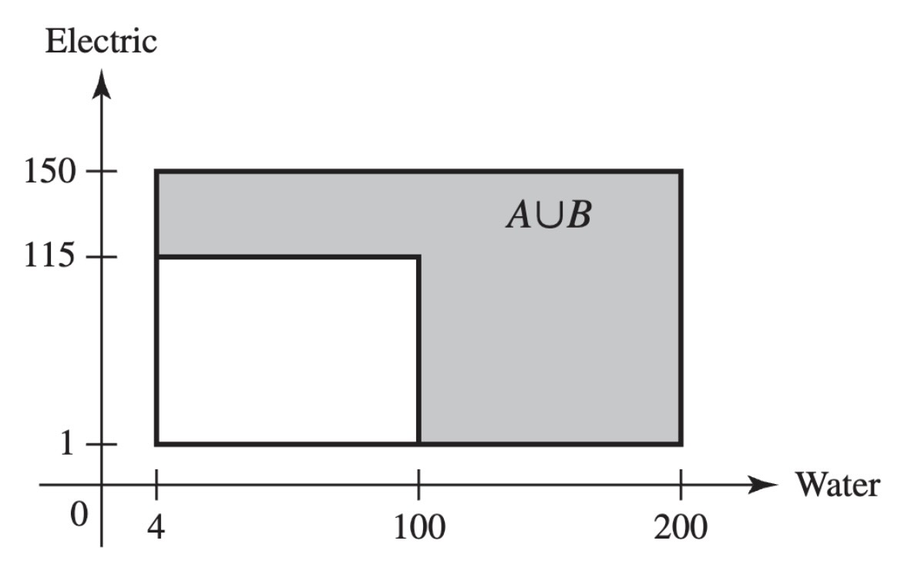
Example 3.2 (Example 3.1.2: Measuring a Person’s Height.) Consider an experiment in which a person is selected at random from some population and her height in inches is measured. This height is a random variable.
Example 3.3 (Example 3.1.3: Demands for Utilities) Consider the contractor in Example 1.9 who is concerned about the demands for water and electricity in a new office complex. The sample space was pictured in Figure 1.5, and it consists of a collection of points of the form \((x, y)\), where \(x\) is the demand for water and \(y\) is the demand for electricity. That is, each point \(s \in S\) is a pair \(s = (x, y)\). One random variable that is of interest in this problem is the demand for water. This can be expressed as \(X(s) = x\) when \(s = (x, y)\). The possible values of \(X\) are the numbers in the interval \([4, 200]\). Another interesting random variable is \(Y\), equal to the electricity demand, which can be expressed as \(Y(s) = y\) when \(s = (x, y)\). The possible values of \(Y\) are the numbers in the interval \([1, 150]\). A third possible random variable \(Z\) is an indicator of whether or not at least one demand is high. Let \(A\) and \(B\) be the two events described in Example 1.9. That is, \(A\) is the event that water demand is at least 100, and \(B\) is the event that electric demand is at least 115. Define
\[ Z(s) = \begin{cases} 1 &\text{if }s \in A \cup B, \\ 0 &\text{if }s \notin A \cup B. \end{cases} \]
The possible values of \(Z\) are the numbers \(0\) and \(1\). The event \(A \cup B\) is indicated in Figure 3.1.
The Distribution of a Random Variable
When a probability measure has been specified on the sample space of an experiment, we can determine probabilities associated with the possible values of each random variable \(X\). Let \(C\) be a subset of the real line such that \(\{X \in C\}\) is an event, and let \(\Pr(X \in C)\) denote the probability that the value of \(X\) will belong to the subset \(C\). Then \(\Pr(X \in C)\) is equal to the probability that the outcome \(s\) of the experiment will be such that \(X(s) \in C\). In symbols,
\[ \Pr(X \in C) = \Pr(\{s: X(s) \in C\}). \tag{3.1}\]
Definition 3.2 (Definition 3.1.2: Distribution) Let \(X\) be a random variable. The distribution of \(X\) is the collection of all probabilities of the form \(\Pr(X \in C)\) for all sets \(C\) of real numbers such that \(\{X \in C\}\) is an event.
It is a straightforward consequence of the definition of the distribution of \(X\) that this distribution is itself a probability measure on the set of real numbers. The set \(\{X \in C\}\) will be an event for every set \(C\) of real numbers that most readers will be able to imagine.
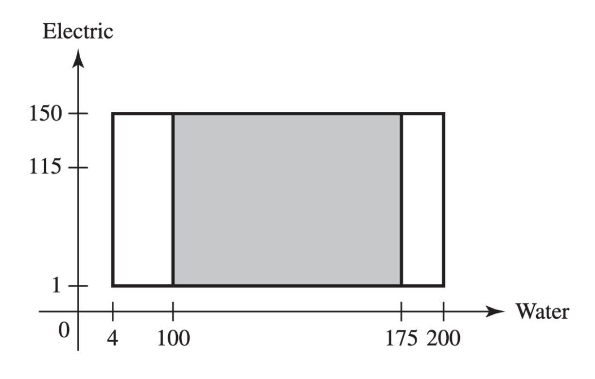
Example 3.4 (Example 3.1.4: Tossing a Coin) Consider again an experiment in which a fair coin is tossed 10 times, and let \(X\) be the number of heads that are obtained. In this experiment, the possible values of \(X\) are \(0, 1, 2, \ldots, 10\). For each \(x\), \(\Pr(X = x)\) is the sum of the probabilities of all of the outcomes in the event \(\{X = x\}\). Because the coin is fair, each outcome has the same probability \(1/2^{10}\), and we need only count how many outcomes \(s\) have \(X(s) = x\). We know that \(X(s) = x\) if and only if exactly \(x\) of the 10 tosses are \(H\). Hence, the number of outcomes \(s\) with \(X(s) = x\) is the same as the number of subsets of size \(x\) (to be the heads) that can be chosen from the 10 tosses, namely, \(\binom{10}{x}\), according to Definitions 1.14 and 1.15. Hence,
\[ \Pr(X = x) = \binom{10}{x}\frac{1}{2^{10}} \; \text{ for }x = 0, 1, 2, \ldots, 10. \]
Example 3.5 (Example 3.1.5: Demands for Utilities) In Example 1.9, we actually calculated some features of the distributions of the three random variables \(X\), \(Y\), and \(Z\) defined in Example 3.3. For example, the event \(A\), defined as the event that water demand is at least 100, can be expressed as \(A = \{X \geq 100\}\), and \(\Pr(A) = 0.5102\). This means that \(\Pr(X \geq 100) = 0.5102\). The distribution of \(X\) consists of all probabilities of the form \(\Pr(X \in C)\) for all sets \(C\) such that \(\{X \in C\}\) is an event. These can all be calculated in a manner similar to the calculation of \(\Pr(A)\) in Example 1.9. In particular, if \(C\) is a subinterval of the interval \([4, 200]\), then
\[ \Pr(X \in C) = \frac{ (150-1) \times (\text{length of interval }C) }{ 29,204 }. \tag{3.2}\]
For example, if \(C\) is the interval \([50,175]\), then its length is 125, and \(\Pr(X \in C) = 149 \times 125/29,204 = 0.6378\). The subset of the sample space whose probability was just calculated is drawn in Figure 3.2.
The general definition of distribution in Definition 3.2 is awkward, and it will be useful to find alternative ways to specify the distributions of random variables. In the remainder of this section, we shall introduce a few such alternatives.
Discrete Distributions
Definition 3.3 (Definition 3.1.3: Discrete Distribution / Random Variable) We say that a random variable \(X\) has a discrete distribution or that \(X\) is a discrete random variable if \(X\) can take only a finite number \(k\) of different values \(x_1, \ldots, x_k\) or, at most, an infinite sequence of different values \(x_1, x_2, \ldots\).
Random variables that can take every value in an interval are said to have continuous distributions and are discussed in Section 3.2.
Definition 3.4 (Definition 3.1.4: Probability Mass Function/pmf/Support) If a random variable \(X\) has a discrete distribution, the probability mass function (abbreviated pmf) of \(X\) is defined as the function \(f\) such that for every real number \(x\),
\[ f(x) = \Pr(X = x). \]
The closure of the set \(\{x \mid f(x) > 0\}\) is called the support of (the distribution of) \(X\).
Example 3.6 (Example 3.1.6: Demands for Utilities) The random variable \(Z\) in Example 3.3 equals 1 if at least one of the utility demands is high, and \(Z = 0\) if neither demand is high. Since \(Z\) takes only two different values, it has a discrete distribution. Note that \(\{s \mid Z(s) = 1\} = A \cup B\), where \(A\) and \(B\) are defined in Example 1.9. We calculated \(\Pr(A \cup B) = 0.65253\) in Example 1.9. If \(Z\) has pmf \(f\), then
\[ f(z) = \begin{cases} 0.65253 &\text{if }z = 1, \\ 0.34747 &\text{if }z = 0, \\ 0 &\text{otherwise.} \end{cases} \]
The support of \(Z\) is the set \(\{0, 1\}\), which has only two elements.
Example 3.7 (Example 3.1.7: Tossing a Coin) The random variable \(X\) in Example 3.4 has only 11 different possible values. Its pmf \(f\) is given at the end of that example for the values \(x = 0, \ldots, 10\) that constitute the support of \(X\); \(f(x) = 0\) for all other values of \(x\).
Here are some simple facts about probability mass functions.
Theorem 3.1 (Theorem 3.1.1) Let \(X\) be a discrete random variable with pmf \(f\). If \(x\) is not one of the possible values of \(X\), then \(f(x) = 0\). Also, if the sequence \(x_1, x_2, \ldots\) includes all the possible values of \(X\), then \(\sum_{i=1}^{\infty}f(x_i) = 1\).
A typical pmf is sketched in Figure 3.3, in which each vertical segment represents the value of \(f(x)\) corresponding to a possible value \(x\). The sum of the heights of the vertical segments in Figure 3.3 must be 1.
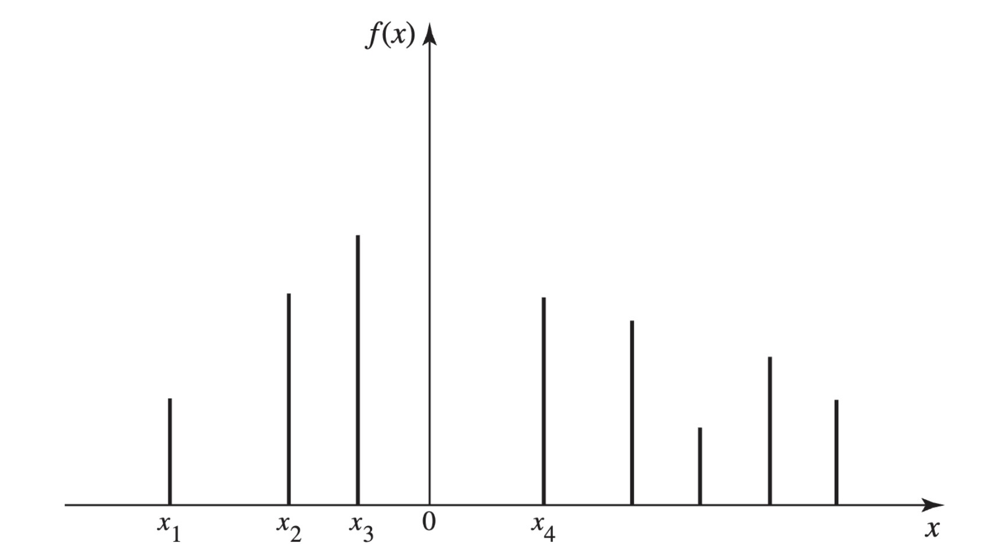
Theorem 3.2 shows that the pmf of a discrete random variable characterizes its distribution, and it allows us to dispense with the general definition of distribution when we are discussing discrete random variables.
Theorem 3.2 (Theorem 3.1.2) If \(X\) has a discrete distribution, the probability of each subset \(C\) of the real line can be determined from the relation
\[ \Pr(X \in C) = \sum_{x_i \in C}f(x_i). \]
Some random variables have distributions that appear so frequently that the distributions are given names. The random variable \(Z\) in Example 3.6 is one such example.
Definition 3.5 (Definition 3.1.5: Bernoulli Distribution/Random Variable (DeGroot and Schervish, p. 97)) A random variable \(Z\) that takes only two values \(0\) and \(1\) with \(\Pr(Z = 1) = p\) has the Bernoulli distribution with parameter \(p\). We also say that \(Z\) is a Bernoulli random variable with parameter \(p\).
The \(Z\) in Example 3.6 has the Bernoulli distribution with parameter 0.65252. It is easy to see that the name of each Bernoulli distribution is enough to allow us to compute the pmf, which, in turn, allows us to characterize its distribution.
We conclude this section with illustrations of two additional families of discrete distributions that arise often enough to have names.
Uniform Distributions on Integers
Example 3.8 (Example 3.1.8: Daily Numbers) A popular state lottery game requires participants to select a three-digit number (leading \(0\)s allowed). Then three balls, each with one digit, are chosen at random from well-mixed bowls. The sample space here consists of all triples \((i_1, i_2, i_3)\) where \(i_j \in \{0, \ldots, 9\}\) for \(j = 1, 2, 3\). If \(s = (i_1, i_2, i_3)\), define \(X(s) = 100i_1 + 10i_2 + i_3\). For example, \(X(0, 1, 5) = 15\). It is easy to check that \(\Pr(X = x) = 0.001\) for each integer \(x \in \{0, 1, \ldots, 999\}\).
Definition 3.6 (Definition 3.1.6: Uniform Distribution on Integers (DeGroot and Schervish, p. 97)) Let \(a \leq b\) be integers. Suppose that the value of a random variable \(X\) is equally likely to be each of the integers \(a, \ldots, b\). Then we say that \(X\) has the uniform distribution on the integers \(a, \ldots, b\).
The \(X\) in Example 3.8 has the uniform distribution on the integers \(0, 1, \ldots, 999\). A uniform distribution on a set of \(k\) integers has probability \(1/k\) on each integer. If \(b > a\), there are \(b − a + 1\) integers from \(a\) to \(b\) including \(a\) and \(b\). The next result follows immediately from what we have just seen, and it illustrates how the name of the distribution characterizes the distribution.
Theorem 3.3 (Theorem 3.1.3) If \(X\) has the uniform distribution on the integers \(a, \ldots, b\), the pmf of \(X\) is
\[ f(x) = \begin{cases} \frac{1}{b-a+1} &\text{for }x = a, \ldots, b, \\ 0 &\text{otherwise.} \end{cases} \]
The uniform distribution on the integers \(a, \ldots, b\) represents the outcome of an experiment that is often described by saying that one of the integers \(a, \ldots, b\) is chosen at random. In this context, the phrase “at random” means that each of the \(b − a + 1\) integers is equally likely to be chosen. In this same sense, it is not possible to choose an integer at random from the set of all positive integers, because it is not possible to assign the same probability to every one of the positive integers and still make the sum of these probabilities equal to 1. In other words, a uniform distribution cannot be assigned to an infinite sequence of possible values, but such a distribution can be assigned to any finite sequence.
Note: Random Variables Can Have the Same Distribution without Being the Same Random Variable. Consider two consecutive daily number draws as in Example 3.8. The sample space consists of all 6-tuples \((i_1, \ldots, i_6)\), where the first three coordinates are the numbers drawn on the first day and the last three are the numbers drawn on the second day (all in the order drawn). If \(s = (i_1, \ldots, i_6)\), let \(X_1(s) = 100i_1 + 10i_2 + i_3\) and let \(X_2(s) = 100i_4 + 10i_5 + i_6\). It is easy to see that \(X_1\) and \(X_2\) are different functions of \(s\) and are not the same random variable. Indeed, there is only a small probability that they will take the same value. But they have the same distribution because they assume the same values with the same probabilities. If a businessman has 1000 customers numbered \(0, \ldots, 999\), and he selects one at random and records the number \(Y\), the distribution of \(Y\) will be the same as the distribution of \(X_1\) and of \(X_2\), but \(Y\) is not like \(X_1\) or \(X_2\) in any other way.
Binomial Distributions
Example 3.9 (Example 3.1.9: Defective Parts (p. 98)) Consider again Example 2.18. In that example, a machine produces a defective item with probability \(p\) (\(0 < p < 1\)) and produces a nondefective item with probability \(1 − p\). We assumed that the events that the different items were defective were mutually independent. Suppose that the experiment consists of examining \(n\) of these items. Each outcome of this experiment will consist of a list of which items are defective and which are not, in the order examined. For example, we can let 0 stand for a nondefective item and 1 stand for a defective item. Then each outcome is a string of \(n\) digits, each of which is 0 or 1. To be specific, if, say, \(n = 6\), then some of the possible outcomes are
\[ \texttt{010010}, \texttt{100100}, \texttt{000011}, \texttt{110000}, \texttt{100001}, \texttt{000000}, \text{etc.} \tag{3.3}\]
We will let \(X\) denote the number of these items that are defective. Then the random variable \(X\) will have a discrete distribution, and the possible values of \(X\) will be \(0, 1, 2, \ldots, n\). For example, the first four outcomes listed in Equation 3.3 all have \(X(s) = 2\). The last outcome listed has \(X(s) = 0\).
Example 3.9 is a generalization of Example 2.18 with \(n\) items inspected rather than just six, and rewritten in the notation of random variables. For \(x = 0, 1, \ldots, n\), the probability of obtaining each particular ordered sequence of \(n\) items containing exactly \(x\) defectives and \(n − x\) nondefectives is \(p^x(1 − p)^{n−x}\), just as it was in Example 2.18. Since there are \(\binom{n}{x}\) different ordered sequences of this type, it follows that
\[ \Pr(X = x) = \binom{n}{x}p^x(1-p)^{n-x}. \]
Therefore, the pmf of \(X\) will be as follows:
\[ f(x) = \begin{cases} \binom{n}{x}p^x(1-p)^{n-x} &\text{ for }x = 0, 1, \ldots, n, \\ 0 &\text{otherwise.} \tag{3.4}\]
Definition 3.7 (Definition 3.1.7: Binomial Distribution/Random Variable) The discrete distribution represented by the pmf in Equation 3.4 is called the binomial distribution with parameters \(n\) and \(p\). A random variable with this distribution is said to be a binomial random variable with parameters \(n\) and \(p\).
The reader should be able to verify that the random variable \(X\) in Example 3.4, the number of heads in a sequence of 10 independent tosses of a fair coin, has the binomial distribution with parameters \(10\) and \(1/2\).
Since the name of each binomial distribution is sufficient to construct its pmf, it follows that the name is enough to identify the distribution. The name of each distribution includes the two parameters. The binomial distributions are very important in probability and statistics and will be discussed further in later chapters of this book.
A short table of values of certain binomial distributions is given at the end of this book. It can be found from this table, for example, that if \(X\) has the binomial distribution with parameters \(n = 10\) and \(p = 0.2\), then \(\Pr(X = 5) = 0.0264\) and \(\Pr(X \geq 5) = 0.0328\).
As another example, suppose that a clinical trial is being run. Suppose that the probability that a patient recovers from her symptoms during the trial is \(p\) and that the probability is \(1 − p\) that the patient does not recover. Let \(Y\) denote the number of patients who recover out of \(n\) independent patients in the trial. Then the distribution of \(Y\) is also binomial with parameters \(n\) and \(p\). Indeed, consider a general experiment that consists of observing \(n\) independent repititions (trials) with only two possible results for each trial. For convenience, call the two possible results “success” and “failure.” Then the distribution of the number of trials that result in success will be binomial with parameters \(n\) and \(p\), where \(p\) is the probability of success on each trial.
Note: Names of Distributions. In this section, we gave names to several families of distributions. The name of each distribution includes any numerical parameters that are part of the definition. For example, the random variable \(X\) in Example 3.4 has the binomial distribution with parameters \(10\) and \(1/2\). It is a correct statement to say that \(X\) has a binomial distribution or that \(X\) has a discrete distribution, but such statements are only partial descriptions of the distribution of \(X\). Such statements are not sufficient to name the distribution of \(X\), and hence they are not sufficient as answers to the question “What is the distribution of \(X\)?” The same considerations apply to all of the named distributions that we introduce elsewhere in the book. When attempting to specify the distribution of a random variable by giving its name, one must give the full name, including the values of any parameters. Only the full name is sufficient for determining the distribution.
Summary
A random variable is a real-valued function defined on a sample space. The distribution of a random variable \(X\) is the collection of all probabilities \(\Pr(X \in C)\) for all subsets \(C\) of the real numbers such that \(\{X \in C\}\) is an event. A random variable \(X\) is discrete if there are at most countably many possible values for \(X\). In this case, the distribution of \(X\) can be characterized by the probability mass function pmf of \(X\), namely, \(f(x) = \Pr(X = x)\) for \(x\) in the set of possible values. Some distributions are so famous that they have names. One collection of such named distributions is the collection of uniform distributions on finite sets of integers. A more famous collection is the collection of binomial distributions whose parameters are \(n\) and \(p\), where \(n\) is a positive integer and \(0 < p < 1\), having pmf Equation 3.4. The binomial distribution with parameters \(n = 1\) and \(p\) is also called the Bernoulli distribution with parameter \(p\). The names of these distributions also characterize the distributions.
Exercises
Exercise 3.1 (Exercise 3.1.1) Suppose that a random variable \(X\) has the uniform distribution on the integers \(10, \ldots, 20\). Find the probability that \(X\) is even.
Exercise 3.2 (Exercise 3.1.2) Suppose that a random variable \(X\) has a discrete distribution with the following pmf:
\[ f(x) = \begin{cases} cx &\text{for }x = 1, \ldots, 5, \\ 0 &\text{otherwise.} \end{cases} \]
Determine the value of the constant \(c\).
Exercise 3.3 (Exercise 3.1.3) Suppose that two balanced dice are rolled, and let \(X\) denote the absolute value of the difference between the two numbers that appear. Determine and sketch the pmf of \(X\).
Exercise 3.4 (Exercise 3.1.4) Suppose that a fair coin is tossed 10 times independently. Determine the pmf of the number of heads that will be obtained.
Exercise 3.5 (Exercise 3.1.5) Suppose that a box contains seven red balls and three blue balls. If five balls are selected at random, without replacement, determine the pmf of the number of red balls that will be obtained.
Exercise 3.6 (Exercise 3.1.6) Suppose that a random variable \(X\) has the binomial distribution with parameters \(n = 15\) and \(p = 0.5\). Find \(\Pr(X < 6)\).
Exercise 3.7 (Exercise 3.1.7) Suppose that a random variable \(X\) has the binomial distribution with parameters \(n = 8\) and \(p = 0.7\). Find \(\Pr(X \geq 5)\) by using the table given at the end of this book. Hint: Use the fact that \(\Pr(X \geq 5) = \Pr(Y \leq 3)\), where \(Y\) has the binomial distribution with parameters \(n = 8\) and \(p = 0.3\).
Exercise 3.8 (Exercise 3.1.8) If 10 percent of the balls in a certain box are red, and if 20 balls are selected from the box at random, with replacement, what is the probability that more than three red balls will be obtained?
Exercise 3.9 (Exercise 3.1.9) Suppose that a random variable \(X\) has a discrete distribution with the following pmf:
\[ f(x) = \begin{cases} \frac{c}{2^x} &\text{for }x = 0, 1, 2, \ldots, \\ 0 &\text{otherwise.} \end{cases} \]
Find the value of the constant \(c\).
Exercise 3.10 (Exercise 3.1.10) A civil engineer is studying a left-turn lane that is long enough to hold seven cars. Let \(X\) be the number of cars in the lane at the end of a randomly chosen red light. The engineer believes that the probability that \(X = v\) is proportional to \((v + 1)(8 − v)\) for \(v = 0, \ldots, 7\) (the possible values of \(X\)).
- Find the pmf of \(X\).
- Find the probability that \(X\) will be at least 5.
Exercise 3.11 (Exercise 3.1.11) Show that there does not exist any number \(c\) such that the following function would be a pmf:
\[ f(v) = \begin{cases} \frac{c}{v} &\text{for }v = 1, 2, \ldots, \\ 0 &\text{otherwise.} \end{cases} \]
3.2 Continuous Distributions
Next, we focus on random variables that can assume every value in an interval (bounded or unbounded). If a random variable \(X\) has associated with it a function \(f\) such that the integral of \(f\) over each interval gives the probability that X is in the interval, then we call \(f\) the probability density function (pdf) of \(X\) and we say that \(X\) has a continuous distribution.
The Probability Density Function
Example 3.10 (Example 3.2.1: Demands for Utilities) In Example 3.5, we determined the distribution of the demand for water, \(X\). From Figure 3.2, we see that the smallest possible value of \(X\) is 4 and the largest is 200. For each interval \(C = [c_0, c_1] \subset [4, 200]\), Equation 3.2 says that
\[ \Pr(c_0 \leq X \leq c_1) = \frac{149(c_1-c_0)}{29204} = \frac{c_1 - c_0}{196} = \int_{c_0}^{c_1}\frac{1}{196}dx. \]
So, if we define
\[ f(v) = \begin{cases} \frac{1}{196} &\text{if }4 \leq x \leq 200, \\ 0 &\text{otherwise,} \end{cases} \tag{3.5}\]
we have that
\[ \Pr(c_0 \leq X \leq c_1) = \int_{c_0}^{c_1}f(x)dx. \tag{3.6}\]
Because we defined \(f(x)\) to be 0 for \(x\) outside of the interval \([4, 200]\), we see that Equation 3.6 holds for all \(c_0 \leq c_1\), even if \(c_0 = -\infty\) and/or \(c_1 = \infty\).
The water demand \(X\) in Example 3.10 is an example of the following.
Definition 3.8 (Definition 3.2.1: Continuous Distribution / Random Variable) We say that a random variable \(X\) has a continuous distribution or that \(X\) is a continuous random variable if there exists a nonnegative function \(f\), defined on the real line, such that for every interval of real numbers (bounded or unbounded), the probability that \(X\) takes a value in the interval is the integral of \(f\) over the interval.
For example, in the situation described in Definition 3.8, for each bounded closed interval \([a, b]\),
\[ \Pr(a \leq X \leq b) = \int_{a}^{b}f(x)dx. \tag{3.7}\]
Similarly, \(\Pr(X \geq a) = \int_{a}^{\infty}f(x)dx\) and \(\Pr(X \leq b) = \int_{-\infty}^{b}f(x)dx\).
We see that the function \(f\) characterizes the distribution of a continuous random variable in much the same way that the probability mass function characterizes the distribution of a discrete random variable. For this reason, the function \(f\) plays an important role, and hence we give it a name.
Definition 3.9 (Definition 3.2.2: Probability Density Function/pdf/Support) If \(X\) has a continuous distribution, the function \(f\) described in Definition 3.8 is called the probability density function (abbreviated pdf) of \(X\). The closure of the set \(\{x \mid f(x) > 0\}\) is called the support of (the distribution of) \(X\).
Example 3.10 demonstrates that the water demand \(X\) has PDF given by Equation 3.5.
Every PDF \(f\) must satisfy the following two requirements:
\[ f(x) \geq 0, \; \text{ for all }x, \tag{3.8}\]
and
\[ \int_{-\infty}^{\infty}f(x)dx = 1. \tag{3.9}\]
A typical pdf is sketched in Figure 3.4. In that figure, the total area under the curve must be 1, and the value of \(\Pr(a \leq X \leq b)\) is equal to the area of the shaded region.
Note: Continuous Distributions Assign Probability 0 to Individual Values. The integral in Equation 3.7 also equals \(\Pr(a < X \leq b)\) as well as \(\Pr(a < X < b)\) and \(\Pr(a \leq X < b)\). Hence, it follows from the definition of continuous distributions that, if \(X\) has a continuous distribution, \(\Pr(X = a) = 0\) for each number \(a\). As we noted on page 20, the fact that \(\Pr(X = a) = 0\) does not imply that \(X = a\) is impossible. If it did, all values of \(X\) would be impossible and \(X\) couldn’t assume any value. What happens is that the probability in the distribution of \(X\) is spread so thinly that we can only see it on sets like nondegenerate intervals. It is much the same as the fact that lines have 0 area in two dimensions, but that does not mean that lines are not there. The two vertical lines indicated under the curve in Figure 3.4 have 0 area, and this signifies that \(\Pr(X = a) = \Pr(X = b) = 0\). However, for each \(\epsilon > 0\) and each \(a\) such that \(f(a) > 0\), \(\Pr(a − \epsilon \leq X \leq a + \epsilon) \approx 2\epsilon f(a) > 0\).
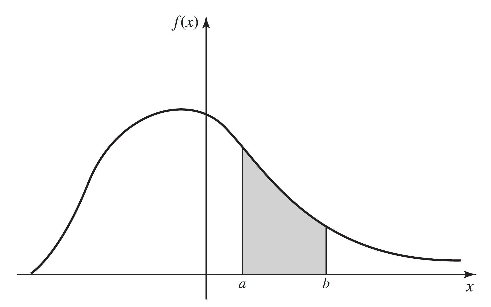
Nonuniqueness of the PDF
If a random variable \(X\) has a continuous distribution, then \(\Pr(X = x) = 0\) for every individual value \(x\). Because of this property, the values of each pdf can be changed at a finite number of points, or even at certain infinite sequences of points, without changing the value of the integral of the pdf over any subset \(A\). In other words, the values of the pdf of a random variable \(X\) can be changed arbitrarily at many points without affecting any probabilities involving \(X\), that is, without affecting the probability distribution of \(X\). At exactly which sets of points we can change a pdf depends on subtle features of the definition of the Riemann integral. We shall not deal with this issue in this text, and we shall only contemplate changes to pdfs at finitely many points.
To the extent just described, the pdf of a random variable is not unique. In many problems, however, there will be one version of the pdf that is more natural than any other because for this version the pdf will, wherever possible, be continuous on the real line. For example, the pdf sketched in Figure 3.4 is a continuous function over the entire real line. This pdf could be changed arbitrarily at a few points without affecting the probability distribution that it represents, but these changes would introduce discontinuities into the pdf without introducing any apparent advantages.
Throughout most of this book, we shall adopt the following practice: If a random variable \(X\) has a continuous distribution, we shall give only one version of the pdf of \(X\) and we shall refer to that version as the pdf of \(X\), just as though it had been uniquely determined. It should be remembered, however, that there is some freedom in the selection of the particular version of the pdf that is used to represent each continuous distribution. The most common place where such freedom will arise is in cases like Equation 3.5 where the pdf is required to have discontinuities. Without making the function \(f\) any less continuous, we could have defined the pdf in that example so that \(f(4) = f(200) = 0\) instead of \(f(4) = f(200) = 1/196\). Both of these choices lead to the same calculations of all probabilities associated with \(X\), and they are both equally valid. Because the support of a continuous distribution is the closure of the set where the pdf is strictly positive, it can be shown that the support is unique. A sensible approach would then be to choose the version of the pdf that was strictly positive on the support whenever possible.
The reader should note that “continuous distribution” is not the name of a distribution, just as “discrete distribution” is not the name of a distribution. There are many distributions that are discrete and many that are continuous. Some distributions of each type have names that we either have introduced or will introduce later.
We shall now present several examples of continuous distributions and their PDFs.
Uniform Distributions on Intervals
Example 3.11 (Example 3.2.2: Temperature Forecasts) Television weather forecasters announce high and low temperature forecasts as integer numbers of degrees. These forecasts, however, are the results of very sophisticated weather models that provide more precise forecasts that the television personalities round to the nearest integer for simplicity. Suppose that the forecaster announces a high temperature of y. If we wanted to know what temperature \(X\) the weather models actually produced, it might be safe to assume that \(X\) was equally likely to be any number in the interval from \(y − 1/2\) to \(y + 1/2\).
The distribution of \(X\) in Example 3.11 is a special case of the following.
Definition 3.10 (Definition 3.2.3: Uniform Distribution on an Interval) Let \(a\) and \(b\) be two given real numbers such that \(a < b\). Let \(X\) be a random variable such that it is known that \(a \leq X \leq b\) and, for every subinterval of \([a, b]\), the probability that \(X\) will belong to that subinterval is proportional to the length of that subinterval. We then say that the random variable \(X\) has the uniform distribution on the interval \([a, b]\).
A random variable \(X\) with the uniform distribution on the interval \([a, b]\) represents the outcome of an experiment that is often described by saying that a point is chosen at random from the interval \([a, b]\). In this context, the phrase “at random” means that the point is just as likely to be chosen from any particular part of the interval as from any other part of the same length.
Theorem 3.4 (Theorem 3.2.1: Uniform Distribution PDF) If \(X\) has the uniform distribution on an interval \([a, b]\), then the pdf of \(X\) is
\[ f(x) = \begin{cases} \frac{1}{b - a} &\text{for }a \leq x \leq b, \\ 0 &\text{otherwise.} \end{cases} \tag{3.10}\]
Proof. \(X\) must take a value in the interval \([a, b]\). Hence, the pdf \(f(x)\) of \(X\) must be 0 outside of \([a, b]\). Furthermore, since any particular subinterval of \([a, b]\) having a given length is as likely to contain \(X\) as is any other subinterval having the same length, regardless of the location of the particular subinterval in \([a, b]\), it follows that \(f(x)\) must be constant throughout \([a, b]\), and that interval is then the support of the distribution. Also,
\[ \int_{-\infty}^{\infty}f(x)dx = \int_{a}^{b}f(x)dx = 1. \tag{3.11}\]
Therefore, the constant value of \(f(x)\) throughout \([a, b]\) must be \(1/(b − a)\), and the pdf of \(X\) must be Equation 3.10.
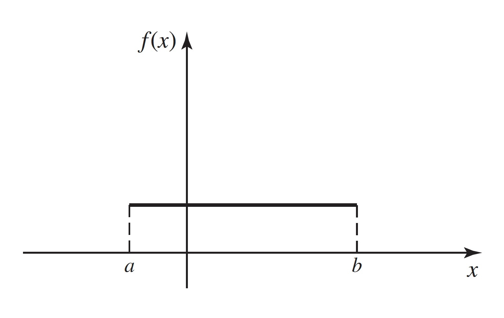
The pdf Equation 3.10 is sketched in Figure 3.5. As an example, the random variable \(X\) (demand for water) in Example 3.10 has the uniform distribution on the interval \([4, 200]\).
Note: Density Is Not Probability. The reader should note that the pdf in Equation 3.10 can be greater than 1, particularly if \(b − a < 1\). Indeed, pdfs can be unbounded, as we shall see in Example 3.15. The pdf of \(X\), \(f(x)\), itself does not equal the probability that \(X\) is near \(x\). The integral of \(f\) over values near \(x\) gives the probability that \(X\) is near \(x\), and the integral is never greater than 1.
It is seen from Equation 3.10 that the pdf representing a uniform distribution on a given interval is constant over that interval, and the constant value of the pdf is the reciprocal of the length of the interval. It is not possible to define a uniform distribution over an unbounded interval, because the length of such an interval is infinite.
Consider again the uniform distribution on the interval \([a, b]\). Since the probability is 0 that one of the endpoints \(a\) or \(b\) will be chosen, it is irrelevant whether the distribution is regarded as a uniform distribution on the closed interval \(a \leq x \leq b\), or as a uniform distribution on the open interval \(a < x < b\), or as a uniform distribution on the half-open and half-closed interval \((a, b]\) in which one endpoint is included and the other endpoint is excluded.
For example, if a random variable \(X\) has the uniform distribution on the interval \([−1, 4]\), then the pdf of \(X\) is
\[ f(x) = \begin{cases} 1/5 &\text{for }-1 \leq x \leq 4, \\ 0 &\text{otherwise.} \end{cases} \]
Furthermore,
\[ \Pr(0 \leq X < 2) = \int_{0}^{2}f(x)dx = \frac{2}{5}. \]
Notice that we defined the pdf of \(X\) to be strictly positive on the closed interval \([−1, 4]\) and 0 outside of this closed interval. It would have been just as sensible to define the pdf to be strictly positive on the open interval \((−1, 4)\) and 0 outside of this open interval. The probability distribution would be the same either way, including the calculation of \(\Pr(0 \leq X < 2)\) that we just performed. After this, when there are several equally sensible choices for how to define a pdf, we will simply choose one of them without making any note of the other choices.
Other Continuous Distributions
Example 3.12 (Example 3.2.3: Incompletely Specified pdf) Suppose that the pdf of a certain random variable \(X\) has the following form:
\[ f(x) = \begin{cases} cx &\text{for }0 < x < 4, \\ 0 &\text{otherwise,} \end{cases} \]
where \(c\) is a given constant. We shall determine the value of \(c\).
For every pdf, it must be true that \(\int_{-\infty}^{\infty}f(x) = 1\). Therefore, in this example,
\[ \int_{0}^{4}cx~dx = 8c = 1. \]
Hence, \(c = 1/8\).
Note: Calculating Normalizing Constants. The calculation in Example 3.12 illustrates an important point that simplifies many statistical results. The pdf of \(X\) was specified without explicitly giving the value of the constant \(c\). However, we were able to figure out what was the value of \(c\) by using the fact that the integral of a pdf must be 1. It will often happen, especially in ?sec-8 where we find sampling distributions of summaries of observed data, that we can determine the pdf of a random variable except for a constant factor. That constant factor must be the unique value such that the integral of the pdf is 1, even if we cannot calculate it directly.
Example 3.13 (Example 3.2.4: Calculating Probabilities from a PDF (p. 105)) Suppose that the PDF of \(X\) is as in Example 3.12, namely,
\[ f(x) = \begin{cases} \frac{x}{8} &\text{for }0 < x < 4, \\ 0 &\text{otherwise.} \end{cases} \]
We shall now determine the values of \(\Pr(1 \leq X \leq 2)\) and \(\Pr(X > 2)\). Apply Equation 3.7 to get
\[ \Pr(1 \leq X \leq 2) = \int_1^2 \frac{1}{8}xdx = \frac{3}{16} \]
and
\[ \Pr(X > 2) = \int_2^4 \frac{1}{8}xdx = \frac{3}{4}. \]
Example 3.14 (Example 3.2.5: Unbounded Random Variables) It is often convenient and useful to represent a continuous distribution by a pdf that is positive over an unbounded interval of the real line. For example, in a practical problem, the voltage \(X\) in a certain electrical system might be a random variable with a continuous distribution that can be approximately represented by the pdf
\[ f(x) = \begin{cases} 0 &\text{for }x \leq 0, \\ \frac{1}{(1+x)^2} &\text{for }x > 0. \end{cases} \tag{3.12}\]
It can be verified that the properties Equation 3.8 and Equation 3.9 required of all pdfs are satisfied by \(f(x)\).
Even though the voltage \(X\) may actually be bounded in the real situation, the pdf Equation 3.12 may provide a good approximation for the distribution of \(X\) over its full range of values. For example, suppose that it is known that the maximum possible value of \(X\) is 1000, in which case \(\Pr(X > 1000) = 0\). When the pdf Equation 3.12 is used, we compute \(\Pr(X > 1000) = 0.001\). If Equation 3.12 adequately represents the variability of \(X\) over the interval \((0, 1000)\), then it may be more convenient to use the pdf Equation 3.12 than a pdf that is similar to Equation 3.12 for \(x \leq 1000\), except for a new normalizing constant, and is 0 for \(x > 1000\). This can be especially true if we do not know for sure that the maximum voltage is only 1000.
Example 3.15 (Example 3.2.6: Unbounded PDFs) Since a value of a PDF is a probability density, rather than a probability, such a value can be larger than \(1\). In fact, the values of the following PDF are unbounded in the neighborhood of \(x = 0\):
\[ f(x) = \begin{cases} \frac{2}{3}x^{-1/3} &\text{for }0 < x < 1, \\ 0 &\text{otherwise.} \end{cases} \tag{3.13}\]
It can be verified that even though the PDF Equation 3.13 is unbounded, it satisfies the properties Equation 3.8 and Equation 3.9 required of a PDF.
Mixed Distributions
Most distributions that are encountered in practical problems are either discrete or continuous. We shall show, however, that it may sometimes be necessary to consider a distribution that is a mixture of a discrete distribution and a continuous distribution.
Example 3.16 (Example 3.2.7: Truncated Voltage (DeGroot and Schervish, p. 106)) Suppose that in the electrical system considered in Example 3.14, the voltage \(X\) is to be measured by a voltmeter that will record the actual value of \(X\) if \(X \leq 3\) but will simply record the value \(3\) if \(X > 3\). If we let \(Y\) denote the value recorded by the voltmeter, then the distribution of \(Y\) can be derived as follows.
First, \(\Pr(Y = 3) = \Pr(X \geq 3) = 1/4\). Since the single value \(Y = 3\) has probability \(1/4\), it follows that \(\Pr(0 < Y < 3) = 3/4\). Furthermore, since \(Y = X\) for \(0 < X < 3\), this probability \(3/4\) for \(Y\) is distributed over the interval \((0, 3)\) according to the same PDF (3.2.8) as that of \(X\) over the same interval. Thus, the distribution of \(Y\) is specified by the combination of a PDF over the interval \((0, 3)\) and a positive probability at the point \(Y = 3\).
Summary
A continuous distribution is characterized by its probability density function (PDF). A nonnegative function \(f\) is the PDF of the distribution of \(X\) if, for every interval \([a, b]\), \(\Pr(a \leq X \leq b) = \int_a^b f(x)dx\). Continuous random variables satisfy \(\Pr(X = x) = 0\) for every value \(x\). If the PDF of a distribution is constant on an interval \([a, b]\) and is 0 off the interval, we say that the distribution is uniform on the interval \([a, b]\).
Exercises
Exercise 3.12 (Exercise 3.2.1) Let X be a random variable with the PDF specified in Example 3.15. Compute \(\Pr(X \leq 8/27)\).
Exercise 3.13 (Exercise 3.2.2) Suppose that the PDF of a random variable \(X\) is as follows:
\[ f(x) = \begin{cases} \frac{4}{3}(1-x^3) &\text{for }0 < x < 1, \\ 0 &\text{otherwise.} \end{cases} \]
Sketch this PDF and determine the values of the following probabilities:
\(\Pr\left(X < \frac{1}{2}\right)\)
\(\Pr\left(\frac{1}{4} < X < \frac{3}{4}\right)\)
\(\Pr\left(X > \frac{1}{3}\right)\)
Exercise 3.14 (Exercise 3.2.3) Suppose that the PDF of a random variable \(X\) is as follows:
\[ f(x) = \begin{cases} \frac{1}{36}(9 - x^2) &\text{for }-3 \leq x \leq 3, \\ 0 &\text{otherwise.} \end{cases} \]
Sketch this pdf and determine the values of the following probabilities:
\(\Pr(X < 0)\)
\(\Pr(−1 \leq X \leq 1)\)
\(\Pr(X > 2)\).
Exercise 3.15 (Exercise 3.2.4)
- Suppose that the pdf of a random variable \(X\) is as follows:
\[ f(x) = \begin{cases} cx^2 &\text{for }1 \leq x \leq 2, \\ 0 &\text{otherwise.} \end{cases} \]
- Find the value of the constant \(c\) and sketch the pdf.
- Find the value of \(\Pr(X > 3/2)\).
Exercise 3.16 (Exercise 3.2.5) Suppose that the pdf of a random variable \(X\) is as follows:
\[ f(x) = \begin{cases} \frac{1}{8}x &\text{for }0 \leq x \leq 4, 0 &\text{otherwise.} \end{cases} \]
- Find the value of \(t\) such that \(\Pr(X \leq t) = 1/4\).
- Find the value of \(t\) such that \(\Pr(X \geq t) = 1/2\).
Exercise 3.17 (Exercise 3.2.6) Let \(X\) be a random variable for which the pdf is as given in Exercise 3.16. After the value of \(X\) has been observed, let \(Y\) be the integer closest to \(X\). Find the pmf of the random variable \(Y\).
Exercise 3.18 (Exercise 3.2.7) Suppose that a random variable \(X\) has the uniform distribution on the interval \([−2, 8]\). Find the pdf of \(X\) and the value of \(\Pr(0 < X < 7)\).
Exercise 3.19 (Exercise 3.2.8) Suppose that the pdf of a random variable \(X\) is as follows:
\[ f(x) = \begin{cases} ce^{-2x} &\text{for }x > 0, \\ 0 &\text{otherwise.} \end{cases} \]
Find the value of the constant \(c\) and sketch the PDF.
Find the value of \(\Pr(1 < X < 2)\).
Exercise 3.20 (Exercise 3.2.9) Show that there does not exist any number \(c\) such that the following function \(f(x)\) would be a pdf:
\[ f(x) = \begin{cases} \frac{c}{1 + x} &\text{for }x > 0, \\ 0 &\text{otherwise.} \end{cases} \]
Exercise 3.21 (Exercise 3.2.10) Suppose that the pdf of a random variable \(X\) is as follows:
\[ f(x) = \begin{cases} \frac{c}{(1-x)^{1/2}} &\text{for }0 < x < 1, \\ 0 &\text{otherwise.} \end{cases} \]
- Find the value of the constant \(c\) and sketch the pdf.
- Find the value of \(\Pr(X \leq 1/2)\).
Exercise 3.22 (Exercise 3.2.11) Show that there does not exist any number \(c\) such that the following function \(f(x)\) would be a pdf:
\[ f(x) = \begin{cases} \frac{c}{x} &\text{for }0 < x < 1, \\ 0 &\text{otherwise.} \end{cases} \]
Exercise 3.23 (Exercise 3.2.12) In Example 3.3, determine the distribution of the random variable \(Y\), the electricity demand. Also, find \(\Pr(Y < 50)\).
Exercise 3.24 (Exercise 3.2.13) An ice cream seller takes 20 gallons of ice cream in her truck each day. Let \(X\) stand for the number of gallons that she sells. The probability is \(0.1\) that \(X = 20\). If she doesn’t sell all 20 gallons, the distribution of \(X\) follows a continuous distribution with a pdf of the form
\[ f(x) = \begin{cases} cx &\text{for }0 < x < 20, \\ 0 &\text{otherwise,} \end{cases} \]
where \(c\) is a constant that makes \(\Pr(X < 20) = 0.9\). Find the constant \(c\) so that \(\Pr(X < 20) = 0.9\) as described above.
3.3 The Cumulative Distribution Function
Although a discrete distribution is characterized by its PMF and a continuous distribution is characterized by its PDF, every distribution has a common characterization through its (cumulative) distribution function (CDF). The inverse of the CDF is called the quantile function, and it is useful for indicating where the probability is located in a distribution.
Example 3.17 (Example 3.3.1: Voltage (pp. 107-108)) Consider again the voltage \(X\) from Example 3.14. The distribution of \(X\) is characterized by the pdf in Equation 3.12. An alternative characterization that is more directly related to probabilities associated with \(X\) is obtained from the following function:
\[ \begin{align*} F(x) &= \Pr(X \leq x) = \int_{-\infty}^{x}f(y)~dy = \begin{cases} 0 &\text{for }x \leq 0, \\ \int_{0}^{x}\frac{dy}{(1+y)^2} &\text{for }x > 0 \end{cases} \\ &= \begin{cases} 0 &\text{for }x \leq 0, \\ 1 - \frac{1}{1+x} &\text{for }x > 0. \end{cases} \end{align*} \]
So, for example, \(\Pr(X \leq 3) = F(3) = 3/4\).
Definition and Basic Properties
Definition 3.11 (Definition 3.3.1: Cumulative Distribution Function (DeGroot and Schervish, p. 108)) The Cumulative Distribution Function (abbreviated CDF) \(F\) of a random variable \(X\) is the function
\[ F(x) = \Pr(X \leq x) \; \text{ for } -\infty < x < \infty. \tag{3.14}\]
It should be emphasized that the cumulative distribution function is defined as above for every random variable \(X\), regardless of whether the distribution of \(X\) is discrete, continuous, or mixed. For the continuous random variable in Example 3.17, the CDF was calculated in ?eq-3-3-1. Here is a discrete example:
Example 3.18 (Example 3.3.2: Bernoulli CDF) Let \(X\) have the Bernoulli distribution with parameter \(p\) defined in Definition 3.5. Then \(\Pr(X = 0) = 1 − p\) and \(\Pr(X = 1) = p\). Let \(F\) be the CDF of \(X\). It is easy to see that \(F(x) = 0\) for \(x < 0\) because \(X \geq 0\) for sure. Similarly, \(F(x) = 1\) for \(x \geq 1\) because \(X \leq 1\) for sure. For \(0 \leq x < 1\), \(\Pr(X \leq x) = Pr(X = 0) = 1 − p\) because 0 is the only possible value of \(X\) that is in the interval \((−\infty, x]\). In summary,
\[ F(x) = \begin{cases} 0 &\text{for }x < 0, \\ 1 - p &\text{for }0 \leq x < 1, \\ 1 &\text{for }x \geq 1. \end{cases} \]
We shall soon see (Theorem 3.6) that the CDF allows calculation of all interval probabilities; hence, it characterizes the distribution of a random variable. It follows from Equation 3.14 that the CDF of each random variable \(X\) is a function \(F\) defined on the real line. The value of \(F\) at every point \(x\) must be a number \(F(x)\) in the interval \([0, 1]\) because \(F(x)\) is the probability of the event \(\{X \leq x\}\). Furthermore, it follows from Equation 3.14 that the CDF of every random variable \(X\) must have the following three properties.
Proposition 3.1 (Property 3.3.1: Nondecreasing.) The function \(F(x)\) is nondecreasing as \(x\) increases; that is, if \(x_1 < x_2\), then \(F(x_1) \leq F(x_2)\).
Proof. If \(x_1 < x_2\), then the event \(\{X \leq x_1\}\) is a subset of the event \(\{X \leq x_2\}\). Hence, \(\Pr\{X \leq x_1\} \leq \Pr\{X \leq x_2\}\) according to Theorem 1.15.
An example of a CDF is sketched in Figure 3.6. It is shown in that figure that \(0 \leq F(x) \leq 1\) over the entire real line. Also, \(F(x)\) is always nondecreasing as \(x\) increases, although \(F(x)\) is constant over the interval \(x_1 \leq x \leq x_2\) and for \(x \geq x_4\).
Proposition 3.2 (Property 3.3.2: Limits at \(\pm \infty\).) \(\lim_{x \rightarrow -\infty} F(x) = 0\) and \(\lim_{x \rightarrow \infty} F(x) = 1\).
Proof. As in the proof of Proposition 3.1, note that \(\{X \leq x_1\} \subset \{X \leq x_2\}\) whenever \(x_1 < x_2\). The fact that \(\Pr(X \leq x)\) approaches 0 as \(x \rightarrow -\infty\) now follows from Exercise 1.94. Similarly, the fact that \(\Pr(X \leq x)\) approaches 1 as \(x \rightarrow \infty\) follows from Exercise 1.93.
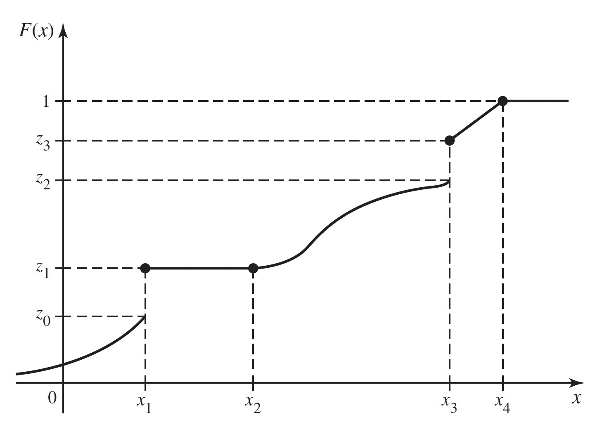
The limiting values specified in Proposition 3.2 are indicated in Figure 3.6. In this figure, the value of \(F(x)\) actually becomes 1 at \(x = x_4\) and then remains 1 for \(x > x_4\). Hence, it may be concluded that \(\Pr(X \leq x_4) = 1\) and \(\Pr(X > x_4) = 0\). On the other hand, according to the sketch in Figure 3.6, the value of \(F(x)\) approaches 0 as \(x \rightarrow −\infty\), but does not actually become 0 at any finite point \(x\). Therefore, for every finite value of \(x\), no matter how small, \(\Pr(X \leq x) > 0\).
A CDF need not be continuous. In fact, the value of \(F(x)\) may jump at any finite or countable number of points. In Figure 3.6, for instance, such jumps or points of discontinuity occur where \(x = x_1\) and \(x = x_3\). For each fixed value \(x\), we shall let \(F(x^-)\) denote the limit of the values of \(F(y)\) as \(y\) approaches \(x\) from the left, that is, as \(y\) approaches \(x\) through values smaller than \(x\). In symbols,
\[ F(x^{-}) = \lim_{y \rightarrow x,~y < x}F(y). \]
Similarly, we shall define \(F(x^+)\) as the limit of the values of \(F(y)\) as \(y\) approaches \(x\) from the right. Thus,
\[ F(x^+) = \lim_{y \rightarrow x,~y > x}F(y). \]
If the CDF is continuous at a given point \(x\), then \(F(x^{-}) = F(x^+) = F(x)\) at that point.
Proposition 3.3 (Property 3.3.3: Continuity from the Right.) A CDF is always continuous from the right; that is, \(F(x) = F(x^+)\) at every point \(x\).
Proof. Let \(y_1 > y_2 > \cdots\) be a sequence of numbers that are decreasing such that \(\lim_{n \rightarrow \infty}y_n = x\). Then the event \(\{X \leq x\}\) is the intersection of all the events \(\{X \leq y_n\}\) for \(n = 1, 2, \ldots\). Hence, by Exercise 1.94,
\[ F(x) = \Pr(X \leq x) = \lim_{n \rightarrow \infty}\Pr(X \leq y_n) = F(x^+). \]
It follows from Proposition 3.3 that at every point \(x\) at which a jump occurs,
\[ F(x^+) = F(x) \; \text{ and } \; F(x^-) < F(x). \]
In Figure 3.6 this property is illustrated by the fact that, at the points of discontinuity \(x = x_1\) and \(x = x_3\), the value of \(F(x_1)\) is taken as \(z_1\) and the value of \(F(x_3)\) is taken as \(z_3\).
Determining Probabilities from the Distribution Function
Example 3.19 (Example 3.3.3: Voltage.) In Example 3.17, suppose that we want to know the probability that \(X\) lies in the interval \([2, 4]\). That is, we want \(\Pr(2 \leq X \leq 4)\). The CDF allows us to compute \(\Pr(X \leq 4)\) and \(\Pr(X \leq 2)\). These are related to the probability that we want as follows: Let \(A = \{2 < X \leq 4\}\), \(B = \{X \leq 2\}\), and \(C = \{X \leq 4\}\). Because \(X\) has a continuous distribution, \(\Pr(A)\) is the same as the probability that we desire. We see that \(A \cup B = C\), and it is clear that \(A\) and \(B\) are disjoint. Hence, \(\Pr(A) + \Pr(B) = \Pr(C)\). It follows that
\[ \Pr(A) = \Pr(C) − \Pr(B) = F(4) − F(2) = \frac{4}{5} - \frac{3}{4} = \frac{1}{20}. \]
The type of reasoning used in Example 3.19 can be extended to find the probability that an arbitrary random variable \(X\) will lie in any specified interval of the real line from the CDF. We shall derive this probability for four different types of intervals.
Theorem 3.6 (Theorem 3.3.2) For all values \(x_1\) and \(x_2\) such that \(x_1 < x_2\),
\[ \Pr(x_1 < X \leq x_2) = F(x_2) − F(x_1). \tag{3.16}\]
Proof. Let \(A = \{x_1 < X \leq x_2\}\), \(B = \{X \leq x_1\}\), and \(C = \{X \leq x_2\}\). As in Example 3.19, \(A\) and \(B\) are disjoint, and their union is \(C\), so
\[ \Pr(x_1 < X \leq x_2) + \Pr(X \leq x_1) = \Pr(X \leq x_2). \]
Subtracting \(\Pr(X \leq x_1)\) from both sides of this equation and applying Equation 3.14 yields Equation 3.16.
For example, if the CDF of \(X\) is as sketched in Figure 3.6, then it follows from Theorems 3.5 and 3.6 that \(\Pr(X > x_2) = 1 − z_1\) and \(\Pr(x_2 < X \leq x_3) = z_3 − z_1\). Also, since \(F(x)\) is constant over the interval \(x_1 \leq x \leq x_2\), then \(\Pr(x_1 < X \leq x_2) = 0\).
It is important to distinguish carefully between the strict inequalities and the weak inequalities that appear in all of the preceding relations and also in the next theorem. If there is a jump in \(F(x)\) at a given value \(x\), then the values of \(\Pr(X \leq x)\) and \(\Pr(X < x)\) will be different.
Theorem 3.7 (Theorem 3.3.3) For each value x,
\[ \Pr(X < x) = F(x^-). \tag{3.17}\]
Proof. Let \(y_1 < y_2 < \cdots\) be an increasing sequence of numbers such that \(\lim_{n \rightarrow \infty} y_n = x\). Then it can be shown that
\[ \{X < x\} = \bigcup_{n=1}^{\infty}\{X \leq y_n\}. \]
Therefore, it follows from Exercise 1.93 that
\[ \begin{align*} \Pr(X < x) &= \lim_{n \rightarrow \infty}\Pr(X \leq y_n) \\ &= \lim_{n \rightarrow \infty}F(y_n) = F(x^-). \end{align*} \]
For example, for the CDF sketched in Figure 3.6, \(\Pr(X < x_3) = z_2\) and \(\Pr(X < x_4) = 1\).
Finally, we shall show that for every value \(x\), \(\Pr(X = x)\) is equal to the amount of the jump that occurs in \(F\) at the point \(x\). If \(F\) is continuous at the point \(x\), that is, if there is no jump in \(F\) at \(x\), then \(\Pr(X = x) = 0\).
Theorem 3.8 (Theorem 3.3.4) For every value \(x\),
\[ \Pr(X = x) = F(x) - F(x^-). \tag{3.18}\]
Proof. It is always true that \(\Pr(X = x) = \Pr(X \leq x) − \Pr(X < x)\). The relation Equation 3.18 follows from the fact that \(\Pr(X \leq x) = F(x)\) at every point and from Theorem 3.7.
In Figure 3.6, for example, \(\Pr(X = x_1) = z_1 − z_0\), \(\Pr(X = x_3) = z_3 − z_2\), and the probability of every other individual value of \(X\) is 0.
The CDF of a Discrete Distribution
From the definition and properties of a CDF \(F(x)\), it follows that if \(a < b\) and if \(\Pr(a < X < b) = 0\), then \(F(x)\) will be constant and horizontal over the interval \(a < x < b\). Furthermore, as we have just seen, at every point \(x\) such that \(\Pr(X = x) > 0\), the CDF will jump by the amount \(\Pr(X = x)\).
Suppose that \(X\) has a discrete distribution with the pmf \(f(x)\). Together, the properties of a CDF imply that \(F(x)\) must have the following form: \(F(x)\) will have a jump of magnitude \(f(x_i)\) at each possible value \(x_i\) of \(X\), and \(F(x)\) will be constant between every pair of successive jumps. The distribution of a discrete random variable \(X\) can be represented equally well by either the pmf or the CDF of \(X\).
The CDF of a Continuous Distribution
Theorem 3.9 (Theorem 3.3.5) Let \(X\) have a continuous distribution, and let \(f(x)\) and \(F(x)\) denote its pdf and CDF, respectively. Then \(F\) is continuous at every \(x\),
\[ F(x) = \int_{-\infty}^x f(t)~dt, \tag{3.19}\]
and
\[ \frac{dF(x)}{dx} = f(x), \tag{3.20}\]
at all \(x\) such that \(f\) is continuous.
Proof. Since the probability of each individual point \(x\) is 0, the CDF \(F(x)\) will have no jumps. Hence, \(F(x)\) will be a continuous function over the entire real line.
By definition, \(F(x) = \Pr(X \leq x)\). Since \(f\) is the pdf of \(X\), we have from the definition of pdf that \(\Pr(X \leq x)\) is the right-hand side of Equation 3.19.
It follows from Equation 3.19 and the relation between integrals and derivatives (the fundamental theorem of calculus) that, for every \(x\) at which \(f\) is continuous, Equation 3.20 holds.
Thus, the CDF of a continuous random variable \(X\) can be obtained from the pdf and vice versa. Equation 3.19 is how we found the CDF in Example 3.17. Notice that the derivative of the \(F\) in Example 3.17 is
\[ F'(x) = \begin{cases} 0 &\text{for }x < 0, \\ \frac{1}{(1+x)^2} &\text{for }x > 0, \end{cases} \]
and \(F'\) does not exist at \(x = 0\). This verifies Equation 3.20 for Example 3.17. Here, we have used the popular shorthand notation \(F'(x)\) for the derivative of \(F\) at the point \(x\).
Example 3.20 (Example 3.3.4: Calculating a pdf from a CDF) Let the CDF of a random variable be
\[ F(x) = \begin{cases} 0 &\text{for }x < 0, \\ x^{2/3} &\text{for }0 \leq x \leq 1, \\ 1 &\text{for }x > 1. \end{cases} \]
This function clearly satisfies the three properties required of every CDF, as given earlier in this section. Furthermore, since this CDF is continuous over the entire real line and is differentiable at every point except \(x = 0\) and \(x = 1\), the distribution of \(X\) is continuous. Therefore, the pdf of \(X\) can be found at every point other than \(x = 0\) and \(x = 1\) by the relation Equation 3.20. The value of \(f(x)\) at the points \(x = 0\) and \(x = 1\) can be assigned arbitrarily. When the derivative \(F(x)\) is calculated, it is found that \(f(x)\) is as given by Equation 3.13 in Example 3.15. Conversely, if the pdf of \(X\) is given by Equation 3.13, then by using Equation 3.19 it is found that \(F(x)\) is as given in this example.
The Quantile Function
Example 3.21 (Example 3.3.5: Fair Bets) Suppose that \(X\) is the amount of rain that will fall tomorrow, and \(X\) has CDF \(F\). Suppose that we want to place an even-money bet on \(X\) as follows: If \(X \leq x_0\), we win one dollar and if \(X > x_0\) we lose one dollar. In order to make this bet fair, we need \(\Pr(X \leq x_0) = \Pr(X > x_0) = 1/2\). We could search through all of the real numbers \(x\) trying to find one such that \(F(x) = 1/2\), and then we would let \(x_0\) equal the value we found. If \(F\) is a one-to-one function, then \(F\) has an inverse \(F^{-1}\) and \(x_0 = F^{-1}(1/2)\).
The value \(x_0\) that we seek in Example 3.21 is called the 0.5 quantile of \(X\) or the 50th percentile of \(X\) because 50% of the distribution of \(X\) is at or below \(x_0\).
Definition 3.12 (Definition 3.3.2: Quantiles/Percentiles) Let \(X\) be a random variable with CDF \(F\). For each \(p\) strictly between 0 and 1, define \(F^{-1}(p)\) to be the smallest value \(x\) such that \(F(x) \geq p\). Then \(F^{-1}(p)\) is called the \(p\) quantile of \(X\) or the \(100p\) percentile of \(X\). The function \(F^{-1}\) defined here on the open interval \((0, 1)\) is called the quantile function of \(X\).
Example 3.22 (Example 3.3.6: Standardized Test Scores) Many universities in the United States rely on standardized test scores as part of their admissions process. Thousands of people take these tests each time that they are offered. Each examinee’s score is compared to the collection of scores of all examinees to see where it fits in the overall ranking. For example, if 83% of all test scores are at or below your score, your test report will say that you scored at the 83rd percentile.
The notation \(F^{-1}(p)\) in Definition 3.12 deserves some justification. Suppose first that the CDF \(F\) of \(X\) is continuous and one-to-one over the whole set of possible values of \(X\). Then the inverse \(F^{-1}\) of \(F\) exists, and for each \(0 < p < 1\), there is one and only one \(x\) such that \(F(x) = p\). That \(x\) is \(F^{−1}(p)\). Definition 3.12 extends the concept of inverse function to nondecreasing functions (such as CDFs) that may be neither one-to-one nor continuous.
Quantiles of Continuous Distributions: When the CDF of a random variable \(X\) is continuous and one-to-one over the whole set of possible values of \(X\), the inverse \(F^{-1}\) of \(F\) exists and equals the quantile function of \(X\).
Example 3.23 (Example 3.3.7: Value at Risk) The manager of an investment portfolio is interested in how much money the portfolio might lose over a fixed time horizon. Let \(X\) be the change in value of the given portfolio over a period of one month. Suppose that \(X\) has the pdf in Figure 3.7. The manager computes a quantity known in the world of risk management as Value at Risk (denoted by VaR). To be specific, let \(Y = −X\) stand for the loss incurred by the portfolio over the one month. The manager wants to have a level of confidence about how large \(Y\) might be. In this example, the manager specifies a probability level, such as 0.99 and then finds \(y_0\), the 0.99 quantile of \(Y\). The manager is now 99% sure that \(Y \leq y_0\), and \(y_0\) is called the VaR. If \(X\) has a continuous distribution, then it is easy to see that \(y_0\) is closely related to the 0.01 quantile of the distribution of \(X\). The 0.01 quantile \(x_0\) has the property that \(\Pr(X < x_0) = 0.01\). But \(\Pr(X < x_0) = \Pr(Y > −x_0) = 1 − \Pr(Y \leq −x_0)\). Hence, \(−x_0\) is a 0.99 quantile of \(Y\). For the pdf in Figure 3.7, we see that \(x_0 = −4.14\), as the shaded region indicates. Then \(y_0 = 4.14\) is VaR for one month at probability level 0.99.
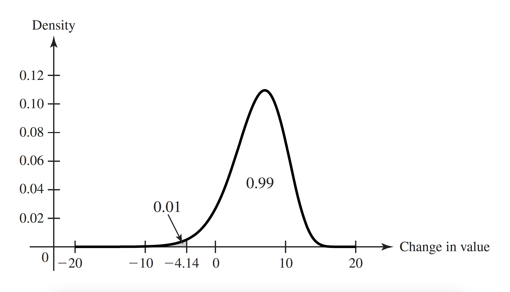
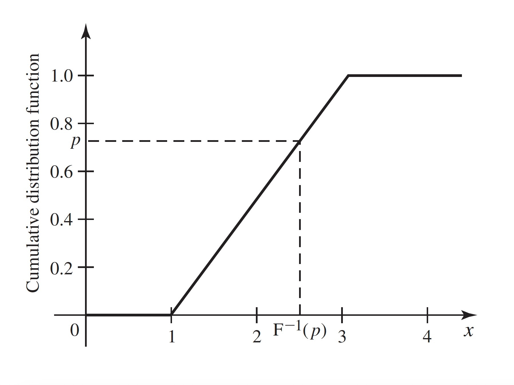
Example 3.24 (Example 3.3.8: Uniform Distribution on an Interval) Let \(X\) have the uniform distribution on the interval \([a, b]\). The CDF of \(X\) is
\[ F(x) = \Pr(X \leq x) = \begin{cases} 0 &\text{if }x \leq a, \\ \int_{a}^{x}\frac{1}{b-a}du &\text{if }a < x \leq b, \\ 1 &\text{if }x > b. \end{cases} \]
The integral above equals \((x−a)/(b−a)\). So, \(F(x) = (x−a)/(b−a)\) for all \(a < x < b\), which is a strictly increasing function over the entire interval of possible values of \(X\). The inverse of this function is the quantile function of \(X\), which we obtain by setting \(F(x)\) equal to \(p\) and solving for \(x\):
\[ \begin{align*} \frac{x - a}{b - a} &= p, \\ x - a &= p(b-a), \\ x &= a + p(b - a) = pb + (1-p)a. \end{align*} \]
Figure 3.8 illustrates how the calculation of a quantile relates to the CDF.
The quantile function of \(X\) is \(F^{−1}(p) = pb + (1 − p)a\) for \(0 < p < 1\). In particular, \(F^{-1}(1/2) = (b + a)/2\).
Note: Quantiles, Like CDFs, Depend on the Distribution Only: Any two random variables with the same distribution have the same quantile function. When we refer to a quantile of \(X\), we mean a quantile of the distribution of \(X\).
Quantiles of Discrete Distributions: It is convenient to be able to calculate quantiles for discrete distributions as well. The quantile function of Definition 3.12 exists for all distributions whether discrete, continuous, or otherwise. For example, in Figure 3.6, let \(z_0 \leq p \leq z_1\). Then the smallest \(x\) such that \(F(x) \geq p\) is \(x_1\). For every value of \(x < x_1\), we have \(F(x) < z_0 \leq p\) and \(F(x_1) = z_1\). Notice that \(F(x) = z_1\) for all \(x\) between \(x_1\) and \(x_2\), but since \(x_1\) is the smallest of all those numbers, \(x_1\) is the \(p\) quantile. Because distribution functions are continuous from the right, the smallest \(x\) such that \(F(x) \geq p\) exists for all \(0 < p < 1\). For \(p = 1\), there is no guarantee that such an \(x\) will exist. For example, in Figure 3.6, \(F(x_4) = 1\), but in Example 3.17, \(F(x) < 1\) for all \(x\). For \(p = 0\), there is never a smallest \(x\) such that \(F(x) = 0\) because \(\lim_{x \rightarrow −\infty}F(x) = 0\). That is, if \(F(x_0) = 0\), then \(F(x) = 0\) for all \(x < x_0\). For these reasons, we never talk about the 0 or 1 quantiles.
| \(p\) | \(F^{-1}(p)\) |
|---|---|
| \((0, 0.1681]\) | 0 |
| \((0.1681, 0.5283]\) | 1 |
| \((0.5283, 0.8370]\) | 2 |
| \((0.8370, 0.9693]\) | 3 |
| \((0.9693, 0.9977]\) | 4 |
| \((0.9977, 1)\) | 5 |
Example 3.25 (Example 3.3.9: Quantiles of a Binomial Distribution.) Let \(X\) have the binomial distribution with parameters 5 and 0.3. The binomial table in the back of the book has the pmf \(f\) of \(X\), which we reproduce here together with the CDF \(F\):
| \(x\) | 0 | 1 | 2 | 3 | 4 | 5 |
|---|---|---|---|---|---|---|
| \(f(x)\) | 0.1681 | 0.3602 | 0.3087 | 0.1323 | 0.0284 | 0.0024 |
| \(F(x)\) | 0.1681 | 0.5283 | 0.8370 | 0.9693 | 0.9977 | 1 |
(A little rounding error occurred in the pmf) So, for example, the 0.5 quantile of this distribution is 1, which is also the 0.25 quantile and the 0.20 quantile. The entire quantile function is in Table 3.1. So, the 90th percentile is 3, which is also the 95th percentile, etc.
Certain quantiles have special names.
Definition 3.13 (Definition 3.3.3: Median/Quartiles.) The \(1/2\) quantile or the 50th percentile of a distribution is called its median. The \(1/4\) quantile or 25th percentile is the lower quartile. The \(3/4\) quantile or 75th percentile is called the upper quartile.
Note: The Median Is Special. The median of a distribution is one of several special features that people like to use when sumarizing the distribution of a random variable. We shall discuss summaries of distributions in more detail in Chapter 4. Because the median is such a popular summary, we need to note that there are several different but similar “definitions” of median. Recall that the \(1/2\) quantile is the smallest number \(x\) such that \(F(x) \geq 1/2\). For some distributions, usually discrete distributions, there will be an interval of numbers \([x_1, x_2)\) such that for all \(x \in [x_1, x_2)\), \(F(x) = 1/2\). In such cases, it is common to refer to all such \(x\) (including \(x_2\)) as medians of the distribution. (See ?def-4-5-1.) Another popular convention is to call \((x_1 + x_2)/2\) the median. This last is probably the most common convention. The readers should be aware that, whenever they encounter a median, it might be any one of the things that we just discussed. Fortunately, they all mean nearly the same thing, namely that the number divides the distribution in half as closely as is possible.
Example 3.26 (Example 3.3.10: Uniform Distribution on Integers.) Let \(X\) have the uniform distribution on the integers 1, 2, 3, 4. (See Definition 3.6) The CDF of \(X\) is
\[ F(x) = \begin{cases} 0 &\text{if }x < 1, \\ 1/4 &\text{if }1 \leq x < 2, \\ 1/2 &\text{if }2 \leq x < 3, \\ 3/4 &\text{if }3 \leq x < 4, \\ 1 &\text{if }x \geq 4. \end{cases} \]
The \(1/2\) quantile is 2, but every number in the interval \([2, 3]\) might be called a median. The most popular choice would be 2.5.
One advantage to describing a distribution by the quantile function rather than by the CDF is that quantile functions are easier to display in tabular form for multiple distributions. The reason is that the domain of the quantile function is always the interval \((0, 1)\) no matter what the possible values of \(X\) are. Quantiles are also useful for summarizing distributions in terms of where the probability is. For example, if one wishes to say where the middle half of a distribution is, one can say that it lies between the 0.25 quantile and the 0.75 quantile. In ?sec-8-5, we shall see how to use quantiles to help provide estimates of unknown quantities after observing data.
In Exercise 3.43, you can show how to recover the CDF from the quantile function. Hence, the quantile function is an alternative way to characterize a distribution.
Summary
The CDF \(F\) of a random variable \(X\) is \(F(x) = \Pr(X \leq x)\) for all real \(x\). This function is continuous from the right. If we let \(F(x^-)\) equal the limit of \(F(y)\) as \(y\) approaches \(x\) from below, then \(F(x) − F(x^-) = Pr(X = x)\). A continuous distribution has a continuous CDF and \(F'(x) = f(x)\), the pdf of the distribution, for all \(x\) at which \(F\) is differentiable. A discrete distribution has a CDF that is constant between the possible values and jumps by \(f(x)\) at each possible value \(x\). The quantile function \(F^{-1}(p)\) is equal to the smallest \(x\) such that \(F(x) \geq p\) for \(0 < p < 1\).
Exercises
Exercise 3.25 (Exercise 3.3.1) Suppose that a random variable \(X\) has the Bernoulli distribution with parameter \(p = 0.7\). (See Definition 3.5) Sketch the CDF of \(X\).
Exercise 3.26 (Exercise 3.3.2) Suppose that a random variable \(X\) can take only the values \(−2\), \(0\), \(1\), and \(4\), and that the probabilities of these values are as follows: \(\Pr(X = −2) = 0.4\), \(\Pr(X = 0) = 0.1\), \(Pr(X = 1) = 0.3\), and \(\Pr(X = 4) = 0.2\). Sketch the CDF of \(X\).
Exercise 3.27 (Exercise 3.3.3) Suppose that a coin is tossed repeatedly until a head is obtained for the first time, and let \(X\) denote the number of tosses that are required. Sketch the CDF of \(X\).
Exercise 3.28 (Exercise 3.3.4) Suppose that the CDF \(F\) of a random variable \(X\) is as sketched in Figure 3.9. Find each of the following probabilities:
- \(\Pr(X = −1)\)
- \(\Pr(X < 0)\)
- \(\Pr(X \leq 0)\)
- \(\Pr(X = 1)\)
- \(\Pr(0 < X \leq 3)\)
- \(\Pr(0 < X < 3)\)
- \(\Pr(0 \leq X \leq 3)\)
- \(\Pr(1 < X \leq 2)\)
- \(\Pr(1 \leq X \leq 2)\)
- \(\Pr(X > 5)\)
- \(Pr(X \geq 5)\)
- \(\Pr(3 \leq X \leq 4)\)
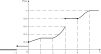
Exercise 3.29 (Exercise 3.3.5) Suppose that the CDF of a random variable \(X\) is as follows:
\[ F(x) = \begin{cases} 0 &\text{for }x \leq 0, \\ \frac{1}{9}x^2 &\text{for }0 < x \leq 3, \\ 1 &\text{for }x > 3. \end{cases} \]
Find and sketch the pdf of \(X\).
Exercise 3.30 (Exercise 3.3.6) Suppose that the CDF of a random variable \(X\) is as follows:
\[ F(x) = \begin{cases} e^{x - 3} &\text{for }x \leq 3, \\ 1 &\text{for }x > 3. \end{cases} \]
Find and sketch the pdf of \(X\).
Exercise 3.31 (Exercise 3.3.7) Suppose, as in Exercise 3.18, that a random variable \(X\) has the uniform distribution on the interval \([−2, 8]\). Find and sketch the CDF of \(X\).
Exercise 3.32 (Exercise 3.3.8) Suppose that a point in the \(xy\)-plane is chosen at random from the interior of a circle for which the equation is \(x^2 + y^2 = 1\); and suppose that the probability that the point will belong to each region inside the circle is proportional to the area of that region. Let \(Z\) denote a random variable representing the distance from the center of the circle to the point. Find and sketch the CDF of \(Z\).
Exercise 3.33 (Exercise 3.3.9) Suppose that \(X\) has the uniform distribution on the interval \([0, 5]\) and that the random variable \(Y\) is defined by \(Y = 0\) if \(X \leq 1\), \(Y = 5\) if \(X \geq 3\), and \(Y = X\) otherwise. Sketch the CDF of \(Y\).
Exercise 3.34 (Exercise 3.3.10) For the CDF in Example 3.20, find the quantile function.
Exercise 3.35 (Exercise 3.3.11) For the CDF in Exercise 3.29, find the quantile function.
Exercise 3.36 (Exercise 3.3.12) For the CDF in Exercise 3.30, find the quantile function.
Exercise 3.37 (Exercise 3.3.13) Suppose that a broker believes that the change in value \(X\) of a particular investment over the next two months has the uniform distribution on the interval \([−12,24]\). Find the value at risk VaR for two months at probability level 0.95.
Exercise 3.38 (Exercise 3.3.14) Find the quartiles and the median of the binomial distribution with parameters \(n = 10\) and \(p = 0.2\).
Exercise 3.39 (Exercise 3.3.15) Suppose that \(X\) has the pdf
\[ f(x) = \begin{cases} 2x &\text{if }0 < x < 1, \\ 0 &\text{otherwise.} \end{cases} \]
Find and sketch the CDF of \(X\).
Exercise 3.40 (Exercise 3.3.16) Find the quantile function for the distribution in Example 3.17.
Exercise 3.41 (Exercise 3.3.17) Prove that the quantile function F^{-1} of a general random variable \(X\) has the following three properties that are analogous to properties of the CDF:
- \(F^{-1}\) is a nondecreasing function of \(p\) for \(0 < p < 1\).
- Let \(x_0 = \lim_{p \rightarrow 0,~p > 0}F^{-1}(p)\) and \(x_1 = \lim_{p \rightarrow 1,~p < 1}F^{-1}(p)\). Then \(x_0\) equals the greatest lower bound on the set of numbers \(c\) such that \(\Pr(X \leq c) > 0\), and \(x_1\) equals the least upper bound on the set of numbers \(d\) such that \(\Pr(X \geq d) > 0\).
- \(F^{−1}\) is continuous from the left; that is \(F^{-1}(p) = F^{-1}(p^-)\) for all \(0 < p < 1\).
Exercise 3.42 (Exercise 3.3.18) Let \(X\) be a random variable with quantile function \(F^{-1}\). Assume the following three conditions: (i) \(F^{-1}(p) = c\) for all \(p\) in the interval \((p_0, p_1)\), (ii) either \(p_0 = 0\) or \(F^{-1}(p_0) < c\), and (iii) either \(p_1 = 1\) or \(F^{-1}(p) > c\) for \(p > p_1\). Prove that \(\Pr(X = c) = p_1 − p_0\).
Exercise 3.43 (Exercise 3.3.19) Let \(X\) be a random variable with CDF \(F\) and quantile function \(F^{-1}\). Let \(x_0\) and \(x_1\) be as defined in Exercise 3.41. (Note that $x_0 = -and/or \(x_1 = \infty\) are possible.) Prove that for all \(x\) in the open interval \((x_0, x_1)\), \(F(x)\) is the largest \(p\) such that \(F^{−1}(p) \leq x\).
Exercise 3.44 (Exercise 3.3.20) In Exercise 3.24, draw a sketch of the CDF \(F\) of \(X\) and find \(F(10)\).
3.4 Bivariate Distributions
We generalize the concept of distribution of a random variable to the joint distribution of two random variables. In doing so, we introduce the joint pmf for two discrete random variables, the joint pdf for two continuous random variables, and the joint CDF for any two random variables. We also introduce a joint hybrid of pmf and pdf for the case of one discrete random variable and one continuous random variable.
Example 3.27 (Example 3.4.1: Demands for Utilities (DeGroot and Schervish, p. 118)) In Example 3.5, we found the distribution of the random variable \(X\) that represented the demand for water. But there is another random variable, \(Y\), the demand for electricity, that is also of interest. When discussing two random variables at once, it is often convenient to put them together into an ordered pair, \((X, Y)\). As early as Example 1.9, we actually calculated some probabilities associated with the pair \((X, Y)\). In that example, we defined two events \(A\) and \(B\) that we now can express as \(A = \{X \geq 115\}\) and \(B = \{Y \geq 110\}\). In Example 1.9, we computed \(\Pr(A \cap B)\) and \(\Pr(A \cup B)\). We can express \(A \cap B\) and \(A \cup B\) as events involving the pair \((X, Y)\). For example, define the set of ordered pairs \(C = \{(x, y) \mid x \geq 115\text{ and }y \geq 110\}\) so that that the event \(\{(X, Y) \in C\} = A \cap B\). That is, the event that the pair of random variables lies in the set \(C\) is the same as the intersection of the two events \(A\) and \(B\). In Example 1.9, we computed \(\Pr(A \cap B) = 0.1198\). So, we can now assert that \(\Pr((X, Y) \in C) = 0.1198\).
Definition 3.14 (Definition 3.4.1: Joint/Bivariate Distribution (DeGroot and Schervish, p. 118)) Let \(X\) and \(Y\) be random variables. The joint distribution or bivariate distribution of \(X\) and \(Y\) is the collection of all probabilities of the form \(\Pr\left( (X, Y) \in C\right)\) for all sets \(C\) of pairs of real numbers such that \(\{ (X, Y) \in C\}\) is an event.
It is a straightforward consequence of the definition of the joint distribution of \(X\) and \(Y\) that this joint distribution is itself a probability measure on the set of ordered pairs of real numbers. The set \(\{ (X, Y) \in C\}\) will be an event for every set \(C\) of pairs of real numbers that most readers will be able to imagine.
In this section and the next two sections, we shall discuss convenient ways to characterize and do computations with bivariate distributions. In Section 3.7, these considerations will be extended to the joint distribution of an arbitrary finite number of random variables.
Discrete Joint Distributions
Example 3.28 (Example 3.4.2: Theater Patrons) Suppose that a sample of 10 people is selected at random from a theater with 200 patrons. One random variable of interest might be the number \(X\) of people in the sample who are over 60 years of age, and another random variable might be the number \(Y\) of people in the sample who live more than 25 miles from the theater. For each ordered pair \((x, y)\) with \(x = 0, \ldots, 10\) and \(y = 0, \ldots, 10\), we might wish to compute \(\Pr( (X, Y) = (x, y))\), the probability that there are \(x\) people in the sample who are over 60 years of age and there are \(y\) people in the sample who live more than 25 miles away.
The two random variables in Example 3.28 have a discrete joint distribution.
Theorem 3.10 (Theorem 3.4.1) Suppose that two random variables \(X\) and \(Y\) each have a discrete distribution. Then \(X\) and \(Y\) have a discrete joint distribution.
Proof. If both \(X\) and \(Y\) have only finitely many possible values, then there will be only a finite number of different possible values \((x, y)\) for the pair \((X, Y)\). On the other hand, if either \(X\) or \(Y\) or both can take a countably infinite number of possible values, then there will also be a countably infinite number of possible values for the pair \((X, Y)\). In all of these cases, the pair \((X, Y)\) has a discrete joint distribution.
When we define continuous joint distribution shortly, we shall see that the obvious analog of Theorem 3.10 is not true.
Definition 3.16 (Definition 3.4.3: Joint Probability Mass Function (pmf)) The joint probability mass function, or the joint pmf, of \(X\) and \(Y\) is defined as the function \(f\) such that for every point \((x, y)\) in the \(xy\)-plane,
\[ f(x, y) = \Pr(X = x\text{ and }Y = y). \]
The following result is easy to prove because there are at most countably many pairs \((x, y)\) that must account for all of the probability a discrete joint distribution.
Theorem 3.11 (Theorem 3.4.2) Let \(X\) and \(Y\) have a discrete joint distribution, and let \(\mathcal{R}_{(X,Y)} = \mathcal{R}_X \times \mathcal{R}_Y\), that is, all possible ordered pairs of values where the first element in the pair is in \(\mathcal{R}_X\) and the second element in the pair is in \(\mathcal{R}_Y\).
If \((x, y)\) is not one of the possible values of the pair \((X, Y)\), then \(f(x, y) = 0\). Also,
\[ \sum_{(x,y) \in \mathcal{R}_{(X,Y)}}f(x,y) = 1. \]
Finally, for each set \(C\) of ordered pairs,
\[ \Pr\left( (X,Y) \in C \right) = \sum_{(x,y) \in C}f(x,y). \]
Example 3.29 (Example 3.4.3: Specifying a Discrete Joint Distribution by a Table of Probabilities) In a certain suburban area, each household reported the number of cars and the number of television sets that they owned. Let \(X\) stand for the number of cars owned by a randomly selected household in this area. Let \(Y\) stand for the number of television sets owned by that same randomly selected household. In this case, \(X\) takes only the values 1, 2, and 3; \(Y\) takes only the values 1, 2, 3, and 4; and the joint pmf \(f\) of \(X\) and \(Y\) is as specified in Table 3.2
| 1 | 2 | 3 | 4 | |
|---|---|---|---|---|
| 1 | 0.1 | 0.0 | 0.1 | 0.0 |
| 2 | 0.3 | 0.0 | 0.1 | 0.2 |
| 3 | 0.0 | 0.2 | 0.0 | 0.0 |
This joint pmf is sketched in Figure 3.10. We shall determine the probability that the randomly selected household owns at least two of both cars and televisions. In symbols, this is \(\Pr(X \geq 2\text{ and }Y \geq 2)\).
By summing \(f(x, y)\) over all values of \(x \geq 2\) and \(y \geq 2\), we obtain the value
\[ \begin{align*} Pr(X \geq 2\text{ and }Y \geq 2) &= f(2, 2) + f (2, 3) + f (2, 4) + f (3, 2) \\ &\phantom{=} + f(3, 3) + f (3, 4) \\ &= 0.5. \end{align*} \]
Next, we shall determine the probability that the randomly selected household owns exactly one car, namely \(\Pr(X = 1)\). By summing the probabilities in the first row of the table, we obtain the value
\[ \Pr(X = 1) = \sum_{y = 1}^{4}f(1,y) = 0.2. \]
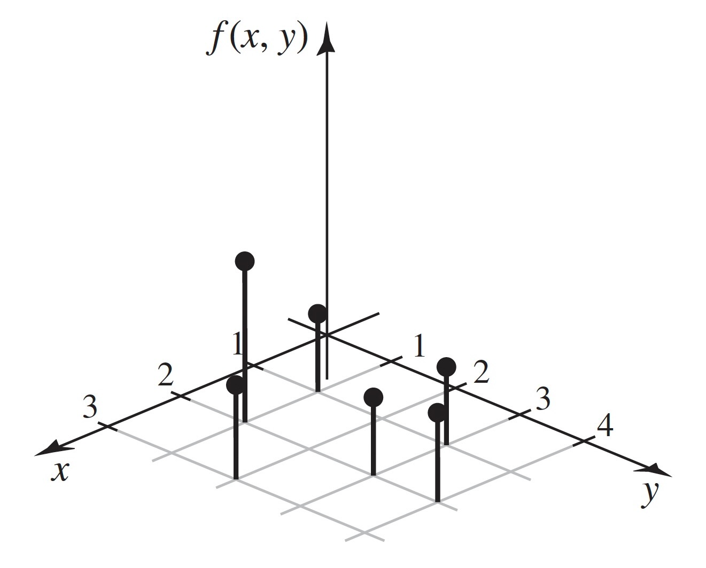
Continuous Joint Distributions
Example 3.30 (Example 3.4.4: Demands for Utilities) Consider again the joint distribution of \(X\) and \(Y\) in Example 3.27. When we first calculated probabilities for these two random variables back in Example 1.9 (even before we named them or called them random variables), we assumed that the probability of each subset of the sample space was proportional to the area of the subset. Since the area of the sample space is 29,204, the probability that the pair \((X, Y)\) lies in a region \(C\) is the area of \(C\) divided by 29,204. We can also write this relation as
\[ \Pr((X,Y) \in C) = \int_C\int \frac{1}{29204}~dx~dy, \tag{3.21}\]
assuming that the integral exists.
If one looks carefully at Equation 3.21, one will notice the similarity to Equation 3.6 and Equation 3.5. We formalize this connection as follows.
Definition 3.17 (Definition 3.4.4: Continuous Joint Distribution (DeGroot and Schervish)) Two random variables \(X\) and \(Y\) have a continuous joint distribution if there exists a nonnegative function \(f\) defined over the entire \(xy\)-plane such that for every subset \(C\) of the plane,
\[ \Pr\left[(X,Y) \in C\right] = \int_C\int f(x,y)~dx~dy. \]
Example 3.31 (Example 3.4.5: Demands for Utilities.) In Example 3.30, it is clear from Equation 3.21 that the joint pdf of \(X\) and \(Y\) is the function
\[ f(x,y) = \begin{cases} \frac{1}{29204} &\text{for }4 \leq x \leq 200 \text{ and }1 \leq y \leq 150, \\ 0 &\text{otherwise.} \end{cases} \]
It is clear from Definition 3.18 that the joint pdf of two random variables characterizes their joint distribution. The following result is also straightforward.
Theorem 3.12 (Theorem 3.4.3 (DeGroot and Schervish)) A joint PDF must satisfy the following two conditions:
\[ f(x,y) \geq 0\text{ for }-\infty < x < \infty\text{ and }-\infty < y < \infty, \]
and
\[ \int_{-\infty}^{\infty}\int_{-\infty}^{\infty}f(x,y)\, dx \, dy = 1. \]
Any function that satisfies the two displayed formulas in Theorem 3.12 is the joint pdf for some probability distribution.
An example of the graph of a joint pdf is presented in Figure 3.11.
The total volume beneath the surface \(z = f(x, y)\) and above the \(xy\)-plane must be 1. The probability that the pair \((X, Y)\) will belong to the rectangle \(C\) is equal to the volume of the solid figure with base \(A\) shown in Figure 3.11. The top of this solid figure is formed by the surface \(z = f(x, y)\).
In Section 3.5, we will show that if \(X\) and \(Y\) have a continuous joint distribution, then \(X\) and \(Y\) each have a continuous distribution when considered separately. This seems reasonable intutively. However, the converse of this statement is not true, and the following result helps to show why.
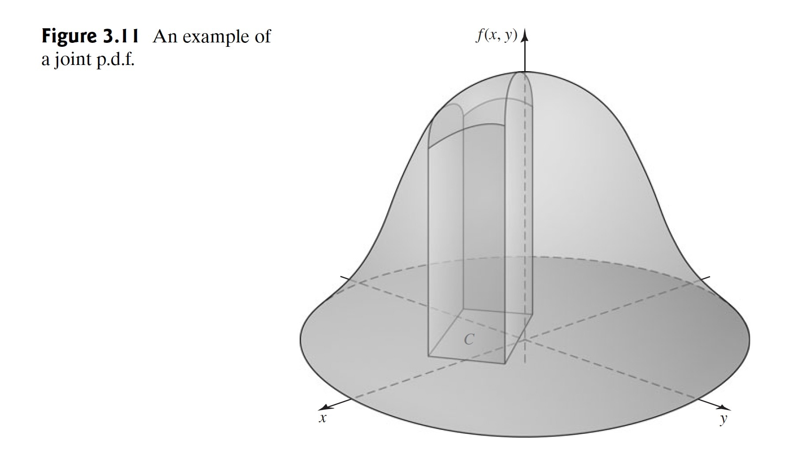
Theorem 3.13 (Theorem 3.4.4) For every continuous joint distribution on the \(xy\)-plane, the following two statements hold:
- Every individual point, and every infinite sequence of points, in the \(xy\)-plane has probability 0.
- Let \(f\) be a continuous function of one real variable defined on a (possibly unbounded) interval \((a, b)\). The sets \(\{(x, y) \mid y = f(x), a < x < b\}\) and \(\{(x, y) \mid x = f(y), a < y < b\}\) have probability 0.
Proof. According to Definition 3.18, the probability that a continuous joint distribution assigns to a specified region of the \(xy\)-plane can be found by integrating the joint pdf \(f(x, y)\) over that region, if the integral exists. If the region is a single point, the integral will be 0. By Axiom 3 of probability, the probability for any countable collection of points must also be 0. The integral of a function of two variables over the graph of a continuous function in the \(xy\)-plane is also 0.
Example 3.32 (Example 3.4.6: Not a Continuous Joint Distribution) It follows from (ii) of Theorem 3.13 that the probability that \((X, Y)\) will lie on each specified straight line in the plane is 0. If \(X\) has a continuous distribution and if \(Y = X\), then both \(X\) and \(Y\) have continuous distributions, but the probability is 1 that \((X, Y)\) lies on the straight line \(y = x\). Hence, \(X\) and \(Y\) cannot have a continuous joint distribution.
Example 3.33 (Example 3.4.7: Calculating a Normalizing Constant) Suppose that the joint pdf of \(X\) and \(Y\) is specified as follows:
\[ f(x, y) = \begin{cases} cx^2y &\text{for }x^2 \leq y \leq 1, \\ 0 &\text{otherwise.} \end{cases} \]
We shall determine the value of the constant \(c\).
The support \(S\) of \((X, Y)\) is sketched in Figure 3.12. Since \(f(x, y) = 0\) outside \(S\), it follows that
\[ \begin{align*} \int_{-\infty}^{\infty}\int_{-\infty}^{\infty}f(x, y) dx dy &= \int_{S}\int f(x, y) dx \, dy \\ &= \int_{-1}^{1}\int_{x^2}^{1}cx^2y dy dx = \frac{4}{21}c. \end{align*} \tag{3.22}\]
Since the value of this integral must be 1, the value of \(c\) must be \(21/4\).
The limits of integration on the last integral in #eq-3-4-3 were determined as follows. We have our choice of whether to integrate \(x\) or \(y\) as the inner integral, and we chose \(y\). So, we must find, for each \(x\), the interval of \(y\) values over which to integrate. From Figure 3.12, we see that, for each \(x\), \(y\) runs from the curve where \(y = x^2\) to the line where \(y = 1\). The interval of \(x\) values for the outer integral is from \(−1\) to \(1\) according to Figure 3.12. If we had chosen to integrate \(x\) on the inside, then for each \(y\), we see that \(x\) runs from \(-\sqrt{y}\) to \(\sqrt{y}\), while \(y\) runs from 0 to 1. The final answer would have been the same.
Example 3.34 (Example 3.4.8: Calculating Probabilities from a Joint pdf) For the joint distribution in Example 3.33, we shall now determine the value of \(\Pr(X \geq Y)\).
The subset \(S_0\) of \(S\) where \(x \geq y\) is sketched in Figure 3.13. Hence,
\[ \Pr(X \geq Y) = \int_{S_0}\int f(x, y) \, dx \, dy = \int_{0}^{1}\int_{x^2}^{x}\frac{21}{4}x^2y \, dy \, dx = \frac{3}{20}. \]
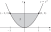
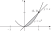
Example 3.35 (Example 3.4.9: Determining a Joint pdf by Geometric Methods.) Suppose that a point \((X, Y)\) is selected at random from inside the circle \(x^2 + y^2 \leq 9\). We shall determine the joint pdf of \(X\) and \(Y\).
The support of \((X, Y)\) is the set \(S\) of points on and inside the circle \(x^2 + y^2 \leq 9\). The statement that the point \((X, Y)\) is selected at random from inside the circle is interpreted to mean that the joint pdf of \(X\) and \(Y\) is constant over \(S\) and is 0 outside \(S\). Thus,
\[ f(x, y) = \begin{cases} c &\text{for }(x, y) \in S, \\ 0 &\text{otherwise.} \end{cases} \]
We must have
\[ \int_{S}\int f(x, y) \, dx \, dy = c \times \text{(area of }S\text{)} = 1. \]
Since the area of the circle \(S\) is \(9\pi\), the value of the constant \(c\) must be \(1/(9\pi)\).
Mixed Bivariate Distributions
Example 3.36 (Example 3.4.10: A Clinical Trial) Consider a clinical trial (such as the one described in Example 2.12) in which each patient with depression receives a treatment and is followed to see whether they have a relapse into depression. Let \(X\) be the indicator of whether or not the first patient is a “success” (no relapse). That is \(X = 1\) if the patient does not relapse and \(X = 0\) if the patient relapses. Also, let \(P\) be the proportion of patients who have no replapse among all patients who might receive the treatment. It is clear that \(X\) must have a discrete distribution, but it might be sensible to think of \(P\) as a continuous random variable taking its value anywhere in the interval \([0, 1]\). Even though \(X\) and \(P\) can have neither a joint discrete distribution nor a joint continuous distribution, we can still be interested in the joint distribution of \(X\) and \(P\).
Prior to Example 3.36, we have discussed bivariate distributions that were either discrete or continuous. Occasionally, one must consider a mixed bivariate distribution in which one of the random variables is discrete and the other is continuous. We shall use a function \(f(x, y)\) to characterize such a joint distribution in much the same way that we use a joint pmf to characterize a discrete joint distribution or a joint pdf to characterize a continuous joint distribution.
Definition 3.19 (Definition 3.4.5: Joint pmf/pdf) Let \(X\) and \(Y\) be random variables such that \(X\) is discrete and \(Y\) is continuous. Suppose that there is a function \(f(x, y)\) defined on the \(xy\)-plane such that, for every pair \(A\) and \(B\) of subsets of the real numbers,
\[ \Pr(X \in A \text{ and } Y \in B) = \int_{B}\sum_{x \in A}f(x,y) \, dy, \tag{3.23}\]
if the integral exists. Then the function \(f\) is called the joint pmf/pdf of \(X\) and \(Y\).
Clearly, Definition 3.19 can be modified in an obvious way if \(Y\) is discrete and \(X\) is continuous. Every joint pmf/pdf must satisfy two conditions. If \(X\) is the discrete random variable with possible values \(x_1, x_2, \ldots\) and \(Y\) is the continuous random variable, then \(f(x, y) \geq 0\) for all \(x\), \(y\) and
\[ \int_{-\infty}^{\infty}\sum_{i=1}^{\infty} f(x_i, y) \, dy = 1. \tag{3.24}\]
Because \(f\) is nonnegative, the sum and integral in Eqs. 3.23 and 3.24 can be done in whichever order is more convenient.
Note: Probabilities of More General Sets. For a general set \(C\) of pairs of real numbers, we can compute \(\Pr((X, Y) \in C)\) using the joint pmf/pdf of \(X\) and \(Y\). For each \(x\), let \(C_x = \{y \mid (x, y) \in C\}\). Then
\[ \Pr((X, Y) \in C) = \sum_{\text{All }x}\int_{C_x}f(x, y)\, dy, \]
if all of the integrals exist. Alternatively, for each \(y\), define \(C^y = \{x \mid (x, y) \in C\}\), and then
\[ \Pr((X, Y) \in C) = \int_{-\infty}^{\infty}\left[ \sum_{x \in C^y}f(x, y) \right]dy, \]
if the integral exists.
Example 3.37 (Example 3.4.11: A Joint pmf/pdf) Suppose that the joint pmf/pdf of \(X\) and \(Y\) is
\[ f(x, y) = \frac{xy^{x-1}}{3}, \; \text{ for }x = 1, 2, 3\text{ and }0 < y < 1. \]
We should check to make sure that this function satisfies Equation 3.24. It is easier to integrate over the \(y\) values first, so we compute
\[ \sum_{x=1}^{3}\int_{0}^{1}\frac{xy^{x-1}}{3} \, dy = \sum_{x=1}^{3}\frac{1}{3} = 1. \]
Suppose that we wish to compute the probability that \(Y \geq 1/2\) and \(X \geq 2\). That is, we want \(\Pr(X \in A \text{ and } Y \in B)\) with \(A = [2, \infty)\) and \(B = [1/2, \infty)\). So, we apply Equation 3.23 to get the probability
\[ \sum_{x=2}^{3}\int_{1/2}^{1}\frac{xy^{x-1}}{3} \, dy = \sum_{x=2}^{3}\left(\frac{1 - (1/2)^x}{3}\right) = 0.5417. \]
For illustration, we shall compute the sum and integral in the other order also. For each \(y \in [1/2, 1)\), \(\sum_{x=2}^{3}f(x,y) = 2y/3 + y^2\). For \(y \geq 1/2\), the sum is 0. So, the probability is
\[ \int_{1/2}^{1}\left[\frac{2}{3}y + y^2\right]dy = \frac{1}{3}\left[1 - \left(\frac{1}{2}\right)^2\right] + \frac{1}{3}\left[1 - \left(\frac{1}{2}\right)^3\right] = 0.5417. \]
Example 3.38 (Example 3.4.12: A Clinical Trial.) A possible joint pmf/pdf for \(X\) and \(P\) in Example 3.36 is
\[ f(x, p) = p^x(1-p)^{1-x}, \; \text{ for }x = 0, 1\text{ and }0 < p < 1. \]
Here, \(X\) is discrete and \(P\) is continuous. The function \(f\) is nonnegative, and the reader should be able to demonstrate that it satisfies Equation 3.24. Suppose that we wish to compute \(\Pr(X \leq 0 \text{ and } P \leq 1/2)\). This can be computed as
\[ \int_{0}^{1/2}(1 - p) \, dp = -\frac{1}{2}\left[ (1 - 1/2)^2 - (1 - 0)^2 \right] = \frac{3}{8}. \]
Suppose that we also wish to compute \(\Pr(X = 1)\). This time, we apply Equation 3.23 with \(A = \{1\}\) and \(B = (0, 1)\). In this case,
\[ \Pr(X = 1) = \int_{0}^{1}p \, dp = \frac{1}{2}. \]
A more complicated type of joint distribution can also arise in a practical problem.
Example 3.39 (Example 3.4.13: A Complicated Joint Distribution) Suppose that \(X\) and \(Y\) are the times at which two specific components in an electronic system fail. There might be a certain probability \(p\) (\(0 < p < 1\)) that the two components will fail at the same time and a certain probability \(1 − p\) that they will fail at different times. Furthermore, if they fail at the same time, then their common failure time might be distributed according to a certain pdf \(f(x)\); if they fail at different times, then these times might be distributed according to a certain joint pdf \(g(x, y)\).
The joint distribution of \(X\) and \(Y\) in this example is not continuous, because there is positive probability \(p\) that \((X, Y)\) will lie on the line \(x = y\). Nor does the joint distribution have a joint pmf/pdf or any other simple function to describe it. There are ways to deal with such joint distributions, but we shall not discuss them in this text.
Bivariate Cumulative Distribution Functions
The first calculation in Example 3.38, namely, \(\Pr(X \leq 0 \text{ and } Y \leq 1/2)\), is a generalization of the calculation of a CDF to a bivariate distribution. We formalize the generalization as follows.
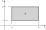
Definition 3.20 (Definition 3.4.6: Joint (Cumulative) Distribution Function/CDF) The joint Cumulative Distribution Function (joint CDF) of two random variables \(X\) and \(Y\) is defined as the function \(F\) such that for all values of \(x\) and \(y\) (\(-\infty < x < \infty\) and \(-\infty < y < \infty\)),
\[ F(x, y) = \Pr(X \leq x \text{ and }Y \leq y). \]
It is clear from Definition 3.20 that \(F(x, y)\) is monotone increasing in \(x\) for each fixed \(y\) and is monotone increasing in \(y\) for each fixed \(x\).
If the joint CDF of two arbitrary random variables \(X\) and \(Y\) is \(F\), then the probability that the pair \((X, Y)\) will lie in a specified rectangle in the \(xy\)-plane can be found from \(F\) as follows: For given numbers \(a < b\) and \(c < d\),
\[ \begin{align*} \Pr&(a < X \leq b \text{ and }c < Y \leq d) \\ &= \Pr(a < X \leq b \text{ and }Y \leq d) - \Pr(a < X \leq b \text{ and }Y \leq c) \\ &= \left[\Pr(X \leq b \text{ and } Y \leq d) - \Pr(X \leq a \text{ and }Y \leq d)\right] \\ &\phantom{\Pr} - \left[\Pr(X \leq b \text{ and }Y \leq c) - \Pr(X \leq a \text{ and }Y \leq c)\right] \\ &= F(b, d) - F(a, d) - F(b, c) + F(a, c). \end{align*} \]
Hence, the probability of the rectangle \(C\) sketched in Figure 3.14 is given by the combination of values of \(F\) just derived. It should be noted that two sides of the rectangle are included in the set \(C\) and the other two sides are excluded. Thus, if there are points or line segments on the boundary of \(C\) that have positive probability, it is important to distinguish between the weak inequalities and the strict inequalities in ?eq-3-4-6.
Theorem 3.14 (Theorem 3.4.5) Let \(X\) and \(Y\) have a joint CDF \(F\). The CDF \(F_1\) of just the single random variable \(X\) can be derived from the joint CDF \(F\) as \(F_1(x) = \lim_{y \rightarrow \infty} F(x, y)\). Similarly, the CDF \(F_2\) of \(Y\) equals \(F_2(y) = \lim_{x \rightarrow \infty} F(x, y)\), for \(0 < y < \infty\).
Proof. We prove the claim about \(F_1\) as the claim about \(F_2\) is similar. Let \(-\infty < x < \infty\). Define
\[ \begin{align*} B_0 &= \{ X \leq x \text{ and } Y \leq 0 \}, \\ B_n &= \{ X \leq x \text{ and } n-1 < Y \leq n \}, \; \text{ for }n = 1, 2, \ldots, \\ A_m &= \bigcup_{n=0}^{m}B_n, \; \text{ for }m = 1, 2, \ldots. \end{align*} \]
Then \(\{X \leq x\} = \bigcup_{n=0}^{\infty}B_n\), and \(A_m = \{X \leq x \text{ and }Y \leq m\}\) for \(m = 1, 2, \ldots\). It follows that \(\Pr(A_m) = F(x, m)\) for each \(m\). Also,
\[ \begin{align*} F_1(x) &= \Pr(X \leq x) = \Pr\left( \bigcup_{n=1}^{\infty}B_n \right) \\ &= \sum_{n=0}^{\infty}\Pr(B_n) = \lim_{m \rightarrow \infty} \Pr(A_m) \\ &= \lim_{m \rightarrow \infty}F(x, m) = \lim_{y \rightarrow \infty}F(x, y), \end{align*} \]
where the third equality follows from countable additivity and the fact that the \(B_n\) events are disjoint, and the last equality follows from the fact that \(F(x, y)\) is monotone increasing in \(y\) for each fixed \(x\).
Other relationships involving the univariate distribution of \(X\), the univariate distribution of \(Y\), and their joint bivariate distribution will be presented in the next section.
Finally, if \(X\) and \(Y\) have a continuous joint distribution with joint pdf \(f\), then the joint CDF at \((x, y)\) is
\[ F(x, y) = \int_{-\infty}^{y}\int_{-\infty}^{x}f(r, s)\, dr \, ds. \]
Here, the symbols \(r\) and \(s\) are used simply as dummy variables of integration. The joint pdf can be derived from the joint CDF by using the relations
\[ f(x, y) = \frac{\partial^2 F(x, y)}{\partial x \partial y} = \frac{\partial^2F(x,y)}{\partial y \partial x} \]
at every point \((x, y)\) at which these second-order derivatives exist.
Example 3.40 (Example 3.4.14: Determining a Joint pdf from a Joint CDF) Suppose that \(X\) and \(Y\) are random variables that take values only in the intervals \(0 \leq X \leq 2\) and \(0 \leq Y \leq 2\). Suppose also that the joint CDF of \(X\) and \(Y\), for \(0 \leq x \leq 2\) and \(0 \leq y \leq 2\), is as follows:
\[ F(x, y) = \frac{1}{16}xy(x + y). \tag{3.25}\]
We shall first determine the CDF \(F_1\) of just the random variable \(X\) and then determine the joint pdf \(f\) of \(X\) and \(Y\).
The value of \(F(x, y)\) at any point \((x, y)\) in the \(xy\)-plane that does not represent a pair of possible values of \(X\) and \(Y\) can be calculated from Equation 3.25 and the fact that \(F(x, y) = \Pr(X \leq x \text{ and } Y \leq y)\). Thus, if either \(x < 0\) or \(y < 0\), then \(F(x, y) = 0\). If both \(x > 2\) and \(y > 2\), then \(F(x, y) = 1\). If \(0 \leq x \leq 2\) and \(y > 2\), then \(F(x, y) = F(x, 2)\), and it follows from Equation 3.25 that
\[ F(x, y) = \frac{1}{8}x(x + 2). \]
Similarly, if \(0 \leq y \leq 2\) and \(x > 2\), then
\[ F(x, y) = \frac{1}{8}y(y + 2). \]
The function \(F(x, y)\) has now been specified for every point in the xy-plane.
By letting \(y \rightarrow \infty\), we find that the CDF of just the random variable \(X\) is
\[ F_1(x) = \begin{cases} 0 &\text{for }x < 0, \\ \frac{1}{8}x(x + 2) &\text{for }0 \leq x \leq 2, \\ 1 &\text{for }x > 2. \end{cases} \]
Furthermore, for \(0 < x < 2\) and \(0 < y < 2\),
\[ \frac{\partial^2 F(x, y)}{\partial x \partial y} = \frac{1}{8}(x + y). \]
Also, if \(x < 0\), \(y < 0\), \(x > 2\), or \(y > 2\), then
\[ \frac{\partial^2 F(x, y)}{\partial x \partial y} = 0. \]
Hence, the joint pdf of \(X\) and \(Y\) is
\[ f(x, y) = \begin{cases} \frac{1}{8}(x + y) &\text{for }0 < x < 2 \text{ and }0 < y < 2, \\ 0 &\text{otherwise.} \end{cases} \]
Example 3.41 (Example 3.4.15: Demands for Utilities) We can compute the joint CDF for water and electric demand in Example 3.30 by using the joint pdf that was given in ?eq-3-4-2. If either \(x \leq 4\) or \(y \leq 1\), then \(F(x, y) = 0\) because either \(X \leq x\) or \(Y \leq y\) would be impossible. Similarly, if both \(x \geq 200\) and \(y \geq 150\), \(F(x, y) = 1\) because both \(X \leq x\) and \(Y \leq y\) would be sure events. For other values of \(x\) and \(y\), we compute
\[ F(x, y) = \begin{cases} \int_{4}^{x}\int_{1}^{y}\frac{1}{29204}\, dy \, dx = \frac{xy}{29204} &\text{for }4 \leq x \leq 200, 1 \leq y \leq 150, \\ \int_{4}^{x}\int_{1}^{150}\frac{1}{29204}\, dy \, dx = \frac{x}{196} &\text{for }4 \leq x \leq 200, y > 150, \\ \int_{4}^{200}\int_{1}^{y}\frac{1}{29204}\, dy \, dx = \frac{y}{149} &\text{for }x > 200, 1 \leq y \leq 150. \end{cases} \]
The reason that we need three cases in the formula for \(F(x, y)\) is that the joint pdf in ?eq-3-4-2 drops to 0 when \(x\) crosses above 200 or when \(y\) crosses above 150; hence, we never want to integrate \(1/29204\) beyond \(x = 200\) or beyond \(y = 150\). If one takes the limit as \(y \rightarrow \infty\) of \(F(x, y)\) (for fixed \(4 \leq x \leq 200\)), one gets the second case in the formula above, which then is the CDF of \(X\), \(F_1(x)\). Similarly, if one takes the \(\lim_{x \rightarrow \infty} F(x, y)\) (for fixed \(1 \leq y \leq 150\)), one gets the third case in the formula, which then is the CDF of \(Y\), \(F_2(y)\).
Summary
The joint CDF of two random variables \(X\) and \(Y\) is \(F(x, y) = \Pr(X \leq x \text{ and } Y \leq y)\). The joint pdf of two continuous random variables is a nonnegative function \(f\) such that the probability of the pair \((X, Y)\) being in a set \(C\) is the integral of \(f(x, y)\) over the set \(C\), if the integral exists. The joint pdf is also the second mixed partial derivative of the joint CDF with respect to both variables. The joint pmf of two discrete random variables is a nonnegative function \(f\) such that the probability of the pair \((X, Y)\) being in a set \(C\) is the sum of \(f(x, y)\) over all points in \(C\). A joint pmf can be strictly positive at countably many pairs \((x, y)\) at most. The joint pmf/pdf of a discrete random variable \(X\) and a continuous random variable \(Y\) is a nonnegative function \(f\) such that the probability of the pair \((X, Y)\) being in a set \(C\) is obtained by summing \(f(x, y)\) over all \(x\) such that \((x, y) \in C\) for each \(y\) and then integrating the resulting function of \(y\).
Exercises
Exercise 3.45 (Exercise 3.4.1) Suppose that the joint pdf of a pair of random variables \((X, Y)\) is constant on the rectangle where \(0 \leq x \leq 2\) and \(0 \leq y \leq 1\), and suppose that the pdf is 0 off of this rectangle.
- Find the constant value of the pdf on the rectangle.
- Find \(\Pr(X \geq Y)\).
Exercise 3.46 (Exercise 3.4.2) Suppose that in an electric display sign there are three light bulbs in the first row and four light bulbs in the second row. Let \(X\) denote the number of bulbs in the first row that will be burned out at a specified time \(t\), and let \(Y\) denote the number of bulbs in the second row that will be burned out at the same time \(t\). Suppose that the joint pmf of \(X\) and \(Y\) is as specified in the following table:
| \(Y\) | |||||
|---|---|---|---|---|---|
| \(X\) | 0 | 1 | 2 | 3 | 4 |
| 0 | 0.08 | 0.07 | 0.06 | 0.01 | 0.01 |
| 1 | 0.06 | 0.10 | 0.12 | 0.05 | 0.02 |
| 2 | 0.05 | 0.06 | 0.09 | 0.04 | 0.03 |
| 3 | 0.02 | 0.03 | 0.03 | 0.03 | 0.04 |
Determine each of the following probabilities:
- \(\Pr(X = 2)\)
- \(\Pr(Y \geq 2)\)
- \(\Pr(X \leq 2 \text{ and } Y \leq 2)\)
- \(\Pr(X = Y)\)
- \(\Pr(X > Y)\)
Exercise 3.47 (Exercise 3.4.3) Suppose that \(X\) and \(Y\) have a discrete joint distribution for which the joint pmf is defined as follows:
\[ f(x, y) = \begin{cases} c|x + y| &\text{for }x = -2, -1, 0, 1, 2\text{ and }y = -2, -1, 0, 1, 2, \\ 0 &\text{otherwise.} \end{cases} \]
Determine
- the value of the constant \(c\);
- \(\Pr(X = 0 \text{ and } Y = −2)\);
- \(\Pr(X = 1)\);
- \(\Pr(|X − Y| \leq 1)\).
Exercise 3.48 (Exercise 3.4.4) Suppose that \(X\) and \(Y\) have a continuous joint distribution for which the joint pdf is defined as follows:
\[ f(x, y) = \begin{cases} cy^2 &\text{for }0 \leq x \leq 2 \text{ and }0 \leq y \leq 1, \\ 0 &\text{otherwise.} \end{cases} \]
Determine
- the value of the constant \(c\);
- \(\Pr(X + Y > 2)\);
- \(\Pr(Y < 1/2)\);
- \(\Pr(X \leq 1)\);
- \(\Pr(X = 3Y)\).
Exercise 3.49 (Exercise 3.4.5) Suppose that the joint pdf of two random variables \(X\) and \(Y\) is as follows:
\[ f(x, y) = \begin{cases} c(x^2 + y) &\text{for }0 \leq y \leq 1 - x^2, \\ 0 &\text{otherwise.} \end{cases} \]
Determine
- the value of the constant \(c\);
- \(\Pr(0 \leq X \leq 1/2)\);
- \(\Pr(Y \leq X + 1)\);
- \(\Pr(Y = X^2)\).
Exercise 3.50 (Exercise 3.4.6) Suppose that a point \((X, Y)\) is chosen at random from the region \(S\) in the \(xy\)-plane containing all points \((x, y)\) such that \(x \geq 0\), \(y \geq 0\), and \(4y + x \leq 4\).
- Determine the joint pdf of \(X\) and \(Y\).
- Suppose that \(S_0\) is a subset of the region \(S\) having area \(\alpha\) and determine \(\Pr[(X, Y) \in S_0]\).
Exercise 3.51 (Exercise 3.4.7) Suppose that a point \((X, Y)\) is to be chosen from the square \(S\) in the \(xy\)-plane containing all points \((x, y)\) such that \(0 \leq x \leq 1\) and \(0 \leq y \leq 1\). Suppose that the probability that the chosen point will be the corner \((0, 0)\) is 0.1, the probability that it will be the corner \((1, 0)\) is 0.2, the probability that it will be the corner \((0, 1)\) is 0.4, and the probability that it will be the corner \((1, 1)\) is 0.1. Suppose also that if the chosen point is not one of the four corners of the square, then it will be an interior point of the square and will be chosen according to a constant pdf over the interior of the square. Determine
- \(\Pr(X \leq 1/4)\)
- \(\Pr(X + Y \leq 1)\).
Exercise 3.52 (Exercise 3.4.8) Suppose that \(X\) and \(Y\) are random variables such that \((X, Y)\) must belong to the rectangle in the \(xy\)-plane containing all points \((x, y)\) for which \(0 \leq x \leq 3\) and \(0 \leq y \leq 4\). Suppose also that the joint CDF of \(X\) and \(Y\) at every point \((x, y)\) in this rectangle is specified as follows:
\[ F(x, y) = \frac{1}{156}xy(x^2 + y). \]
Determine
- \(\Pr(1 \leq X \leq 2 \text{ and } 1 \leq Y \leq 2)\);
- \(\Pr(2 \leq X \leq 4 \text{ and } 2 \leq Y \leq 4)\);
- the CDF of \(Y\);
- the joint pdf of \(X\) and \(Y\);
- \(Pr(Y \leq X)\).
Exercise 3.53 (Exercise 3.4.9) In Example 3.31, compute the probability that water demand \(X\) is greater than electric demand \(Y\).
Exercise 3.54 (Exercise 3.4.10) Let \(Y\) be the rate (calls per hour) at which calls arrive at a switchboard. Let \(X\) be the number of calls during a two-hour period. A popular choice of joint pmf/pdf for \((X, Y)\) in this example would be one like
\[ f(x, y) = \begin{cases} \frac{(2y)^x}{x!}e^{-3y} &\text{if }y > 0 \text{ and } x = 0, 1, \ldots, \\ 0 &\text{otherwise.} \end{cases} \]
- Verify that \(f\) is a joint pmf/pdf. Hint: First, sum over the \(x\) values using the well-known formula for the power series expansion of \(e^{2y}\).
- Find \(\Pr(X = 0)\).
Exercise 3.55 (Exercise 3.4.11) Consider the clinical trial of depression drugs in Example 2.4. Suppose that a patient is selected at random from the 150 patients in that study and we record \(Y\), an indicator of the treatment group for that patient, and \(X\), an indicator of whether or not the patient relapsed. Table 3.3 contains the joint pmf of \(X\) and \(Y\).
- Calculate the probability that a patient selected at random from this study used Lithium (either alone or in combination with Imipramine) and did not relapse.
- Calculate the probability that the patient had a relapse (without regard to the treatment group).
| Treatment Group (\(Y\)) | ||||
|---|---|---|---|---|
| Response (\(X\)) | Imipramine (1) | Lithium (2) | Combination (3) | Placebo (4) |
| Relapse (0) | 0.120 | 0.087 | 0.146 | 0.160 |
| No relapse (1) | 0.147 | 0.166 | 0.107 | 0.067 |
3.5 Marginal Distributions
*Earlier in this chapter, we introduced distributions for random variables, and in Section 3.4 we discussed a generalization to joint distributions of two random variables simultaneously. Often, we start with a joint distribution of two random variables and we then want to find the distribution of just one of them. The distribution of one random variable \(X\) computed from a joint distribution is also called the marginal distribution of \(X\). Each random variable will have a marginal CDF as well as a marginal pdf or pmf. We also introduce the concept of independent random variables, which is a natural generalization of independent events.
Deriving a Marginal pmf or a Marginal pdf
We have seen in Theorem 3.14 that if the joint CDF \(F\) of two random variables \(X\) and \(Y\) is known, then the CDF \(F_1\) of the random variable \(X\) can be derived from \(F\). We saw an example of this derivation in Example 3.41. If \(X\) has a continuous distribution, we can also derive the pdf of \(X\) from the joint distribution.
Example 3.42 (Example 3.5.1: Demands for Utilities) Look carefully at the formula for \(F(x, y)\) in Example 3.41, specifically the last two branches that we identified as \(F_1(x)\) and \(F_2(y)\), the CDFs of the two individual random variables \(X\) and \(Y\). It is apparent from those two formulas and Theorem 3.9 that the pdf of \(X\) alone is
\[ f_1(x) = \begin{cases} \frac{1}{196} &\text{for }4 \leq x \leq 200, \\ 0 &\text{otherwise,} \end{cases} \]
which matches what we already found in Example 3.10. Similarly, the pdf of \(Y\) alone is
\[ f_2(y) = \begin{cases} \frac{1}{149} &\text{for }1 \leq y \leq 150, \\ 0 &\text{otherwise.} \end{cases} \]
The ideas employed in Example 3.42 lead to the following definition.
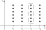
Definition 3.21 (Definition 3.5.1: Marginal CDF/pmf/pdf) Suppose that \(X\) and \(Y\) have a joint distribution. The CDF of \(X\) derived by Theorem 3.14 is called the marginal CDF of \(X\). Similarly, the pmf or pdf of \(X\) associated with the marginal CDF of \(X\) is called the marginal pmf or marginal pdf of \(X\).
To obtain a specific formula for the marginal pmf or marginal pdf, we start with a discrete joint distribution.
Theorem 3.15 (Theorem 3.5.1) If \(X\) and \(Y\) have a discrete joint distribution for which the joint pmf is \(f\), then the marginal pmf \(f_1\) of \(X\) is
\[ f_1(x) = \sum_{\text{All }y}f(x, y). \tag{3.26}\]
Similarly, the marginal pmf \(f_2\) of \(Y\) is \(f_2(y) = \sum_{\text{All }x}f(x, y)\).
Proof. We prove the result for \(f_1\), as the proof for \(f_2\) is similar. We illustrate the proof in ?fig-3-15. In that figure, the set of points in the dashed box is the set of pairs with first coordinate \(x\). The event \(\{X = x\}\) can be expressed as the union of the events represented by the pairs in the dashed box, namely, \(B_y = \{X = x \text{ and } Y = y\}\) for all possible \(y\). The \(B_y\) events are disjoint and \(\Pr(B_y) = f(x, y)\). Since \(\Pr(X = x) = \sum_{\text{All }y}\), Equation 3.26 holds.
Example 3.43 (Example 3.5.2: Deriving a Marginal pmf from a Table of Probabilities) Suppose that \(X\) and \(Y\) are the random variables in Example 3.29. These are respectively the numbers of cars and televisions owned by a radomly selected household in a certain suburban area. Table 3.2 gives their joint pmf, and we repeat that table in ?tbl-3-4 together with row and column totals added to the margins.
The marginal pmf \(f_1\) of \(X\) can be read from the row totals of ?tbl-3-4. The numbers were obtained by summing the values in each row of this table from the four columns in the central part of the table (those labeled \(y = 1, 2, 3, 4\)). In this way, it is found that \(f_1(1) = 0.2\), \(f_1(2) = 0.6\), \(f_1(3) = 0.2\), and \(f_1(x) = 0\) for all other values of \(x\). This marginal pmf gives the probabilities that a randomly selected household owns 1, 2, or 3 cars. Similarly, the marginal pmf \(f_2\) of \(Y\), the probabilities that a household owns 1, 2, 3, or 4 televisions, can be read from the column totals. These numbers were obtained by adding the numbers in each of the columns from the three rows in the central part of the table (those labeled \(x = 1, 2, 3\).)
The name marginal distribution derives from the fact that the marginal distributions are the totals that appear in the margins of tables like ?tbl-3-4.
If \(X\) and \(Y\) have a continuous joint distribution for which the joint pdf is \(f\), then the marginal pdf \(f_1\) of \(X\) is again determined in the manner shown in Equation 3.26, but the sum over all possible values of \(Y\) is now replaced by the integral over all possible values of \(Y\).
| \(y\) | |||||
|---|---|---|---|---|---|
| \(x\) | 1 | 2 | 3 | 4 | Total |
| 1 | 0.1 | 0 | 0.1 | 0 | 0.2 |
| 2 | 0.3 | 0 | 0.1 | 0.2 | 0.6 |
| 3 | 0 | 0.2 | 0 | 0 | 0.2 |
| Total | 0.4 | 0.2 | 0.2 | 0.2 | 1.0 |
Theorem 3.16 (Theorem 3.5.2) If \(X\) and Y have a continuous joint distribution with joint pdf \(f\), then the marginal pdf \(f_1\) of \(X\) is
\[ f_1(x) = \int_{-\infty}^{\infty}f(x, y)\, dy \; \text{ for }-\infty < x < \infty. \tag{3.27}\]
Similarly, the marginal pdf \(f_2\) of \(Y\) is
\[ f_2(y) = \int_{-\infty}^{\infty}f(x, y)\, dx \; \text{ for }-\infty < y < \infty. \tag{3.28}\]
Proof. We prove Equation 3.27 as the proof of Equation 3.28 is similar. For each \(x\), \(\Pr(X \leq x)\) can be written as \(\Pr((X, Y) \in C)\), where \(C = \{(r, s) \mid r \leq x\}\). We can compute this probability directly from the joint pdf of \(X\) and \(Y\) as
\[ \begin{align*} \Pr((X, Y) \in C) &= \int_{-\infty}^{x}\int_{-\infty}^{\infty}f(r, s)\, ds \, dr \\ &= \int_{-\infty}^{x}\left[ \int_{-\infty}^{\infty}f(r, s)\, ds \right]dr \end{align*} \tag{3.29}\]
The inner integral in the last expression of Equation 3.29 is a function of \(r\) and it can easily be recognized as \(f_1(r)\), where \(f_1\) is defined in Equation 3.27. It follows that \(\Pr(X \leq x) = \int_{-\infty}^{x}f_1(r)dr\), so \(f_1\) is the marginal pdf of \(X\).
Example 3.44 (Example 3.5.3: Deriving a Marginal pdf) Suppose that the joint pdf of \(X\) and \(Y\) is as specified in Example 3.34, namely,
\[ f(x, y) = \begin{cases} \frac{21}{4}x^2y &\text{for }x^2 \leq y \leq 1, \\ 0 &\text{otherwise.} \end{cases} \]
The set \(S\) of points \((x, y)\) for which \(f(x, y) > 0\) is sketched in ?fig-3-16. We shall determine first the marginal pdf \(f_1\) of \(X\) and then the marginal pdf \(f_2\) of \(Y\).
It can be seen from ?fig-3-16 that \(X\) cannot take any value outside the interval \([−1, 1]\). Therefore, \(f_1(x) = 0\) for \(x < −1\) or \(x > 1\). Furthermore, for \(−1 \leq x \leq 1\), it is seen from ?fig-3-16 that \(f(x, y) = 0\) unless \(x^2 \leq y \leq 1\). Therefore, for \(−1 \leq x \leq 1\),
\[ f_1(x) = \int_{-\infty}^{\infty}f(x, y)\, dy = \int_{x^2}^{1}\left(\frac{21}{4}\right)x^2y\, dy = \left(\frac{21}{8}\right)x^2(1-x^4). \]
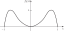
This marginal pdf of \(X\) is sketched in ?fig-3-17.
Next, it can be seen from ?fig-3-16 that \(Y\) cannot take any value outside the interval \([0, 1]\). Therefore, \(f_2(y) = 0\) for \(y < 0\) or \(y > 1\). Furthermore, for \(0 \leq y \leq 1\), it is seen from Figure 3.12 that \(f(x, y) = 0\) unless \(-\sqrt{y} \leq x \leq \sqrt{y}\). Therefore, for \(0 \leq y \leq 1\),
\[ f_2(y) = \int_{-\infty}^{\infty}f(x, y)\, dx = \int_{-\sqrt{y}}^{\sqrt{y}}\left( \frac{21}{4}x^2y\, dx \right) = \left(\frac{7}{2}\right)y^{5/2}. \]
This marginal pdf of \(Y\) is sketched in ?fig-3-18.
If \(X\) has a discrete distribution and \(Y\) has a continuous distribution, we can derive the marginal pmf of \(X\) and the marginal pdf of \(Y\) from the joint pmf/pdf in the same ways that we derived a marginal pmf or a marginal pdf from a joint pmf or a joint pdf. The following result can be proven by combining the techniques used in the proofs of Theorems 3.15 and 3.16.
Theorem 3.17 (Theorem 3.5.3) Let \(f\) be the joint pmf/pdf of \(X\) and \(Y\), with \(X\) discrete and \(Y\) continuous. Then the marginal pmf of \(X\) is
\[ f_1(x) = \Pr(X = x) = \int_{-\infty}^{\infty}f(x, y)\, dy, \text{ for all }x, \]
and the marginal pdf of \(Y\) is
\[ f_2(y) = \sum_{x}f(x, y), \text{ for }-\infty < y < \infty. \]
Example 3.45 (Example 3.5.4: Determining a Marginal pmf and Marginal pdf from a Joint pmf/pdf) Suppose that the joint pmf/pdf of \(X\) and \(Y\) is as in Example 3.37. The marginal pmf of \(X\) is obtained by integrating
\[ f_1(x) = \int_{0}^{1}\frac{xy^{x-1}}{3}dy = \frac{1}{3}, \] for \(x = 1, 2, 3\). The marginal pdf of \(Y\) is obtained by summing
\[ f_2(y) = \frac{1}{3} + \frac{2y}{3} + y^2, \text{ for }0 < y < 1. \]
Although the marginal distributions of \(X\) and \(Y\) can be derived from their joint distribution, it is not possible to reconstruct the joint distribution of \(X\) and \(Y\) from their marginal distributions without additional information. For instance, the marginal pdf’s sketched in Figs. ?fig-3-17 and ?fig-3-18 reveal no information about the relationship between \(X\) and \(Y\). In fact, by definition, the marginal distribution of \(X\) specifies probabilities for \(X\) without regard for the values of any other random variables. This property of a marginal pdf can be further illustrated by another example.
Example 3.46 (Example 3.5.5: Marginal and Joint Distributions) Suppose that a penny and a nickel are each tossed \(n\) times so that every pair of sequences of tosses (\(n\) tosses in each sequence) is equally likely to occur. Consider the following two definitions of \(X\) and \(Y\): (i) \(X\) is the number of heads obtained with the penny, and \(Y\) is the number of heads obtained with the nickel. (ii) Both \(X\) and \(Y\) are the number of heads obtained with the penny, so the random variables \(X\) and \(Y\) are actually identical. In case (i), the marginal distribution of \(X\) and the marginal distribution of \(Y\) will be identical binomial distributions. The same pair of marginal distributions of \(X\) and \(Y\) will also be obtained in case (ii). However, the joint distribution of \(X\) and \(Y\) will not be the same in the two cases. In case (i), \(X\) and \(Y\) can take different values. Their joint pmf is
\[ f(x, y) = \begin{cases} \binom{n}{x}\binom{n}{y}\left( \frac{1}{2} \right)^{x + y} &\text{for }x = 0, 1, \ldots, n,\; y = 0, 1, \ldots, n, \\ 0 &\text{otherwise.} \end{cases} \]
In case (ii), \(X\) and \(Y\) must take the same value, and their joint pmf is
\[ f(x, y) = \begin{cases} \binom{n}{x}\left(\frac{1}{2}\right)^x \text{for }x = y = 0, 1, \ldots, n, \\ 0 &\text{otherwise.} \end{cases} \]
Independent Random Variables
Example 3.47 (Example 3.5.6: Demands for Utilities) In Examples 3.41 and 3.42, we found the marginal CDFs of water and electric demand were, respectively,
\[ F_1(x) = \begin{cases} 0 &\text{for }x < 4, \\ \frac{x}{196} &\text{for }4 \leq x \leq 200, \\ 1 &\text{for }x > 200, \end{cases} \; F_2(y) = \begin{cases} 0 &\text{for }y < 1, \\ \frac{y}{149} &\text{for }1 \leq y \leq 150, \\ 1 &\text{for }y > 150. \end{cases} \]
The product of these two functions is precisely the same as the joint CDF of \(X\) and \(Y\) given in Example 3.42. One consequence of this fact is that, for every \(x\) and \(y\), \(\Pr(X \leq x \text{ and } Y \leq y) = \Pr(X \leq x) \Pr(Y \leq y)\). This equation makes \(X\) and \(Y\) an example of the next definition.
:::
Definition 3.22 (Definition 3.5.2: Independent Random Variables) It is said that two random variables \(X\) and \(Y\) are independent if, for every two sets \(A\) and \(B\) of real numbers such that \(\{X \in A\}\) and \(\{Y \in B\}\) are events,
\[ \Pr(X \in A \text{ and } Y \in B) = \Pr(X \in A)\Pr(Y \in B). \tag{3.30}\]
In other words, let \(E\) be any event the occurrence or nonoccurrence of which depends only on the value of \(X\) (such as \(E = \{X \in A\}\)), and let \(D\) be any event the occurrence or nonoccurrence of which depends only on the value of \(Y\) (such as \(D = \{Y \in B\}\)). Then \(X\) and \(Y\) are independent random variables if and only if \(E\) and \(D\) are independent events for all such events \(E\) and \(D\).
If \(X\) and \(Y\) are independent, then for all real numbers \(x\) and \(y\), it must be true that
\[ \Pr(X \leq x \text{ and } Y \leq y) = \Pr(X \leq x)\Pr(Y \leq y). \tag{3.31}\]
Moreover, since all probabilities for \(X\) and \(Y\) of the type appearing in Equation 3.30 can be derived from probabilities of the type appearing in Equation 3.31, it can be shown that if Equation 3.31 is satisfied for all values of \(x\) and \(y\), then \(X\) and \(Y\) must be independent. The proof of this statement is beyond the scope of this book and is omitted, but we summarize it as the following theorem.
Theorem 3.18 (Theorem 3.5.4) Let the joint CDF of \(X\) and \(Y\) be \(F\), let the marginal CDF of \(X\) be \(F_1\), and let the marginal CDF of \(Y\) be \(F_2\). Then \(X\) and \(Y\) are independent if and only if, for all real numbers \(x\) and \(y\), \(F(x, y) = F_1(x)F_2(y)\).
For example, the demands for water and electricity in Example 3.47 are independent. If one returns to Example 3.42, one also sees that the product of the marginal pdfs of water and electric demand equals their joint pdf given in ?eq-3-4-2. This relation is characteristic of independent random variables whether discrete or continuous.
Theorem 3.19 (Theorem 3.5.5) Suppose that \(X\) and \(Y\) are random variables that have a joint pmf, pdf, or pmf/pdf \(f\). Then \(X\) and \(Y\) will be independent if and only if \(f\) can be represented in the following form for \(-\infty < x < \infty\) and \(-\infty < y < \infty\):
\[ f(x, y) = h_1(x)h_2(y), \tag{3.32}\]
where \(h_1\) is a nonnegative function of \(x\) alone and \(h_2\) is a nonnegative function of \(y\) alone.
Proof. We shall give the proof only for the case in which \(X\) is discrete and \(Y\) is continuous. The other cases are similar. For the “if” part, assume that Equation 3.32 holds. Write
\[ f_1(x) = \int_{-\infty}^{\infty}h_1(x)h_2(y)\, dy = c_1h_1(x), \]
where \(c_1 = \int_{-\infty}^{\infty}h_2(y)\, dy\) must be finite and strictly positive, otherwise \(f_1\) wouldn’t be a pmf. So, \(h_1(x) = f_1(x) / c_1\). Similarly,
\[ f_2(y) = \sum_{x}h_1(x)h_2(y) = h_2(y)\sum_{x}\frac{1}{c_1}f_1(x) = \frac{1}{c_1}h_2(y). \]
So, \(h_2(y) = c_1f_2(y)\). Since \(f(x, y) = h_1(x)h_2(y)\), it follows that
\[ f(x, y) = \frac{f_1(x)}{c_1}c_1f_2(y) = f_1(x)f_2(y). \tag{3.33}\]
Now let \(A\) and \(B\) be sets of real numbers. Assuming the integrals exist, we can write
\[ \begin{align*} \Pr(X \in A \text{ and }Y \in B) &= \sum_{x \in A}\int_{B}f(x, y)\, dy \\ &= \int_{B}\sum_{x \in A}f_1(x)f_2(y)\, dy, \\ &= \sum_{x \in A}f_1(x)\int_{B}f_2(y)\, dy, \end{align*} \]
where the first equality is from Definition 3.19, the second is from Equation 3.33, and the third is straightforward rearrangement. We now see that \(X\) and \(Y\) are independent according to Definition 3.22.
For the “only if” part, assume that \(X\) and \(Y\) are independent. Let \(A\) and \(B\) be sets of real numbers. Let \(f_1\) be the marginal pdf of \(X\), and let \(f_2\) be the marginal pmf of \(Y\). Then
\[ \begin{align*} \Pr(X \in A \text{ and }Y \in B) &= \sum_{X \in A}f_1(x)\int_{B}f_2(y)\, dy \\ &= \int_{B}\sum_{x \in A}f_1(x)f_2(y)\, dy, \end{align*} \]
(if the integral exists) where the first equality follows from Definition 3.22 and the second is a straightforward rearrangement. We now see that \(f_1(x)f_2(y)\) satisfies the conditions needed to be \(f(x, y)\) as stated in Definition 3.19.
A simple corollary follows from Theorem 3.19.
Corollary 3.1 (Corollary 3.5.1) Two random variables \(X\) and \(Y\) are independent if and only if the following factorization is satisfied for all real numbers \(x\) and \(y\):
\[ f(x, y) = f_1(x)f_2(y). \tag{3.34}\]
As stated in Section 3.2, in a continuous distribution the values of a pdf can be changed arbitrarily at any countable set of points. Therefore, for such a distribution it would be more precise to state that the random variables \(X\) and \(Y\) are independent if and only if it is possible to choose versions of \(f\), \(f_1\), and \(f_2\) such that Equation 3.34 is satisfied for \(-\infty < x < \infty\) and \(-\infty < y < \infty\).
The Meaning of Independence: We have given a mathematical definition of independent random variables in Definition 3.22, but we have not yet given any interpretation of the concept of independent random variables. Because of the close connection between independent events and independent random variables, the interpretation of independent random variables should be closely related to the interpretation of independent events. We model two events as independent if learning that one of them occurs does not change the probability that the other one occurs. It is easiest to extend this idea to discrete random variables. Suppose that \(X\) and \(Y\) have a discrete joint distribution. If, for each \(y\), learning that \(Y = y\) does not change any of the probabilities of the events \(\{X = x\}\), we would like to say that \(X\) and \(Y\) are independent. From Corollary 3.1 and the definition of marginal pmf, we see that indeed \(X\) and \(Y\) are independent if and only if, for each \(y\) and \(x\) such that \(\Pr(Y = y) > 0\), \(\Pr(X = x \mid Y = y) = \Pr(X = x)\), that is, learning the value of \(Y\) doesn’t change any of the probabilities associated with \(X\). When we formally define conditional distributions in Section 3.6, we shall see that this interpretation of independent discrete random variables extends to all bivariate distributions. In summary, if we are trying to decide whether or not to model two random variables \(X\) and \(Y\) as independent, we should think about whether we would change the distribution of \(X\) after we learned the value of \(Y\) or vice versa.
| \(y\) | |||||||
|---|---|---|---|---|---|---|---|
| \(x\) | 1 | 2 | 3 | 4 | 5 | 6 | Total |
| 0 | \(1/24\) | \(1/24\) | \(1/24\) | \(1/24\) | \(1/24\) | \(1/24\) | \(1/4\) |
| 0 | \(1/12\) | \(1/12\) | \(1/12\) | \(1/12\) | \(1/12\) | \(1/12\) | \(1/2\) |
| 0 | \(1/24\) | \(1/24\) | \(1/24\) | \(1/24\) | \(1/24\) | \(1/24\) | \(1/4\) |
| 0 | \(1/6\) | \(1/6\) | \(1/6\) | \(1/6\) | \(1/6\) | \(1/6\) | \(1\) |
Example 3.48 (Example 3.5.7: Games of Chance) A carnival game consists of rolling a fair die, tossing a fair coin two times, and recording both outcomes. Let \(Y\) stand for the number on the die, and let \(X\) stand for the number of heads in the two tosses. It seems reasonable to believe that all of the events determined by the roll of the die are independent of all of the events determined by the flips of the coin. Hence, we can assume that \(X\) and \(Y\) are independent random variables. The marginal distribution of \(Y\) is the uniform distribution on the integers \(1, \ldots, 6\), while the distribution of \(X\) is the binomial distribution with parameters \(2\) and \(1/2\). The marginal pmfs and the joint pmf of \(X\) and \(Y\) are given in ?tbl-3-5, where the joint pmf was constructed using Equation 3.34. The Total column gives the marginal pmf \(f_1\) of \(X\), and the Total row gives the marginal pmf \(f_2\) of \(Y\).
Example 3.49 (Example 3.5.8: Determining Whether Random Variables Are Independent in a Clinical Trial) Return to the clinical trial of depression drugs in Exercise 3.55. In that trial, a patient is selected at random from the 150 patients in the study and we record \(Y\), an indicator of the treatment group for that patient, and \(X\), an indicator of whether or not the patient relapsed. ?tbl-3-6 repeats the joint pmf of \(X\) and \(Y\) along with the marginal distributions in the margins. We shall determine whether or not \(X\) and \(Y\) are independent.
In Equation 3.34, \(f(x, y)\) is the probability in the \(x\)th row and the \(y\)th column of the table, \(f_1(x)\) is the number in the Total column in the \(x\)th row, and \(f_2(y)\) is the number in the Total row in the \(y\)th column. It is seen in the table that \(f(1, 2) = 0.087\), while \(f_1(1) = 0.513\), and \(f_2(1) = 0.253\). Hence, \(f(1, 2) \neq f_1(1)f_2(1) = 0.129\). It follows that \(X\) and \(Y\) are not independent.
It should be noted from Examples 3.48 and 3.49 that \(X\) and \(Y\) will be independent if and only if the rows of the table specifying their joint pmf are proportional to one another, or equivalently, if and only if the columns of the table are proportional to one another.
| Treatment Group (\(Y\)) | |||||
|---|---|---|---|---|---|
| Response (\(X\)) | Imipramine (1) | Lithium (2) | Combination (3) | Placebo (4) | Total |
| Relapse (0) | 0.120 | 0.087 | 0.146 | 0.160 | 0.513 |
| No relapse (1) | 0.147 | 0.166 | 0.107 | 0.067 | 0.487 |
| Total | 0.267 | 0.253 | 0.253 | 0.227 | 1.0 |
Example 3.50 (Example 3.5.9: Calculating a Probability Involving Independent Random Variables) Suppose that two measurements \(X\) and \(Y\) are made of the rainfall at a certain location on May 1 in two consecutive years. It might be reasonable, given knowledge of the history of rainfall on May 1, to treat the random variables \(X\) and \(Y\) as independent. Suppose that the pdf \(g\) of each measurement is as follows:
\[ g(x) = \begin{cases} 2x &\text{for }0 \leq x \leq 1, \\ 0 &\text{otherwise.} \end{cases} \]
We shall determine the value of \(\Pr(X + Y \leq 1)\).
Since \(X\) and \(Y\) are independent and each has the pdf \(g\), it follows from Equation 3.34 that for all values of \(x\) and \(y\) the joint pdf \(f(x, y)\) of \(X\) and \(Y\) will be specified by the relation \(f(x, y) = g(x)g(y)\). Hence,
\[ f(x, y) = \begin{cases} 4xy &\text{for }0 \leq x \leq 1 \text{ and }0 \leq y \leq 1, \\ 0 &\text{otherwise.} \end{cases} \]
The set \(S\) in the \(xy\)-plane, where \(f(x, y) > 0\), and the subset \(S_0\), where \(x + y \leq 1\), are sketched in ?fig-3-19. Thus,
\[ \Pr(X + Y \leq 1) = \int_{S_0}\int f(x, y)\, dx\, dy = \int_{0}^{1}\int_{0}^{1-x}4xy\, dy\, dx = \frac{1}{6}. \]
As a final note, if the two measurements \(X\) and \(Y\) had been made on the same day at nearby locations, then it might not make as much sense to treat them as independent, since we would expect them to be more similar to each other than to historical rainfalls. For example, if we first learn that \(X\) is small compared to historical rainfall on the date in question, we might then expect \(Y\) to be smaller than the historical distribution would suggest.
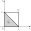
Theorem 3.19 says that \(X\) and \(Y\) are independent if and only if, for all values of \(x\) and \(y\), \(f\) can be factored into the product of an arbitrary nonnegative function of \(x\) and an arbitrary nonnegative function of \(y\). However, it should be emphasized that, just as in Equation 3.34, the factorization in Equation 3.32 must be satisfied for all values of \(x\) and \(y\) (\(-\infty < x < \infty\) and \(-\infty < y < \infty\)).
Example 3.51 (Example 3.5.10: Dependent Random Variables) Suppose that the joint pdf of \(X\) and \(Y\) has the following form:
\[ f(x, y) = \begin{cases} kx^2y^2 &\text{for }x^2 + y^2 \leq 1, \\ 0 &\text{otherwise.} \end{cases} \]
We shall show that \(X\) and \(Y\) are not independent.
It is evident that at each point inside the circle \(x^2 + y^2 \leq 1\), \(f(x, y)\) can be factored as in Equation 3.32. However, this same factorization cannot also be satisfied at every point outside this circle. For example, \(f(0.9, 0.9) = 0\), but neither \(f_1(0.9) = 0\) nor \(f_2(0.9) = 0\). (In Exercise 3.68, you can verify this feature of \(f_1\) and \(f_2\).)
The important feature of this example is that the values of \(X\) and \(Y\) are constrained to lie inside a circle. The joint pdf of \(X\) and \(Y\) is positive inside the circle and zero outside the circle. Under these conditions, \(X\) and \(Y\) cannot be independent, because for every given value \(y\) of \(Y\), the possible values of \(X\) will depend on \(y\). For example, if \(Y = 0\), then \(X\) can have any value such that \(X^2 \leq 1\); if \(Y = 1/2\), then \(X\) must have a value such that \(X^2 \leq 3/4\).
Example 3.51 shows that one must be careful when trying to apply Theorem 3.19. The situation that arose in that example will occur whenever \(\{(x, y) \mid f(x, y) > 0\}\) has boundaries that are curved or not parallel to the coordinate axes. There is one important special case in which it is easy to check the conditions of Theorem 3.19. The proof is left as an exercise.
Theorem 3.20 (Theorem 3.5.6) Let \(X\) and \(Y\) have a continuous joint distribution. Suppose that \(\{(x, y) \mid f(x, y) > 0\}\) is a rectangular region \(R\) (possibly unbounded) with sides (if any) parallel to the coordinate axes. Then \(X\) and \(Y\) are independent if and only if Equation 3.32 holds for all \((x, y) \in R\).
Example 3.52 (Example 3.5.11: Verifying the Factorization of a Joint pdf) Suppose that the joint pdf \(f\) of \(X\) and \(Y\) is as follows:
\[ f(x, y) = \begin{cases} ke^{-(x+2y)} &\text{for }x \geq 0 \text{ and }y \geq 0, \\ 0 &\text{otherwise,} \end{cases} \]
where \(k\) is some constant. We shall first determine whether \(X\) and \(Y\) are independent and then determine their marginal pdfs.
In this example, \(f(x, y) = 0\) outside of an unbounded rectangular region \(R\) whose sides are the lines \(x = 0\) and \(y = 0\). Furthermore, at each point inside \(R\), \(f(x, y)\) can be factored as in Equation 3.32 by letting \(h_1(x) = ke^{-x}\) and \(h_2(y) = e^{-2y}\). Therefore, \(X\) and \(Y\) are independent.
It follows that in this case, except for constant factors, \(h_1(x)\) for \(x \geq 0\) and \(h_2(y)\) for \(y \geq 0\) must be the marginal pdfs of \(X\) and \(Y\). By choosing constants that make \(h_1(x)\) and \(h_2(y)\) integrate to unity, we can conclude that the marginal pdfs \(f_1\) and \(f_2\) of \(X\) and \(Y\) must be as follows:
\[ f_1(x) = \begin{cases} e^{-x} &\text{for }x \geq 0, \\ 0 &\text{otherwise,} \end{cases} \]
and
\[ f_2(y) = \begin{cases} 2e^{-2y} &\text{for }y \geq 0, \\ 0 &\text{otherwise.} \end{cases} \]
If we multiply \(f_1(x)\) times \(f_2(y)\) and compare the product to \(f(x, y)\), we see that \(k = 2\).
Note: Separate Functions of Independent Random Variables Are Independent. If \(X\) and \(Y\) are independent, then \(h(X)\) and \(g(Y)\) are independent no matter what the functions \(h\) and \(g\) are. This is true because for every \(t\), the event \(\{h(X) \leq t\}\) can always be written as \(\{X \in A\}\), where \(A = \{x \mid h(x) \leq t\}\). Similarly, \(\{g(Y) \leq u\}\) can be written as \(\{Y \in B\}\), so Equation 3.31 for \(h(X)\) and \(g(Y)\) follows from Equation 3.30 for \(X\) and \(Y\).
Summary
Let \(f(x, y)\) be a joint pmf, joint pdf, or joint pmf/pdf of two random variables \(X\) and \(Y\). The marginal pmf or pdf of \(X\) is denoted by \(f_1(x)\), and the marginal pmf or pdf of \(Y\) is denoted by \(f_2(y)\). To obtain \(f_1(x)\), compute \(\sum_{y}f(x, y)\) if \(Y\) is discrete or \(\int_{-\infty}^{\infty}f(x, y)\, dy\) if \(Y\) is continuous. Similarly, to obtain \(f_2(y)\), compute \(\sum_{x}f(x, y)\) if \(X\) is discrete or \(\int_{-\infty}^{\infty}f(x, y)\, dx\) if \(X\) is continuous. The random variables \(X\) and \(Y\) are independent if and only if \(f(x, y) = f_1(x)f_2(y)\) for all \(x\) and \(y\). This is true regardless of whether \(X\) and/or \(Y\) is continuous or discrete.A sufficient condition for two continuous random variables to be independent is that \(R = \{(x, y) \mid f(x, y) > 0\}\) be rectangular with sides parallel to the coordinate axes and that \(f(x, y)\) factors into separate functions of \(x\) of \(y\) in \(R\).
Exercises
Exercise 3.56 (Exercise 3.5.1) Suppose that \(X\) and \(Y\) have a continuous joint distribution for which the joint pdf is
\[ f(x, y) = \begin{cases} k &\text{for }a \leq x \leq b \text{ and }c \leq y \leq d, \\ 0 &\text{otherwise,} \end{cases} \]
where \(a < b\), \(c < d\), and \(k > 0\). Find the marginal distributions of \(X\) and \(Y\).
Exercise 3.57 (Exercise 3.5.2) Suppose that \(X\) and \(Y\) have a discrete joint distribution for which the joint pmf is defined as follows:
\[ f(x, y) = \begin{cases} \frac{1}{30}(x + y) &\text{for }x = 0, 1, 2 \text{ and }y = 0, 1, 2, 3, \\ 0 &\text{otherwise.} \end{cases} \]
- Determine the marginal pmfs of \(X\) and \(Y\).
- Are \(X\) and \(Y\) independent?
Exercise 3.58 (Exercise 3.5.3) Suppose that \(X\) and \(Y\) have a continuous joint distribution for which the joint pdf is defined as follows:
\[ f(x, y) = \begin{cases} \frac{3}{2}y^2 &\text{for }0 \leq x \leq 2 \text{ and }0 \leq y \leq 1, \\ 0 &\text{otherwise.} \end{cases} \]
- Determine the marginal pdfs of \(X\) and \(Y\).
- Are \(X\) and \(Y\) independent?
- Are the event \(\{X < 1\}\) and the event \(\{Y \geq 1/2\}\) independent?
Exercise 3.59 (Exercise 3.5.4) Suppose that the joint pdf of \(X\) and \(Y\) is as follows:
\[ f(x, y) = \begin{cases} \frac{15}{4}x^2 &\text{for }0 \leq y \leq 1 - x^2, \\ 0 &\text{otherwise.} \end{cases} \]
- Determine the marginal pdfs of \(X\) and \(Y\).
- Are \(X\) and \(Y\) independent?
Exercise 3.60 (Exercise 3.5.5) A certain drugstore has three public telephone booths. For \(i = 0, 1, 2, 3\), let \(p_i\) denote the probability that exactly \(i\) telephone booths will be occupied on any Monday evening at 8:00pm; and suppose that \(p_0 = 0.1\), \(p_1 = 0.2\), \(p_2 = 0.4\), and \(p_3 = 0.3\). Let \(X\) and \(Y\) denote the number of booths that will be occupied at 8:00pm on two independent Monday evenings. Determine:
- The joint pmf of \(X\) and \(Y\)
- \(\Pr(X = Y)\)
- \(\Pr(X > Y)\)
Exercise 3.61 (Exercise 3.5.6) Suppose that in a certain drug the concentration of a particular chemical is a random variable with a continuous distribution for which the pdf \(g\) is as follows:
\[ g(x) = \begin{cases} \frac{3}{8}x^2 &\text{for }0 \leq x \leq 2, \\ 0 &\text{otherwise.} \end{cases} \]
Suppose that the concentrations \(X\) and \(Y\) of the chemical in two separate batches of the drug are independent random variables for each of which the pdf is \(g\). Determine
- the joint pdf of \(X\) and \(Y\)
- \(\Pr(X = Y)\)
- \(\Pr(X > Y)\)
- \(\Pr(X + Y \leq 1)\)
Exercise 3.62 (Exercise 3.5.7) Suppose that the joint pdf of \(X\) and \(Y\) is as follows:
\[ f(x, y) = \begin{cases} 2xe^{-y} &\text{for }0 \leq x \leq 1 \text{ and }0 < y < \infty, \\ 0 &\text{otherwise.} \end{cases} \]
Are \(X\) and \(Y\) independent?
Exercise 3.63 (Exercise 3.5.8) Suppose that the joint pdf of \(X\) and \(Y\) is as follows:
\[ f(x, y) = \begin{cases} 24xy &\text{for }x \geq 0, y \geq 0, \text{and }x + y \leq 1, \\ 0 &\text{otherwise.} \end{cases} \]
Are \(X\) and \(Y\) independent?
Exercise 3.64 (Exercise 3.5.9) Suppose that a point \((X, Y)\) is chosen at random from the rectangle \(S\) defined as follows:
\[ S = \{(x, y) \mid 0 \leq x \leq 2 \text{ and } 1 \leq y \leq 4\}. \]
- Determine the joint pdf of \(X\) and \(Y\), the marginal pdf of \(X\), and the marginal pdf of \(Y\).
- Are \(X\) and \(Y\) independent?
Exercise 3.65 (Exercise 3.5.10) Suppose that a point \((X, Y)\) is chosen at random from the circle \(S\) defined as follows:
\[ S = \{(x, y) \mid x^2 + y^2 \leq 1\}. \]
- Determine the joint pdf of \(X\) and \(Y\), the marginal pdf of \(X\), and the marginal pdf of \(Y\).
- Are \(X\) and \(Y\) independent?
Exercise 3.66 (Exercise 3.5.11) Suppose that two persons make an appointment to meet between 5pm and 6pm at a certain location, and they agree that neither person will wait more than 10 minutes for the other person. If they arrive independently at random times between 5pm and 6pm, what is the probability that they will meet?
Exercise 3.67 (Exercise 3.5.12) Prove Theorem 3.20
Exercise 3.68 (Exercise 3.5.13) In Example 3.51, verify that \(X\) and \(Y\) have the same marginal pdfs and that
\[ f_1(x) = \begin{cases} 2kx^2(1-x^2)^{3/2}/3 &\text{if }-1 \leq x \leq 1, \\ 0 &\text{otherwise.} \end{cases} \]
Exercise 3.69 (Exercise 3.5.14) For the joint pdf in Example 3.33, determine whether or not \(X\) and \(Y\) are independent.
Exercise 3.70 (Exercise 3.5.15) A painting process consists of two stages. In the first stage, the paint is applied, and in the second stage, a protective coat is added. Let \(X\) be the time spent on the first stage, and let \(Y\) be the time spent on the second stage. The first stage involves an inspection. If the paint fails the inspection, one must wait three minutes and apply the paint again. After a second application, there is no further inspection. The joint pdf of \(X\) and \(Y\) is
\[ f(x, y) = \begin{cases} \frac{1}{3} &\text{if }1 < x < 3 \text{ and }0 < y < 1, \\ \frac{1}{6} &\text{if }6 < x < 8 \text{ and }0 < y < 1, \\ 0 &\text{otherwise.} \end{cases} \]
- Sketch the region where \(f(x, y) > 0\). Note that it is not exactly a rectangle.
- Find the marginal pdfs of \(X\) and \(Y\).
- Show that \(X\) and \(Y\) are independent.
This problem does not contradict Theorem 3.20. In that theorem the conditions, including that the set where \(f(x, y) > 0\) be rectangular, are sufficient but not necessary.
3.6 Conditional Distributions
We generalize the concept of conditional probability to conditional distributions. Recall that distributions are just collections of probabilities of events determined by random variables. Conditional distributions will be the probabilities of events determined by some random variables conditional on events determined by other random variables. The idea is that there will typically be many random variables of interest in an applied problem. After we observe some of those random variables, we want to be able to adjust the probabilities associated with the ones that have not yet been observed. The conditional distribution of one random variable \(X\) given another \(Y\) will be the distribution that we would use for \(X\) after we learn the value of \(Y\).
| Stolen X | Brand Y 1 | 2 | 3 | 4 | 5 | Total |
|---|---|---|---|---|---|---|
| 0 | 0.129 | 0.298 | 0.161 | 0.280 | 0.108 | 0.976 |
| 1 | 0.010 | 0.010 | 0.001 | 0.002 | 0.001 | 0.024 |
| Total | 0.139 | 0.308 | 0.162 | 0.282 | 0.109 | 1.000 |
Discrete Conditional Distributions
::: {.callout-tip title=“Example 3.6.1: Auto Insurance (DeGroot and Schervish, p. 142)”}
Insurance companies keep track of how likely various cars are to be stolen. Suppose that a company in a particular area computes the joint distribution of car brands and the indicator of whether the car will be stolen during a particular year that appears in Table 3.4.
We let \(X = 1\) mean that a car is stolen, and we let X = 0 mean that the car is not stolen. We let Y take one of the values from 1 to 5 to indicate the brand of car as indicated in Table 3.7. If a customer applies for insurance for a particular brand of car, the company needs to compute the distribution of the random variable X as part of its premium determination. The insurance company might adjust their premium according to a risk factor such as likelihood of being stolen. Although, overall, the probability that a car will be stolen is 0.024, if we assume that we know the brand of car, the probability might change quite a bit. This section introduces the formal concepts for addressing this type of problem. Suppose that X and Y are two random variables having a discrete joint distribution for which the joint p.f. is f . As before, we shall let f1 and f2 denote the marginal p.f.’s of X and Y , respectively. After we observe that Y = y, the probability that the random variable X will take a particular value x is specified by the following conditional probability: Pr(X = x|Y = y) = Pr(X = x and Y = y) Pr(Y = y) = f (x, y) f2(y) . (3.6.1) In other words, if it is known that Y = y, then the probability that X = x will be updated to the value in Eq. (3.6.1). Next, we consider the entire distribution of X after learning that Y = y. Definition 3.6.1 Conditional Distribution/p.f. Let X and Y have a discrete joint distribution with joint p.f. f . Let f2 denote the marginal p.f. of Y . For each y such that f2(y) > 0, define g1(x|y) = f (x, y) f2(y) . (3.6.2) Then g1 is called the conditional p.f. of X given Y . The discrete distribution whose p.f. is g1(.|y) is called the conditional distribution of X given that Y = y. 3.6 Conditional Distributions 143 Table 3.8 Conditional p.f. of Y given X for Example 3.6.3 Brand Y Stolen X 1 2 3 4 5 0 0.928 0.968 0.994 0.993 0.991 1 0.072 0.032 0.006 0.007 0.009 We should verify that g1(x|y) is actually a p.f. as a function of x for each y. Let y be such that f2(y) > 0. Then g1(x|y) ≥ 0 for all x and x g1(x|y) = 1 f2(y) x f (x, y) = 1 f2(y) f2(y) = 1. Notice that we do not bother to define g1(x|y) for those y such that f2(y) = 0. Similarly, if x is a given value of X such that f1(x) = Pr(X = x)>0, and if g2(y|x) is the conditional p.f. of Y given that X = x, then g2(y|x) = f (x, y) f1(x) . (3.6.3) For each x such that f1(x) > 0, the function g2(y|x) will be a p.f. as a function of y. Example 3.6.2 Calculating a Conditional p.f. from a Joint p.f. Suppose that the joint p.f. of X and Y is as specified in Table 3.4 in Example 3.5.2. We shall determine the conditional p.f. of Y given that X = 2. The marginal p.f. ofX appears in the Total column of Table 3.4, so f1(2) = Pr(X = 2) = 0.6. Therefore, the conditional probability g2(y|2) that Y will take a particular value y is g2(y|2) = f (2, y) 0.6 . It should be noted that for all possible values of y, the conditional probabilities g2(y|2) must be proportional to the joint probabilities f (2, y). In this example, each value of f (2, y) is simply divided by the constant f1(2) = 0.6 in order that the sum of the results will be equal to 1. Thus, g2(1|2) = 1/2, g2(2|2) = 0, g2(3|2) = 1/6, g2(4|2) = 1/3. Example 3.6.3 Auto Insurance. Consider again the probabilities of car brands and cars being stolen in Example 3.6.1. The conditional distribution of X (being stolen) given Y (brand) is given in Table 3.8. It appears that Brand 1 is much more likely to be stolen than other cars in this area, with Brand 1 also having a significant chance of being stolen. Continuous Conditional Distributions Example 3.6.4 Processing Times. A manufacturing process consists of two stages. The first stage takes Y minutes, and the whole process takes X minutes (which includes the first 144 Chapter 3 Random Variables and Distributions Y minutes). Suppose that X and Y have a joint continuous distribution with joint p.d.f. f (x, y) = e −x for 0 ≤ y ≤x <∞, 0 otherwise. After we learn how much time Y that the first stage takes, we want to update our distribution for the total time X. In other words, we would like to be able to compute a conditional distribution for X given Y = y. We cannot argue the same way as we did with discrete joint distributions, because {Y = y} is an event with probability 0 for all y. To facilitate the solutions of problems such as the one posed in Example 3.6.4, the concept of conditional probability will be extended by considering the definition of the conditional p.f. of X given in Eq. (3.6.2) and the analogy between a p.f. and a p.d.f. Definition 3.6.2 Conditional p.d.f. Let X and Y have a continuous joint distribution with joint p.d.f. f and respective marginals f1 and f2. Let y be a value such that f2(y) > 0. Then the conditional p.d.f. g1 of X given that Y = y is defined as follows: g1(x|y) = f (x, y) f2(y) for −∞< x <∞. (3.6.4) For values of y such that f2(y) = 0, we are free to define g1(x|y) however we wish, so long as g1(x|y) is a p.d.f. as a function of x. It should be noted that Eq. (3.6.2) and Eq. (3.6.4) are identical. However, Eq. (3.6.2) was derived as the conditional probability that X = x given that Y = y, whereas Eq. (3.6.4) was defined to be the value of the conditional p.d.f. of X given that Y = y. In fact, we should verify that g1(x|y) as defined above really is a p.d.f. Theorem 3.6.1 For each y, g1(x|y) defined in Definition 3.6.2 is a p.d.f. as a function of x. Proof If f2(y) = 0, then g1 is defined to be any p.d.f. we wish, and hence it is a p.d.f. If f2(y) > 0, g1 is defined by Eq. (3.6.4). For each such y, it is clear that g1(x|y) ≥ 0 for all x. Also, if f2(y) > 0, then ∞ −∞ g1(x|y) dx = ∞ −∞ f (x, y) dx f2(y) = f2(y) f2(y) = 1, by using the formula for f2(y) in Eq. (3.5.3). Example 3.6.5 Processing Times. In Example 3.6.4, Y is the time that the first stage of a process takes, while X is the total time of the two stages.We want to calculate the conditional p.d.f. of X given Y . We can calculate the marginal p.d.f. of Y as follows: For each y, the possible values of X are all x ≥ y, so for each y >0, f2(y) = ∞ y e −xdx = e −y, and f2(y) = 0 fory <0. For each y ≥ 0, the conditional p.d.f. of X given Y = y is then g1(x|y) = f (x, y) f2(y) = e −x e−y = ey−x, for x ≥ y, 3.6 Conditional Distributions 145 Figure 3.20 The conditional p.d.f. g1(x|y0) is proportional to f (x, y0). x y f (x, y) f (x, y0) y0 and g1(x|y) = 0 for x < y. So, for example, if we observe Y = 4 and we want the conditional probability that X ≥ 9, we compute Pr(X ≥ 9|Y = 4) = ∞ 9 e4−xdx = e −5 = 0.0067. Definition 3.6.2 has an interpretation that can be understood by considering Fig. 3.20. The joint p.d.f. f defines a surface over the xy-plane for which the height f (x, y) at each point (x, y) represents the relative likelihood of that point. For instance, if it is known that Y = y0, then the point (x, y) must lie on the line y = y0 in the xy-plane, and the relative likelihood of any point (x, y0) on this line is f (x, y0). Hence, the conditional p.d.f. g1(x|y0) ofX should be proportional to f (x, y0). In other words, g1(x|y0) is essentially the same as f (x, y0), but it includes a constant factor 1/[f2(y0)], which is required to make the conditional p.d.f. integrate to unity over all values of x. Similarly, for each value of x such that f1(x) > 0, the conditional p.d.f. of Y given that X = x is defined as follows: g2(y|x) = f (x, y) f1(x) for −∞< y <∞. (3.6.5) This equation is identical to Eq. (3.6.3), which was derived for discrete distributions. If f1(x) = 0, then g2(y|x) is arbitrary so long as it is a p.d.f. as a function of y. Example 3.6.6 Calculating a Conditional p.d.f. from a Joint p.d.f. Suppose that the joint p.d.f. of X and Y is as specified in Example 3.4.8 on page 122.We shall first determine the conditional p.d.f. of Y given that X = x and then determine some probabilities for Y given the specific value X = 1/2. The set S for which f (x, y) > 0 was sketched in Fig. 3.12 on page 123. Furthermore, the marginal p.d.f. f1 was derived in Example 3.5.3 on page 132 and sketched in Fig. 3.17 on page 133. It can be seen from Fig. 3.17 that f1(x) > 0 for−1<x <1 but not for x = 0. Therefore, for each given value of x such that −1< x <0 or 0 < x <1, the conditional p.d.f. g2(y|x) of Y will be as follows: g2(y|x) = ⎧⎨ ⎩ 2y 1− x4 for x2 ≤ y ≤ 1, 0 otherwise. 146 Chapter 3 Random Variables and Distributions In particular, if it is known that X = 1/2, then Pr Y ≥ 1 4 X = 1 2 = 1 and Pr Y ≥ 3 4 X = 1 2 = 1 3/4 g2 y 1 2 dy = 7 15 . Note: A Conditional p.d.f. Is Not the Result of Conditioning on a Set of Probability Zero. The conditional p.d.f. g1(x|y) of X given Y = y is the p.d.f. we would use for X if we were to learn that Y = y. This sounds as if we were conditioning on the event {Y = y}, which has zero probability if Y has a continuous distribution. Actually, for the cases we shall see in this text, the value of g1(x|y) is a limit: g1(x|y) = lim →0 ∂ ∂x Pr(X ≤ x|y − < Y ≤ y + ). (3.6.6) The conditioning event {y − ≤ Y ≤ y + } in Eq. (3.6.6) has positive probability if the marginal p.d.f. of Y is positive at y. The mathematics required to make this rigorous is beyond the scope of this text. (See Exercise 11 in this section and Exercises 25 and 26 in Sec. 3.11 for results that we can prove.) Another way to think about conditioning on a continuous random variable is to notice that the conditional p.d.f.’s that we compute are typically continuous as a function of the conditioning variable. This means that conditioning on Y = y or on Y = y + for small will produce nearly the same conditional distribution for X. So it does not matter much if we use Y = y as a surogate for Y close to y. Nevertheless, it is important to keep in mind that the conditional p.d.f. of X given Y = y is better thought of as the conditional p.d.f. of X given that Y is very close to y. This wording is awkward, so we shall not use it, but we must remember the distinction between the conditional p.d.f. and conditioning on an event with probability 0. Despite this distinction, it is still legitimate to treat Y as the constant y when dealing with the conditional distribution of X given Y = y. For mixed joint distributions, we continue to use Eqs. (3.6.2) and (3.6.3) to define conditional p.f.’s and p.d.f.’s. Definition 3.6.3 Conditional p.f. or p.d.f. from Mixed Distribution. Let X be discrete and let Y be continuous with joint p.f./p.d.f. f . Then the conditional p.f. ofX given Y = y is defined by Eq. (3.6.2), and the conditional p.d.f. of Y given X = x is defined by Eq. (3.6.3). Construction of the Joint Distribution Example 3.6.7 Defective Parts. Suppose that a certain machine produces defective and nondefective parts, but we do not know what proportion of defectives we would find among all parts that could be produced by this machine. Let P stand for the unknown proportion of defective parts among all possible parts produced by the machine. Ifwe were to learn that P = p, we might be willing to say that the parts were independent of each other and each had probability p of being defective. In other words, if we condition on P = p, then we have the situation described in Example 3.1.9. As in that example, suppose that we examine n parts and let X stand for the number of defectives among the n examined parts. The distribution ofX, assuming that we know P = p, is the binomial distribution with parameters n and p. That is, we can let the binomial p.f. (3.1.4) be the conditional p.f. of X given P = p, namely, g1(x|p) =
n x px(1− p)n−x, for x = 0, . . . , n. 3.6 Conditional Distributions 147 We might also believe thatP has a continuous distribution with p.d.f. such as f2(p) = 1 for 0 ≤ p ≤ 1. (This means that P has the uniform distribution on the interval [0, 1].) We know that the conditional p.f. g1 of X given P = p satisfies g1(x|p) = f (x, p) f2(p) , where f is the joint p.f./p.d.f. of X and P. If we multiply both sides of this equation by f2(p), it follows that the joint p.f./p.d.f. of X and P is f (x, p) = g1(x|p)f2(p) =
n x px(1− p)n−x, for x = 0, . . . , n, and 0 ≤ p ≤ 1. The construction in Example 3.6.7 is available in general, as we explain next. Generalizing the Multiplication Rule for Conditional Probabilities Aspecial case of Theorem 2.1.2, the multiplication rule for conditional probabilities, says that if A and B are two events, then Pr(A ∩ B) = Pr(A) Pr(B|A). The following theorem, whose proof is immediate from Eqs. (3.6.4) and (3.6.5), generalizes Theorem 2.1.2 to the case of two random variables. Theorem 3.6.2 Multiplication Rule for Distributions. Let X and Y be random variables such that X has p.f. or p.d.f. f1(x) and Y has p.f. or p.d.f. f2(y). Also, assume that the conditional p.f. or p.d.f. of X given Y = y is g1(x|y) while the conditional p.f. or p.d.f. of Y given X = x is g2(y|x). Then for each y such that f2(y) > 0 and each x, f (x, y) = g1(x|y)f2(y), (3.6.7) where f is the joint p.f., p.d.f., or p.f./p.d.f. of X and Y . Similarly, for each x such that f1(x) > 0 and each y, f (x, y) = f1(x)g2(y|x). (3.6.8) In Theorem 3.6.2, if f2(y0) = 0 for some value y0, then it can be assumed without loss of generality that f (x, y0) = 0 for all values of x. In this case, both sides of Eq. (3.6.7) will be 0, and the fact that g1(x|y0) is not uniquely defined becomes irrelevant. Hence, Eq. (3.6.7) will be satisfied for all values of x and y. A similar statement applies to Eq. (3.6.8). Example 3.6.8 Waiting in a Queue. Let X be the amount of time that a person has to wait for service in a queue. The faster the server works in the queue, the shorter should be the waiting time. Let Y stand for the rate at which the server works, which we will take to be unknown. A common choice of conditional distribution for X given Y = y has conditional p.d.f. for each y >0: g1(x|y) = ye −xy for x ≥ 0, 0 otherwise. We shall assume that Y has a continuous distribution with p.d.f. f2(y) = e −y fory >0. Now we can construct the joint p.d.f. of X and Y using Theorem 3.6.2: f (x, y) = g1(x|y)f2(y) = ye −y(x+1) for x ≥ 0, y >0, 0 otherwise. 148 Chapter 3 Random Variables and Distributions Example 3.6.9 Defective Parts. Let X be the number of defective parts in a sample of size n, and let P be the proportion of defectives among all parts, as in Example 3.6.7. The joint p.f./p.d.f of X and P = p was calculated there as f (x, p) = g1(x|p)f2(p) =
n x px(1− p)n−x, for x = 0, . . . , n and 0 ≤ p ≤ 1. We could now compute the conditional p.d.f. of P given X = x by first finding the marginal p.f. of X: f1(x) = 1 0
n x px(1− p)n−xdp, (3.6.9) The conditional p.d.f. of P given X = x is then g2(p|x) = f (x, p) f1(x) = px(1− p)n−x 1 0 qx(1− q)n−xdq , for 0<p <1. (3.6.10) The integral in the denominator of Eq. (3.6.10) can be tedious to calculate, but it can be found. For example, if n = 2 and x = 1, we get 1 0 q(1− q)dq = 1 2 − 1 3 = 1 6 . In this case, g2(p|1) = 6p(1− p) for 0 ≤ p ≤ 1. Bayes’ Theorem and the Law of Total Probability for Random Variables The calculation done in Eq. (3.6.9) is an example of the generalization of the law of total probability to random variables. Also, the calculation in Eq. (3.6.10) is an example of the generalization of Bayes’ theorem to random variables. The proofs of these results are straightforward and not given here. Theorem 3.6.3 Law of Total Probability for Random Variables. If f2(y) is the marginal p.f. or p.d.f. of a random variable Y and g1(x|y) is the conditional p.f. or p.d.f. of X given Y = y, then the marginal p.f. or p.d.f. of X is f1(x) = y g1(x|y)f2(y), (3.6.11) if Y is discrete. If Y is continuous, the marginal p.f. or p.d.f. of X is f1(x) = ∞ −∞ g1(x|y)f2(y) dy. (3.6.12) There are versions of Eqs. (3.6.11) and (3.6.12) with x and y switched and the subscripts 1 and 2 switched. These versions would be used if the joint distribution of X and Y were constructed from the conditional distribution of Y given X and the marginal distribution of X. Theorem 3.6.4 Bayes’ Theorem for Random Variables. Iff2(y) is the marginal p.f. or p.d.f. of a random variable Y and g1(x|y) is the conditional p.f. or p.d.f. of X given Y = y, then the conditional p.f. or p.d.f. of Y given X = x is g2(y|x) = g1(x|y)f2(y) f1(x) , (3.6.13) 3.6 Conditional Distributions 149 where f1(x) is obtained from Eq. (3.6.11) or (3.6.12). Similarly, the conditional p.f. or p.d.f. of X given Y = y is g1(x|y) = g2(y|x)f1(x) f2(y) , (3.6.14) where f2(y) is obtained from Eq. (3.6.11) or (3.6.12) with x and y switched and with the subscripts 1 and 2 switched. Example 3.6.10 Choosing Points from Uniform Distributions. Suppose that a point X is chosen from the uniform distribution on the interval [0, 1], and that after the valueX = x has been observed (0 < x <1), a point Y is then chosen from the uniform distribution on the interval [x, 1]. We shall derive the marginal p.d.f. of Y . Since X has a uniform distribution, the marginal p.d.f. of X is as follows: f1(x) = 1 for 0 < x <1, 0 otherwise. Similarly, for each value X = x (0 < x <1), the conditional distribution of Y is the uniform distribution on the interval [x, 1]. Since the length of this interval is 1− x, the conditional p.d.f. of Y given that X = x will be g2(y|x) = ⎧⎨ ⎩ 1 1− x for x <y <1, 0 otherwise. It follows from Eq. (3.6.8) that the joint p.d.f. of X and Y will be f (x, y) = ⎧⎨ ⎩ 1 1− x for 0 < x < y <1, 0 otherwise. (3.6.15) Thus, for 0 < y <1, the value of the marginal p.d.f. f2(y) of Y will be f2(y) = ∞ −∞ f (x, y) dx = y 0 1 1− x dx =−log(1− y). (3.6.16) Furthermore, since Y cannot be outside the interval 0 < y <1, then f2(y) = 0 for y ≤ 0 or y ≥ 1. This marginal p.d.f. f2 is sketched in Fig. 3.21. It is interesting to note that in this example the function f2 is unbounded. We can also find the conditional p.d.f. of X given Y = y by applying Bayes’ theorem (3.6.14). The product of g2(y|x) and f1(x) was already calculated in Eq. (3.6.15). Figure 3.21 The marginal p.d.f. of Y in Example 3.6.10. y f2(y) 0 1 150 Chapter 3 Random Variables and Distributions The ratio of this product to f2(y) from Eq. (3.6.16) is g1(x|y) = ⎧⎨ ⎩ −1 (1− x) log(1− y) for 0 < x < y, 0 otherwise. Theorem 3.6.5 Independent Random Variables. Suppose that X and Y are two random variables having a joint p.f., p.d.f., or p.f./p.d.f. f . Then X and Y are independent if and only if for every value of y such that f2(y) > 0 and every value of x, g1(x|y) = f1(x). (3.6.17) Proof Theorem 3.5.4 says that X and Y are independent if and only if f (x, y) can be factored in the following form for −∞< x <∞and −∞< y <∞: f (x, y) = f1(x)f2(y), which holds if and only if, for all x and all y such that f2(y) > 0, f1(x) = f (x, y) f2(y) . (3.6.18) But the right side of Eq. (3.6.18) is the formula for g1(x|y). Hence, X and Y are independent if and only if Eq. (3.6.17) holds for all x and all y such that f2(y) > 0. Theorem 3.6.5 says that X and Y are independent if and only if the conditional p.f. or p.d.f. of X given Y = y is the same as the marginal p.f. or p.d.f. of X for all y such that f2(y) > 0. Because g1(x|y) is arbitrary when f2(y) = 0, we cannot expect Eq. (3.6.17) to hold in that case. Similarly, it follows from Eq. (3.6.8) that X and Y are independent if and only if g2(y|x) = f2(y), (3.6.19) for every value of x such that f1(x) > 0. Theorem 3.6.5 and Eq. (3.6.19) give the mathematical justification for the meaning of independence that we presented on page 136. Note: Conditional Distributions Behave Just Like Distributions. As we noted on page 59, conditional probabilities behave just like probabilities. Since distributions are just collections of probabilities, it follows that conditional distributions behave just like distributions. For example, to compute the conditional probability that a discrete random variableX is in some interval [a, b] given Y = y, we must add g1(x|y) for all values of x in the interval. Also, theorems that we have proven or shall prove about distributions will have versions conditional on additional random variables. We shall postpone examples of such theorems until Sec. 3.7 because they rely on joint distributions of more than two random variables. Summary The conditional distribution of one random variable X given an observed value y of another random variable Y is the distribution we would use for X if we were to learn that Y = y. When dealing with the conditional distribution of X given Y = y, it is safe to behave as if Y were the constant y. If X and Y have joint p.f., p.d.f., or p.f./p.d.f. f (x, y), then the conditional p.f. or p.d.f. of X given Y = y is g1(x|y) = 3.6 Conditional Distributions 151 f (x, y)/f2(y), where f2 is the marginal p.f. or p.d.f. of Y . When it is convenient to specify a conditional distribution directly, the joint distribution can be constructed from the conditional together with the other marginal. For example, f (x, y) = g1(x|y)f2(y) = f1(x)g2(y|x). In this case, we have versions of the law of total probability and Bayes’ theorem for random variables that allow us to calculate the other marginal and conditional. Two random variables X and Y are independent if and only if the conditional p.f. or p.d.f. of X given Y = y is the same as the marginal p.f. or p.d.f. of X for all y such that f2(y) > 0. Equivalently, X and Y are independent if and only if the conditional p.f. of p.d.f. of Y given X = x is the same as the marginal p.f. or p.d.f. of Y for all x such that f1(x) > 0.
Exercises
- Suppose that two random variables X and Y have the joint p.d.f. in Example 3.5.10 on page 139. Compute the conditional p.d.f. of X given Y = y for each y.
- Each student in a certain high school was classified according to her year in school (freshman, sophomore, junior, or senior) and according to the number of times that she had visited a certain museum (never, once, or more than once).The proportions of students in the various classifications are given in the following table: More Never Once than once Freshmen 0.08 0.10 0.04 Sophomores 0.04 0.10 0.04 Juniors 0.04 0.20 0.09 Seniors 0.02 0.15 0.10
- If a student selected at random from the high school is a junior, what is the probability that she has never visited the museum?
- If a student selected at random from the high school has visited the museum three times, what is the probability that she is a senior?
- Suppose that a point (X, Y ) is chosen at random from the disk S defined as follows: S = {(x, y) : (x − 1)2 + (y + 2)2 ≤ 9}. Determine (a) the conditional p.d.f. of Y for every given value of X, and (b) Pr(Y > 0|X = 2).
- Suppose that the joint p.d.f. of two random variables X and Y is as follows: f (x, y) = c(x + y2) for 0 ≤ x ≤ 1 and 0 ≤ y ≤ 1, 0 otherwise. Determine (a) the conditional p.d.f. of X for every given value of Y , and (b) Pr(X < 1 2 |Y = 1 2 ).
- Suppose that the joint p.d.f. of two points X and Y chosen by the process described in Example 3.6.10 is as given by Eq. (3.6.15). Determine (a) the conditional p.d.f. of X for every given value of Y , and (b) Pr X> 1 2 Y = 3 4 .
- Suppose that the joint p.d.f. of two random variables X and Y is as follows: f (x, y) = c sin x for 0 ≤ x ≤ π/2 and 0 ≤ y ≤ 3, 0 otherwise. Determine (a) the conditional p.d.f. of Y for every given value of X, and (b) Pr(1<Y <2|X = 0.73).
- Suppose that the joint p.d.f. of two random variables X and Y is as follows: f (x, y) = ⎧⎪⎨ ⎪⎩ 3 16 (4 − 2x − y) for x >0, y >0, and 2x +y <4, 0 otherwise. Determine (a) the conditional p.d.f. of Y for every given value of X, and (b) Pr(Y ≥ 2|X = 0.5).
- Suppose that a person’s score X on a mathematics aptitude test is a number between 0 and 1, and that his score Y on a music aptitude test is also a number between 0 and 1. Suppose further that in the population of all college students in the United States, the scores X and Y are distributed according to the following joint p.d.f.: f (x, y) = 2 5 (2x + 3y) for 0 ≤ x ≤ 1 and 0 ≤ y ≤ 1, 0 otherwise. 152 Chapter 3 Random Variables and Distributions
- What proportion of college students obtain a score greater than 0.8 on the mathematics test?
- If a student’s score on the music test is 0.3, what is the probability that his score on the mathematics test will be greater than 0.8?
- If a student’s score on the mathematics test is 0.3, what is the probability that his score on the music test will be greater than 0.8?
- Suppose that either of two instruments might be used for making a certain measurement. Instrument 1 yields a measurement whose p.d.f. h1 is h1(x) = 2x for 0 < x <1, 0 otherwise. Instrument 2 yields a measurement whose p.d.f. h2 is h2(x) = 3x2 for 0 < x <1, 0 otherwise. Suppose that one of the two instruments is chosen at random and a measurement X is made with it.
- Determine the marginal p.d.f. of X.
- If the value of the measurement is X = 1/4, what is the probability that instrument 1 was used?
- In a large collection of coins, the probability X that a head will be obtained when a coin is tossed varies from one coin to another, and the distribution of X in the collection is specified by the following p.d.f.: f1(x) = 6x(1− x) for 0 < x <1, 0 otherwise. Suppose that a coin is selected at random from the collection and tossed once, and that a head is obtained. Determine the conditional p.d.f. of X for this coin.
- The definition of the conditional p.d.f. of X given Y = y is arbitrary if f2(y) = 0. The reason that this causes no serious problem is that it is highly unlikely that we will observe Y close to a value y0 such that f2(y0) = 0. To be more precise, let f2(y0) = 0, and let A0 = [y0 − , y0 + ]. Also, let y1 be such that f2(y1) > 0, and let A1 = [y1 − , y1 + ]. Assume that f2 is continuous at both y0 and y1. Show that lim →0 Pr(Y ∈ A0) Pr(Y ∈ A1) = 0. That is, the probability that Y is close to y0 is much smaller than the probability that Y is close to y1.
- Let Y be the rate (calls per hour) at which calls arrive at a switchboard. Let X be the number of calls during a two-hour period. Suppose that the marginal p.d.f. of Y is f2(y) = e −y if y >0, 0 otherwise, and that the conditional p.f. of X given Y = y is g1(x|y) = ⎧⎨ ⎩ (2y)x x! e −2y if x = 0, 1, . . . , 0 otherwise.
- Find themarginal p.f. ofX. (Youmay use the formula ∞ 0 yke −y dy = k!.)
- Find the conditional p.d.f. g2(y|0) of Y given X = 0.
- Find the conditional p.d.f. g2(y|1) of Y given X = 1.
- For what values of y is g2(y|1) > g2(y|0)? Does this agree with the intuition that the more calls you see, the higher you should think the rate is?
- Start with the joint distribution of treatment group and response in Table 3.6 on page 138. For each treatment group, compute the conditional distribution of response given the treatment group. Do they appear to be very similar or quite different?
3.7 Multivariate Distributions
In this section, we shall extend the results that were developed in Sections 3.4, 3.5, and 3.6 for two random variables \(X\) and \(Y\) to an arbitrary finite number \(n\) of random variables \(X_1, \ldots,X_n\). In general, the joint distribution of more than two random variables is called a multivariate distribution. The theory of statistical inference (the subject of the part of this book beginning with Chapter 7) relies on mathematical models for observable data in which each observation is a random variable. For this reason, multivariate distributions arise naturally in the mathematical models for data. The most commonly used model will be one in which the individual data random variables are conditionally independent given one or two other random variables.
Joint Distributions
The situation described in Example 3.7.1 requires us to construct a joint distribution for n random variables.We shall now provide definitions and examples of the important concepts needed to discuss multivariate distributions. Definition 3.7.1 Joint Distribution Function/c.d.f. The joint c.d.f. of n random variables X1, . . . , Xn is the function F whose value at every point (x1, . . . , xn) in n-dimensional space Rn is specified by the relation F(x1, . . . , xn) = Pr(X1 ≤ x1, X2 ≤ x2, . . . , Xn ≤ xn). (3.7.1) Every multivariate c.d.f. satisfies properties similar to those given earlier for univariate and bivariate c.d.f.’s. Example 3.7.2 Failure Times. Suppose that a machine has three parts, and part i will fail at time Xi for i = 1, 2, 3. The following function might be the joint c.d.f. of X1, X2, and X3: F(x1, x2, x3) = (1− e −x1)(1− e −2x2)(1− e −3x3) for x1, x2, x3 ≥ 0, 0 otherwise. Vector Notation In the study of the joint distribution of n random variables X1, . . . , Xn, it is often convenient to use the vector notation X = (X1, . . . , Xn) and to refer to X as a random vector. Instead of speaking of the joint distribution of the random variables X1, . . . , Xn with a joint c.d.f. F(x1, . . . , xn), we can simply speak of the distribution of the random vector X with c.d.f. F(x). When this vector notation is used, it must be kept in mind that if X is an n-dimensional random vector, then its c.d.f. is defined as a function on n-dimensional space Rn. At each point x = (x1, . . . , xn) ∈ Rn, the value of F(x) is specified by Eq. (3.7.1). Definition 3.7.2 Joint Discrete Distribution/p.f. It is said that n random variables X1, . . . , Xn have a discrete joint distribution if the random vector (X1, . . . , Xn) can have only a finite number or an infinite sequence of different possible values (x1, . . . , xn) in Rn. The joint p.f. of X1, . . . , Xn is then defined as the function f such that for every point (x1, . . . , xn) ∈ Rn, f (x1, . . . , xn) = Pr(X1 = x1, . . . , Xn = xn). In vector notation, Definition 3.7.2 says that the random vector X has a discrete distribution and that its p.f. is specified at every point x ∈ Rn by the relation f (x) = Pr(X = x). 154 Chapter 3 Random Variables and Distributions The following result is a simple generalization of Theorem 3.4.2. Theorem 3.7.1 If X has a joint discrete distribution with joint p.f. f , then for every subset C ⊂ Rn, Pr(X ∈ C) = x∈C f (x). It is easy to show that, if each of X1, . . . , Xn has a discrete distribution, then X = (X1, . . . , Xn) has a discrete joint distribution. Example 3.7.3 A Clinical Trial. Consider the m patients in Example 3.7.1. Suppose for now that P = p is known so that we don’t treat it as a random variable. The joint p.f. of X = (X1, . . . , Xm) is f (x) = px1+…+xm(1− p)m−x1−…−xm, for all xi ∈ {0, 1} and 0 otherwise. Definition 3.7.3 Continuous Distribution/p.d.f. It is said that n random variables X1, . . . , Xn have a continuous joint distribution if there is a nonnegative function f defined on Rn such that for every subset C ⊂ Rn, Pr[(X1, . . . , Xn) ∈ C]= . . . C f (x1, . . . xn) dx1 . . . dxn, (3.7.2) if the integral exists. The function f is called the joint p.d.f. of X1, . . . , Xn. In vector notation, f (x) denotes the p.d.f. of the random vector X and Eq. (3.7.2) could be rewritten more simply in the form Pr(X ∈ C) = . . . C f (x) dx. Theorem 3.7.2 If the joint distribution of X1, . . . , Xn is continuous, then the joint p.d.f. f can be derived from the joint c.d.f. F by using the relation f (x1, . . . , xn) = ∂nF(x1, . . . , xn) ∂x1 . . . ∂xn at all points (x1, . . . , xn) at which the derivative in this relation exists. Example 3.7.4 Failure Times. We can find the joint p.d.f. for the three random variables in Example 3.7.2 by applying Theorem 3.7.2. The third-order mixed partial is easily calculated to be f (x1, x2, x3) = 6e −x1−2x2−3x3 for x1, x2, x3 > 0, 0 otherwise. It is important to note that, even if each of X1, . . . , Xn has a continuous distribution, the vector X = (X1, . . . , Xn) might not have a continuous joint distribution. See Exercise 9 in this section. Example 3.7.5 Service Times in a Queue. A queue is a system in which customers line up for service and receive their service according to some algorithm. A simple model is the singleserver queue, in which all customers wait for a single server to serve everyone ahead of them in the line and then they get served. Suppose that n customers arrive at a 3.7 Multivariate Distributions 155 single-server queue for service. Let Xi be the time that the server spends serving customer i for i = 1, . . . , n. We might use a joint distribution for X = (X1, . . . , Xn) with joint p.d.f. of the form f (x) = ⎧⎨ ⎩ c 2 + n i=1 xi n+1 for all xi > 0, 0 otherwise. (3.7.3) We shall now find the value of c such that the function in Eq. (3.7.3) is a joint p.d.f. We can do this by integrating over each variable x1, . . . , xn in succession (starting with xn). The first integral is ∞ 0 c (2 + x1 + . . . + xn)n+1 dxn = c/n (2 + x1 + . . . + xn−1)n . (3.7.4) The right-hand side of Eq. (3.7.4) is in the same form as the original p.d.f. except that n has been reduced to n − 1 and c has been divided by n. It follows that when we integrate over the variable xi (for i = n − 1, n − 2, . . . , 1), the result will be in the same form with n reduced to i − 1 and c divided by n(n − 1) . . . i. The result of integrating all coordinates except x1 is then c/n! (2 + x1)2 , for x1 > 0. Integrating x1 out of this yields c/[2(n!)], which must equal 1, so c = 2(n!). Mixed Distributions Example 3.7.6 Arrivals at a Queue. In Example 3.7.5, we introduced the single-server queue and discussed service times. Some features that influence the performance of a queue are the rate at which customers arrive and the rate at which customers are served. Let Z stand for the rate at which customers are served, and let Y stand for the rate at which customers arrive at the queue. Finally, let W stand for the number of customers that arrive during one day. ThenW is discrete while Y and Z could be continuous random variables. A possible joint p.f./p.d.f. for these three random variables is f (y, z,w) = 6e −3z−10y(8y)w/w! for z, y > 0 and w = 0, 1, . . . , 0 otherwise. We can verify this claim shortly. Definition 3.7.4 Joint p.f./p.d.f. LetX1, . . . , Xn be random variables, some of which have a continuous joint distribution and some of which have discrete distributions; their joint distribution would then be represented by a function f that we call the joint p.f./p.d.f. The function has the property that the probability that X lies in a subset C ⊂ Rn is calculated by summing f (x) over the values of the coordinates of x that correspond to the discrete random variables and integrating over those coordinates that correspond to the continuous random variables for all points x ∈ C. Example 3.7.7 Arrivals at a Queue. We shall now verify that the proposed p.f./p.d.f. in Example 3.7.6 actually sums and integrates to 1 over all values of (y, z, w). We must sum over w and integrate over y and z.We have our choice of in what order to do them. It is not 156 Chapter 3 Random Variables and Distributions difficult to see that we can factor f as f (y, z,w) = h2(z)h13(y, w), where h2(z) = 6e −3z for z > 0, 0 otherwise, h13(y, w) = e −10y(8y)w/w! for y >0 and w = 0, 1, . . . , 0 otherwise. So we can integrate z out first to get ∞ −∞ f (y, z,w)dz = h13(y, w) ∞ 0 6e −3zdz = 2h13(y, w). Integrating y out of h13(y, w) is possible, but not pleasant. Instead, notice that (8y)w/w! is the wth term in the Taylor expansion of e8y. Hence, ∞ w=0 2h13(y, w) = 2e −10y ∞ w=0 (8y)w w! = 2e −10ye8y = 2e −2y, for y >0 and 0 otherwise. Finally, integrating over y yields 1. Example 3.7.8 A Clinical Trial. In Example 3.7.1, one of the random variables P has a continuous distribution, and the others X1, . . . , Xm have discrete distributions. A possible joint p.f./p.d.f. for (X1, . . . , Xm, P) is f (x, p) = px1+…+xm(1− p)m−x1−…−xm for all xi ∈ {0, 1} and 0 ≤ p ≤ 1, 0 otherwise. We can find probabilities based on this function. Suppose, for example, that we want the probability that there is exactly one success among the first two patients, that is, Pr(X1 + X2 = 1).We must integrate f (x, p) over p and sum over all values of x that have x1 + x2 = 1. For purposes of illustration, suppose that m = 4. First, factor out px1+x2(1− p)2−x1−x2 = p(1− p), which yields f (x, p) = [p(1− p)]px3+x4(1− p)2−x3−x4, for x3, x4 ∈ {0, 1}, 0<p <1, and x1 + x2 = 1. Summing over x3 yields [p(1− p)] px4(1− p)1−x4(1− p) + ppx4(1− p)1−x4 = [p(1− p)]px4(1− p)1−x4. Summing this over x4 gives p(1− p). Next, integrate over p to get 1 0 p(1− p)dp = 1/6. Finally, note that there are two (x1, x2) vectors, (1, 0) and (0, 1), that have x1 + x2 = 1, so Pr(X1 + X2 = 1) = (1/6) + (1/6) = 1/3.
Marginal Distributions
Deriving a Marginal PDF: If the joint distribution of n random variables X1, . . . , Xn is known, then the marginal distribution of each single random variable Xi can be derived from this joint distribution. For example, if the joint p.d.f. of X1, . . . , Xn is f , then the marginal p.d.f. f1 of X1 is specified at every value x1 by the relation f1(x1) = ∞ −∞ . . . ∞ −∞ n−1 f (x1, . . . , xn) dx2 . . . dxn. More generally, the marginal joint p.d.f. of any k of the n random variables X1, . . . , Xn can be found by integrating the joint p.d.f. over all possible values of 3.7 Multivariate Distributions 157 the other n − k variables. For example, if f is the joint p.d.f. of four random variables X1, X2, X3, and X4, then the marginal bivariate p.d.f. f24 of X2 and X4 is specified at each point (x2, x4) by the relation f24(x2, x4) = ∞ −∞ ∞ −∞ f (x1, x2, x3, x4) dx1 dx3. Example 3.7.9 Service Times in a Queue. Suppose that n = 5 in Example 3.7.5 and that we want the marginal bivariate p.d.f. of (X1, X4).We must integrate Eq. (3.7.3) over x2, x3, and x5. Since the joint p.d.f. is symmetric with respect to permutations of the coordinates of x, we shall just integrate over the last three variables and then change the names of the remaining variables to x1 and x4.We already saw how to do this in Example 3.7.5. The result is f12(x1, x2) = ⎧⎨ ⎩ 4 (2 + x1 + x2)3 for x1, x2 > 0, 0 otherwise. (3.7.5) Then f14 is just like (3.7.5) with all the 2 subscripts changed to 4. The univariate marginal p.d.f. of each Xi is fi(xi) = ⎧⎨ ⎩ 2 (2 + xi)2 for xi > 0, 0 otherwise. (3.7.6) So, for example, if we want to know how likely it is that a customer will have to wait longer than three time units, we can calculate Pr(Xi > 3) by integrating the function in Eq. (3.7.6) from 3 to∞. The result is 0.4. If n random variables X1, . . . , Xn have a discrete joint distribution, then the marginal joint p.f. of each subset of the n variables can be obtained from relations similar to those for continuous distributions. In the new relations, the integrals are replaced by sums. Deriving a Marginal c.d.f. Consider now a joint distribution for which the joint c.d.f. of X1, . . . ,Xn is F. The marginal c.d.f. F1 of X1 can be obtained from the following relation: F1(x1) = Pr(X1 ≤ x1) = Pr(X1 ≤ x1, X2 <∞, . . . , Xn <∞) = lim x2, …, xn →∞ F(x1, x2, . . . , xn). Example 3.7.10 Failure Times. We can find the marginal c.d.f. of X1 from the joint c.d.f. in Example 3.7.2 by letting x2 and x3 go to ∞. The limit is F1(x1) = 1− e −x1 for x1 ≥ 0 and 0 otherwise. More generally, the marginal joint c.d.f. of any k of the n random variables X1, . . . , Xn can be found by computing the limiting value of the n-dimensional c.d.f. F as xj →∞for each of the other n − k variables xj . For example, if F is the joint c.d.f. of four random variables X1, X2, X3, and X4, then the marginal bivariate c.d.f. F24 of X2 and X4 is specified at every point (x2, x4) by the relation F24(x2, x4) = lim x1,x3→∞ F(x1, x2, x3, x4). 158 Chapter 3 Random Variables and Distributions Example 3.7.11 Failure Times. We can find the marginal bivariate c.d.f. of X1 and X3 from the joint c.d.f. in Example 3.7.2 by letting x2 go to∞. The limit is F13(x1, x3) = (1− e −x1)(1− e −3x3) for x1, x3 ≥ 0, 0 otherwise. Independent Random Variables Definition 3.7.5 Independent Random Variables. It is said that n random variables X1, . . . , Xn are independent if, for every n sets A1, A2, . . . , An of real numbers, Pr(X1 ∈ A1, X2 ∈ A2, . . . , Xn ∈ An) = Pr(X1 ∈ A1) Pr(X2 ∈ A2) . . . Pr(Xn ∈ An). If X1, . . . , Xn are independent, it follows easily that the random variables in every nonempty subset of X1, . . . , Xn are also independent. (See Exercise 11.) There is a generalization of Theorem 3.5.4. Theorem 3.7.3 Let F denote the joint c.d.f. of X1, . . . , Xn, and let Fi denote the marginal univariate c.d.f. of Xi for i = 1, . . . , n. The variables X1, . . . , Xn are independent if and only if, for all points (x1, x2, . . . , xn) ∈ Rn, F(x1, x2, . . . , xn) = F1(x1)F2(x2) . . . Fn(xn). Theorem 3.7.3 says that X1, . . . , Xn are independent if and only if their joint c.d.f. is the product of their n individual marginal c.d.f.’s. It is easy to check that the three random variables in Example 3.7.2 are independent using Theorem 3.7.3. There is also a generalization of Corollary 3.5.1. Theorem 3.7.4 If X1, . . . , Xn have a continuous, discrete, or mixed joint distribution for which the joint p.d.f., joint p.f., or joint p.f./p.d.f. is f , and if fi is the marginal univariate p.d.f. or p.f. of Xi (i = 1, . . . , n), then X1, . . . ,Xn are independent if and only if the following relation is satisfied at all points (x1, x2, . . . , xn) ∈ Rn: f (x1, x2, . . . , xn) = f1(x1)f2(x2) . . . fn(xn). (3.7.7) Example 3.7.12 Service Times in a Queue. In Example 3.7.9, we can multiply together the two univariate marginal p.d.f.’s of X1 and X2 calculated using Eq. (3.7.6) and see that the product does not equal the bivariate marginal p.d.f. of (X1, X2) in Eq. (3.7.5). So X1 and X2 are not independent. Definition 3.7.6 Random Samples/i.i.d./Sample Size. Consider a given probability distribution on the real line that can be represented by either a p.f. or a p.d.f. f . It is said that n random variables X1, . . . , Xn form a random sample from this distribution if these random variables are independent and the marginal p.f. or p.d.f. of each of them is f . Such random variables are also said to be independent and identically distributed, abbreviated i.i.d.We refer to the number n of random variables as the sample size. Definition 3.7.6 says that X1, . . . , Xn form a random sample from the distribution represented by f if their joint p.f. or p.d.f. g is specified as follows at all points (x1, x2, . . . , xn) ∈ Rn: g(x1, . . . , xn) = f (x1)f (x2) . . . f (xn). Clearly, an i.i.d. sample cannot have a mixed joint distribution. 3.7 Multivariate Distributions 159 Example 3.7.13 Lifetimes of Light Bulbs. Suppose that the lifetime of each light bulb produced in a certain factory is distributed according to the following p.d.f.: f (x) = xe −x for x >0, 0 otherwise. We shall determine the joint p.d.f. of the lifetimes of a random sample of n light bulbs drawn from the factory’s production. The lifetimes X1, . . . , Xn of the selected bulbs will form a random sample from the p.d.f. f . For typographical simplicity, we shall use the notation exp(v) to denote the exponential ev when the expression for v is complicated. Then the joint p.d.f. g of X1, . . . , Xn will be as follows: If xi > 0 for i = 1, . . . , n, g(x1, . . . , xn) = !n i=1 f (xi) = !n i=1 xi exp − n i=1 xi . Otherwise, g(x1, . . . , xn) = 0. Every probability involving the n lifetimes X1, . . . , Xn can in principle be determined by integrating this joint p.d.f. over the appropriate subset ofRn. For example, if C is the subset of points (x1, . . . , xn) such that xi > 0 for i = 1, . . . , n and n i=1 xi <a, where a is a given positive number, then Pr n i=1 Xi < a = . . . C !n i=1 xi exp − n i=1 xi dx1 . . . dxn. The evaluation of the integral given at the end of Example 3.7.13 may require a considerable amount of time without the aid of tables or a computer. Certain other probabilities, however, can be evaluated easily from the basic properties of continuous distributions and random samples. For example, suppose that for the conditions of Example 3.7.13 it is desired to find Pr(X1<X2 < . . .<Xn). Since the random variables X1, . . . , Xn have a continuous joint distribution, the probability that at least two of these random variables will have the same value is 0. In fact, the probability is 0 that the vector (X1, . . . , Xn) will belong to each specific subset of Rn for which the n-dimensional volume is 0. Furthermore, since X1, . . . , Xn are independent and identically distributed, each of these variables is equally likely to be the smallest of the n lifetimes, and each is equally likely to be the largest. More generally, if the lifetimes X1, . . . , Xn are arranged in order from the smallest to the largest, each particular ordering of X1, . . . , Xn is as likely to be obtained as any other ordering. Since there are n! different possible orderings, the probability that the particular ordering X1<X2 < . . .<Xn will be obtained is 1/n!. Hence, Pr(X1<X2 < . . .<Xn) = 1 n! . Conditional Distributions Suppose that n random variables X1, . . . , Xn have a continuous joint distribution for which the joint p.d.f. is f and that f0 denotes the marginal joint p.d.f. of thek <nrandom variablesX1, . . . ,Xk. Then for all values of x1, . . . , xk such that f0(x1, . . . , xk) > 0, the conditional p.d.f. of (Xk+1, . . . , Xn) given that X1 = x1, . . . , Xk = xk is defined 160 Chapter 3 Random Variables and Distributions as follows: gk+1…n(xk+1, . . . , xn |x1, . . . , xk) = f (x1, x2, . . . , xn) f0(x1, . . . , xk) . The definition above generalizes to arbitrary joint distributions as follows. Definition 3.7.7 Conditional p.f., p.d.f., or p.f./p.d.f. Suppose that the random vectorX = (X1, . . . ,Xn) is divided into two subvectors Y and Z, where Y is a k-dimensional random vector comprising k of the n random variables in X, and Z is an (n − k)-dimensional random vector comprising the other n − k random variables in X. Suppose also that the n-dimensional joint p.f., p.d.f., or p.f./p.d.f. of (Y, Z) is f and that the marginal (n − k)- dimensional p.f., p.d.f., or p.f./p.d.f. ofZ is f2. Then for every given point z ∈ Rn−k such that f2(z) > 0, the conditional k-dimensional p.f., p.d.f., or p.f./p.d.f. g1 of Y given Z = z is defined as follows: g1( y|z) = f (y, z) f2(z) for y ∈ Rk. (3.7.8) Eq. (3.7.8) can be rewritten as f (y, z) = g1( y|z)f2(z), (3.7.9) which allows construction of the joint distribution from a conditional distribution and a marginal distribution. As in the bivariate case, it is safe to assume that f (y, z) = 0 whenever f2(z) = 0. Then Eq. (3.7.9) holds for all y and z even though g1( y|z) is not uniquely defined. Example 3.7.14 Service Times in a Queue. In Example 3.7.9, we calculated the marginal bivariate distribution of two service timesZ = (X1, X2).We can now find the conditional threedimensional p.d.f. of Y = (X3, X4, X5) given Z = (x1, x2) for every pair (x1, x2) such that x1, x2 > 0: g1(x3, x4, x5|x1, x2) = f (x1, . . . , x5) f12(x1, x2) =
240 (2 + x1 + . . . + x5)6
4 (2 + x1 + x2)3 −1 = 60(2 + x1 + x2)3 (2 + x1 + . . . + x5)6 , (3.7.10) for x3, x4, x5 > 0, and 0 otherwise. The joint p.d.f. in (3.7.10) looks like a bunch of symbols, but it can be quite useful. Suppose that we observe X1 = 4 and X2 = 6. Then g1(x3, x4, x5|4.6) = ⎧⎨ ⎩ 103,680 (12 + x3 + x4 + x5)6 for x3, x4, x5 > 0, 0 otherwise. We can now calculate the conditional probability that X3 > 3 given X1 = 4, X2 = 6: 3.7 Multivariate Distributions 161 Pr(X3 > 3|X1 = 4, X2 = 6) = ∞ 3 ∞ 0 ∞ 0 10,360 (12 + x3 + x4 + x5)6 dx5dx4dx3 = ∞ 3 ∞ 0 20,736 (12 + x3 + x4)5 dx4dx3 = ∞ 3 5184 (12 + x3)4 dx3 = 1728 153 = 0.512. Compare this to the calculation of Pr(X3 > 3) = 0.4 at the end of Example 3.7.9. After learning that the first two service times are a bit longer than three time units, we revise the probability thatX3 > 3 upward to reflect what we learned from the first two observations. If the first two service times had been small, the conditional probability that X3 > 3 would have been smaller than 0.4. For example, Pr(X3 > 3|X1 = 1, X2 = 1.5) = 0.216. Example 3.7.15 Determining a Marginal Bivariate p.d.f. Suppose that Z is a random variable for which the p.d.f. f0 is as follows: f0(z) = 2e −2z for z > 0, 0 otherwise. (3.7.11) Suppose, furthermore, that for every given value Z = z > 0 two other random variablesX1 andX2 are independent and identically distributed and the conditional p.d.f. of each of these variables is as follows: g(x|z) = ze −zx for x >0, 0 otherwise. (3.7.12) We shall determine the marginal joint p.d.f. of (X1, X2). Since X1 and X2 are i.i.d. for each given value of Z, their conditional joint p.d.f. when Z = z > 0 is g12(x1, x2|z) = z2e −z(x1+x2) for x1, x2 > 0, 0 otherwise. The joint p.d.f. f of (Z, X1, X2) will be positive only at those points (z, x1, x2) such that x1, x2, z>0. It now follows that, at every such point, f (z, x1, x2) = f0(z)g12(x1, x2|z) = 2z2e −z(2+x1+x2). For x1 > 0 and x2 > 0, the marginal joint p.d.f. f12(x1, x2) of X1 and X2 can be determined either using integration by parts or some special results that will arise in Sec. 5.7: f12(x1, x2) = ∞ 0 f (z, x1, x2) dz = 4 (2 + x1 + x2)3 , for x1, x2 > 0. The reader will note that this p.d.f. is the same as the marginal bivariate p.d.f. of (X1, X2) found in Eq. (3.7.5). From this marginal bivariate p.d.f., we can evaluate probabilities involving X1 and X2, such as Pr(X1 + X2 < 4). We have Pr(X1 + X2 < 4) = 4 0 4−x2 0 4 (2 + x1 + x2)3 dx1 dx2 = 4 9 . 162 Chapter 3 Random Variables and Distributions Example 3.7.16 Service Times in a Queue. We can think of the random variable Z in Example 3.7.15 as the rate at which customers are served in the queue of Example 3.7.5. With this interpretation, it is useful to find the conditional distribution of the rate Z after we observe some of the service times such as X1 and X2. For every value of z, the conditional p.d.f. of Z given X1 = x1 and X2 = x2 is g0(z|x1, x2) = f (z, x1, x2) f12(x1, x2) = 1 2 (2 + x1 + x2)3z2e −z(2+x1+x2) for z > 0, 0 otherwise. (3.7.13) Finally, we shall evaluate Pr(Z ≤ 1|X1 = 1, X2 = 4). We have Pr(Z ≤ 1|X1 = 1, X2 = 4) = 1 0 g0(z|1, 4) dz = 1 0 171.5z2e −7z dz = 0.9704. Law of Total Probability and Bayes’ Theorem Example 3.7.15 contains an example of the multivariate version of the law of total probability, while Example 3.7.16 contains an example of the multivariate version of Bayes’ theorem. The proofs of the general versions are straightforward consequences of Definition 3.7.7. Theorem 3.7.5 Multivariate Law of Total Probability and Bayes’ Theorem. Assume the conditions and notation given in Definition 3.7.7. If Z has a continuous joint distribution, the marginal p.d.f. of Y is f1( y) = ∞ −∞ . . . ∞ −∞
n−k g1( y|z)f2(z) dz, (3.7.14) and the conditional p.d.f. of Z given Y = y is g2(z|y) = g1( y|z)f2(z) f1( y) . (3.7.15) If Z has a discrete joint distribution, then the multiple integral in (3.7.14) must be replaced by a multiple summation. If Z has a mixed joint distribution, the multiple integral must be replaced by integration over those coordinates with continuous distributions and summation over those coordinates with discrete distributions. Conditionally Independent Random Variables In Examples 3.7.15 and 3.7.16, Z is the single random variableZ and Y = (X1, X2). These examples also illustrate the use of conditionally independent random variables. That is, X1 and X2 are conditionally independent given Z = z for all z > 0. In Example 3.7.16, we said that Z was the rate at which customers were served.When this rate is unknown, it is a major source of uncertainty. Partitioning the sample space by the values of the rate Z and then conditioning on each value of Z removes a major source of uncertainty for part of the calculation. In general, conditional independence for random variables is similar to conditional independence for events. 3.7 Multivariate Distributions 163 Definition 3.7.8 Conditionally Independent Random Variables. Let Z be a random vector with joint p.f., p.d.f., or p.f./p.d.f. f0(z). Several random variables X1, . . . , Xn are conditionally independent given Z if, for all z such that f0(z) > 0, we have g(x|z) = !n i=1 gi(xi |z), where g(x|z) stands for the conditional multivariate p.f., p.d.f., or p.f./p.d.f. of X given Z = z and gi(xi |z) stands for the conditional univariate p.f. or p.d.f. of Xi given Z = z. In Example 3.7.15, gi(xi |z) = ze −zxi for xi > 0 and i = 1, 2. Example 3.7.17 A Clinical Trial. In Example 3.7.8, the joint p.f./p.d.f. given there was constructed by assuming that X1, . . . , Xm were conditionally independent given P = p each with the same conditional p.f., gi(xi |p) = pxi(1− p)1−xi for xi ∈ {0, 1} and that P had the uniform distribution on the interval [0, 1]. These assumptions produce, in the notation of Definition 3.7.8, g(x|p) = px1+…+xm(1− p)40−x1−…−xm for all xi ∈ {0, 1} and 0 ≤ p ≤ 1, 0 otherwise, for 0 ≤ p ≤ 1. Combining this with the marginal p.d.f. of P, f2(p) = 1 for 0 ≤ p ≤ 1 and 0 otherwise, we get the joint p.f./p.d.f. given in Example 3.7.8. Conditional Versions of Past and Future Theorems We mentioned earlier that conditional distributions behave just like distributions. Hence, all theorems that we have proven and will prove in the future have conditional versions. For example, the law of total probability in Eq. (3.7.14) has the following version conditional on another random vector W = w: f1( y|w) = ∞ −∞ . . . ∞ −∞
n−k g1( y|z, w)f2(z|w) dz, (3.7.16) where f1(y|w) stands for the conditional p.d.f., p.f., or p.f./p.d.f. of Y given W = w, g1(y|z, w) stands for the conditional p.d.f., p.f., or p.f./p.d.f. ofY given (Z,W) = (z, w), and f2(z|w) stands for the conditional p.d.f. of Z given W = w. Using the same notation, the conditional version of Bayes’ theorem is g2(z|y, w) = g1( y|z, w)f2(z|w) f1( y|w) . (3.7.17) Example 3.7.18 Conditioning on Random Variables in Sequence. In Example 3.7.15, we found the conditional p.d.f. of Z given (X1, X2) = (x1, x2). Suppose now that there are three more observations available, X3, X4, and X5, and suppose that all of X1, . . . , X5 are conditionally i.i.d. given Z = z with p.d.f. g(x|z). We shall use the conditional version of Bayes’ theorem to compute the conditional p.d.f. ofZ given (X1, . . . , X5) = (x1, . . . , x5). First, we shall find the conditional p.d.f. g345(x3, x4, x5|x1, x2, z) of Y = (X3, X4, X5) given Z = z and W = (X1, X2) = (x1, x2). We shall use the notation for p.d.f.’s in the discussion immediately preceding this example. Since X1, . . . , X5 are conditionally i.i.d. given Z, we have that g1( y|z, w) does not depend on w. In fact, g1( y|z, w) = g(x3|z)g(x4|z)g(x5|z) = z3e −z(x3+x4+x5), 164 Chapter 3 Random Variables and Distributions for x3, x4, x5 > 0. We also need the conditional p.d.f. of Z given W = w, which was calculated in Eq. (3.7.13), and we now denote it f2(z|w) = 1 2 (2 + x1 + x2)3z2e −z(2+x1+x2). Finally, we need the conditional p.d.f. of the last three observations given the first two. This was calculated in Example 3.7.14, and we now denote it f1( y|w) = 60(2 + x1 + x2)3 (2 + x1 + . . . + x5)6 . Now combine these using Bayes’ theorem (3.7.17) to obtain g2(z| y, w) = z3e −z(x3+x4+x5) 1 2 (2 + x1 + x2)3z2e −z(2+x1+x2) 60(2 + x1 + x2)3 (2 + x1 + . . . + x5)6 = 1 120 (2 + x1 + . . . + x5)6z5e −z(2+x1+…+x5), for z > 0. Note: Simple Rule for Creating Conditional Versions of Results. If you ever wish to determine the conditional version givenW = w of a result that you have proven, here is a simple method. Just add “conditional onW = w” to every probabilistic statement in the result. This includes all probabilities, c.d.f.’s, quantiles, names of distributions, p.d.f.’s, p.f.’s, and so on. It also includes all future probabilistic concepts that we introduce in later chapters (such as expected values and variances in Chapter 4). Note: Independence is a Special Case of Conditional Independence. Let X1, . . . , Xn be independent random variables, and let W be a constant random variable. That is, there is a constant c such that Pr(W = c) = 1. Then X1, . . . , Xn are also conditionally independent given W = c. The proof is straightforward and is left to the reader (Exercise 15). This result is not particularly interesting in its own right. Its value is the following: If we prove a result for conditionally independent random variables or conditionally i.i.d. random variables, then the same result will hold for independent random variables or i.i.d. random variables as the case may be. Histograms Example 3.7.19 Rate of Service. In Examples 3.7.5 and 3.7.6, we considered customers arriving at a queue and being served. Let Z stand for the rate at which customers were served, and we let X1, X2, . . . stand for the times that the successive customers requrired for service. Assume that X1, X2, . . . are conditionally i.i.d. given Z = z with p.d.f. g(x|z) = ze −zx for x >0, 0 otherwise. (3.7.18) This is the same as (3.7.12) from Example 3.7.15. In that example, we modeled Z as a random variable with p.d.f. f0(z) = 2 exp(−2z) for z > 0. In this example, we shall assume that X1, . . . , Xn will be observed for some large value n, and we want to think about what these observations tell us about Z. To be specific, suppose that we observe n = 100 service times. The first 10 times are listed here: 1.39, 0.61, 2.47, 3.35, 2.56, 3.60, 0.32, 1.43, 0.51, 0.94. 3.7 Multivariate Distributions 165 The smallest and largest observed service times from the entire sample are 0.004 and 9.60, respectively. It would be nice to have a graphical display of the entire sample of n = 100 service times without having to list them separately. The histogram, defined below, is a graphical display of a collection of numbers. It is particularly useful for displaying the observed values of a collection of random variables that have been modeled as conditionally i.i.d. Definition 3.7.9 Histogram. Let x1, . . . , xn be a collection of numbers that all lie between two values a <b. That is, a ≤ xi ≤ b for all i = 1, . . . , n. Choose some integer k ≥ 1 and divide the interval [a, b] into k equal-length subintervals of length (b − a)/k. For each subinterval, count how many of the numbers x1, . . . , xn are in the subinterval. Let ci be the count for subinterval i for i = 1, . . . , k. Choose a number r >0. (Typically, r = 1 or r = n or r = n(b − a)/k.) Draw a two-dimensional graph with the horizonal axis running from a to b. For each subinterval i = 1, . . . , k draw a rectangular bar of width (b − a)/k and height equal to ci/r over the midpoint of the ith interval. Such a graph is called a histogram. The choice of the number r in the definition of histogram depends on what one wishes to be displayed on the vertical axis. The shape of the histogram is identical regardless of what value one chooses for r.With r = 1, the height of each bar is the raw count for each subinterval, and counts are displayed on the vertical axis.With r = n, the height of each bar is the proportion of the set of numbers in each subinterval, and the vertical axis displays proportions. With r = n(b − a)/k, the area of each bar is the proportion of the set of numbers in each subinterval. Example 3.7.20 Rate of Service. Then = 100 observed service times in Example 3.7.19 all lie between 0 and 10. It is convenient, in this example, to draw a histogram with horizontal axis running from 0 to 10 and divided into 10 subintervals of length 1 each. Other choices are possible, but this one will do for illustration. Figure 3.22 contains the histogram of the 100 observed service times with r = 100. One sees that the numbers of observed service times in the subintervals decrease as the center of the subinterval increses. This matches the behavior of the conditional p.d.f. g(x|z) of the service times as a function of x for fixed z. Histograms are useful as more than just graphical displays of large sets of numbers. After we see the law of large numbers (Theorem 6.2.4), we can show that the Figure 3.22 Histogram of service times for Example 3.7.20 with a = 0, b = 10, k = 10, and r = 100. 0.05 0 0.10 0.15 0.20 0.25 0.30 2 4 6 8 10 Time Proportion 166 Chapter 3 Random Variables and Distributions histogram of a large (conditionally) i.i.d. sample of continuous random variables is an approximation to the (conditional) p.d.f. of the random variables in the sample, so long as one uses the third choice of r, namely, r = n(b − a)/k. Note: More General Histograms. Sometimes it is convenient to divide the range of the numbers to be plotted in a histogram into unequal-length subintervals. In such a case, one would typically let the height of each bar be ci/ri , where ci is the raw count and ri is proportional to the length of the ith subinterval. In this way, the area of each bar is still proportional to the count or proportion in each subinterval. Summary A finite collection of random variables is called a random vector. We have defined joint distributions for arbitrary random vectors. Every random vector has a joint c.d.f. Continuous random vectors have a joint p.d.f. Discrete random vectors have a joint p.f. Mixed distribution random vectors have a joint p.f./p.d.f. The coordinates of an n-dimensional random vector X are independent if the joint p.f., p.d.f., or p.f./p.d.f. f (x) factors into “n i=1 fi(xi). We can compute marginal distributions of subvectors of a random vector, and we can compute the conditional distribution of one subvector given the rest of the vector.We can construct a joint distribution for a random vector by piecing together a marginal distribution for part of the vector and a conditional distribution for the rest given the first part. There are versions of Bayes’ theorem and the law of total probability for random vectors. An n-dimensional random vector X has coordinates that are conditionally independent given Z if the conditional p.f., p.d.f., or p.f./p.d.f. g(x|z) of X given Z = z factors into”n i=1 gi(xi |z). There are versions of Bayes’ theorem, the law of total probability, and all future theorems about random variables and random vectors conditional on an arbitrary additional random vector.
Exercises
- Suppose that three random variables X1, X2, and X3 have a continuous joint distribution with the following joint p.d.f.: f (x1, x2, x3) = c(x1 + 2x2 + 3x3) for 0 ≤ xi ≤ 1 (i = 1, 2, 3), 0 otherwise. Determine (a) the value of the constant c;
- the marginal joint p.d.f. of X1 and X3; and
- Pr X3 < 1 2 X1 = 1 4, X2 = 3 4 .
- Suppose that three random variables X1, X2, and X3 have a mixed joint distribution with p.f./p.d.f.: f (x1, x2, x3) = ⎧⎪⎨ ⎪⎩ cx 1+x2+x3 1 (1− x1)3−x2−x3 if 0 < x1 < 1 and x2, x3 ∈ {0, 1}, 0 otherwise. (Notice that X1 has a continuous distribution and X2 and X3 have discrete distributions.) Determine (a) the value of the constant c; (b) the marginal joint p.f. of X2 and X3; and
- the conditional p.d.f. of X1 given X2 = 1 and X3 = 1.
- Suppose that three random variables X1, X2, and X3 have a continuous joint distribution with the following joint p.d.f.: f (x1, x2, x3) = ce −(x1+2x2+3x3) for xi > 0 (i = 1, 2, 3), 0 otherwise. Determine (a) the value of the constant c; (b) the marginal joint p.d.f. ofX1 andX3; and (c) Pr(X1<1|X2 =2, X3 =1).
- Suppose that a point (X1, X2, X3) is chosen at random, that is, in accordance with the uniform p.d.f., from the following set S: S = {(x1, x2, x3): 0 ≤ xi ≤ 1 for i = 1, 2, 3}.
Determine: a. Pr X1 − 1 2 2 + X2 − 1 2 2 + X3 − 1 2 2 ≤ 1 4 b. Pr(X2 1 + X2 2 + X2 3 ≤ 1)
- Suppose that an electronic system contains n components that function independently of each other and that the probability that component i will function properly is pi (i = 1, . . . , n). It is said that the components are connected in series if a necessary and sufficient condition for the system to function properly is that all n components function properly. It is said that the components are connected in parallel if a necessary and sufficient condition for the system to function properly is that at least one of the n components functions properly. The probability that the system will function properly is called the reliability of the system. Determine the reliability of the system, (a) assuming that the components are connected in series, and (b) assuming that the components are connected in parallel.
- Suppose that the n random variables X1 . . . , Xn form a random sample from a discrete distribution for which the p.f. is f . Determine the value of Pr(X1 = X2 = . . . = Xn).
- Suppose that the n random variablesX1, . . . , Xn form a random sample from a continuous distribution for which the p.d.f. is f . Determine the probability that at least k of these n random variables will lie in a specified interval a ≤ x ≤ b.
- Suppose that the p.d.f. of a random variable X is as follows: f (x) = 1 n!xne −x for x >0 0 otherwise. Suppose also that for any given value X = x (x >0), the n random variables Y1, . . . , Yn are i.i.d. and the conditional p.d.f. g of each of them is as follows: g(y|x) = 1 x for 0 < y < x, 0 otherwise. Determine (a) the marginal joint p.d.f. of Y1, . . . , Yn and
- the conditional p.d.f. of X for any given values of Y1, . . . , Yn.
- Let X be a random variable with a continuous distribution. Let X1 = X2 = X.
- Prove that both X1 and X2 have a continuous distribution.
- Prove that X = (X1, X2) does not have a continuous joint distribution.
Return to the situation described in Example 3.7.18. Let X = (X1, . . . , X5) and compute the conditional p.d.f. of Z given X = x directly in one step, as if all of X were observed at the same time.
Suppose that X1, . . . , Xn are independent. Let k < n and let i1, . . . , ik be distinct integers between 1 and n. Prove that Xi1, . . . , Xik are independent.
Let X be a random vector that is split into three parts, X = (Y, Z, W). Suppose that X has a continuous joint distribution with p.d.f. f ( y, z, w). Let g1( y, z|w) be the conditional p.d.f. of (Y, Z) given W = w, and let g2( y|w) be the conditional p.d.f. of Y given W = w. Prove that g2( y|w) = g1( y, z|w) dz.
Let X1, X2, X3 be conditionally independent given Z = z for all z with the conditional p.d.f. g(x|z) in Eq. (3.7.12). Also, let the marginal p.d.f. of Z be f0 in Eq. (3.7.11). Prove that the conditional p.d.f. of X3 given (X1, X2) = (x1, x2) is ∞ 0 g(x3|z)g0(z|x1, x2) dz, where g0 is defined in Eq. (3.7.13). (You can prove this even if you cannot compute the integral in closed form.)
Consider the situation described in Example 3.7.14. Suppose that X1 = 5 and X2 = 7 are observed.
- Compute the conditional p.d.f. ofX3 given (X1, X2)= (5, 7). (You may use the result stated in Exercise 12.)
- Find the conditional probability that X3 > 3 given (X1, X2) = (5, 7) and compare it to the value of Pr(X3 > 3) found in Example 3.7.9. Can you suggest a reason why the conditional probability should be higher than the marginal probability?
- LetX1, . . . , Xn be independent random variables, and let W be a random variable such that Pr(W = c) = 1 for some constant c. Prove that X1, . . . , Xn are conditionally independent given W = c.
3.8 Functions of a Random Variable
Often we find that after we compute the distribution of a random variable \(X\), we really want the distribution of some function of \(X\). For example, if \(X\) is the rate at which customers are served in a queue, then \(1/X\) is the average waiting time. If we have the distribution of \(X\), we should be able to determine the distribution of \(1/X\) or of any other function of X. How to do that is the subject of this section.
Random Variable with a Discrete Distribution
Example 3.8.1 illustrates the general procedure for finding the distribution of a function of a discrete random variable. The general result is straightforward.
Theorem 3.8.1 Function of a Discrete Random Variable. Let X have a discrete distribution with p.f. f , and let Y = r(X) for some function of r defined on the set of possible values of X. For each possible value y of Y , the p.f. g of Y is g(y) = Pr(Y = y) = Pr[r(X) = y]= x: r(x)=y f (x).
Example 3.8.2 Distance from the Middle. The possible values of Y in Example 3.8.1 are 0, 1, 2, 3, and 4. We see that Y = 0 if and only if X = 5, so g(0) = f (5) = 1/9. For all other values of Y , there are two values of X that give that value of Y . For example, {Y = 4} = {X = 1} ∪ {X = 9}. So, g(y) = 2/9 for y = 1, 2, 3, 4. Random Variable with a Continuous Distribution If a random variableX has a continuous distribution, then the procedure for deriving the probability distribution of a function of X differs from that given for a discrete distribution. One way to proceed is by direct calculation as in Example 3.8.3.
In general, suppose that the p.d.f. of X is f and that another random variable is defined as Y = r(X). For each real number y, the c.d.f. G(y) of Y can be derived as follows: G(y) = Pr(Y ≤ y) = Pr[r(X) ≤ y] = {x: r(x)≤y} f (x) dx. If the random variable Y also has a continuous distribution, its p.d.f. g can be obtained from the relation g(y) = dG(y) dy . This relation is satisfied at every point y at which G is differentiable.
Figure 3.23 The p.d.f. of Y = X2 in Example 3.8.4. 0 1 y g(y) Example 3.8.4 Deriving the p.d.f. of X2 when X Has a Uniform Distribution. Suppose that X has the uniform distribution on the interval [−1, 1], so f (x) = 1/2 for −1≤ x ≤ 1, 0 otherwise. We shall determine the p.d.f. of the random variable Y = X2. Since Y = X2, then Y must belong to the interval 0 ≤ Y ≤ 1. Thus, for each value of Y such that 0 ≤ y ≤ 1, the c.d.f. G(y) of Y is G(y) = Pr(Y ≤ y) = Pr(X2 ≤ y) = Pr(−y1/2 ≤ X ≤ y1/2) = y1/2 −y1/2 f (x) dx = y1/2. For 0 < y <1, it follows that the p.d.f. g(y) of Y is g(y) = dG(y) dy = 1 2y1/2 . This p.d.f. of Y is sketched in Fig. 3.23. It should be noted that although Y is simply the square of a random variable with a uniform distribution, the p.d.f. of Y is unbounded in the neighborhood of y = 0. Linear functions are very useful transformations, and the p.d.f. of a linear function of a continuous random variable is easy to derive. The proof of the following result is left to the reader in Exercise 5.
Theorem 3.8.2 Linear Function. Suppose that X is a random variable for which the p.d.f. is f and that Y = aX + b (a = 0). Then the p.d.f. of Y is g(y) = 1 |a| f
y − b a for−∞< y <∞, (3.8.1) and 0 otherwise.
The Probability Integral Transformation
The result in Example 3.8.5 is quite general. Theorem 3.8.3 Probability Integral Transformation. LetX have a continuous c.d.f. F, and let Y = F(X). (This transformation from X to Y is called the probability integral transformation.) The distribution of Y is the uniform distribution on the interval [0, 1]. Proof First, because F is the c.d.f. of a random variable, then 0 ≤ F(x) ≤ 1 for −∞ < x <∞. Therefore, Pr(Y < 0) = Pr(Y > 1) = 0. Since F is continuous, the set of x such that F(x) = y is a nonempty closed and bounded interval [x0, x1] for each y in the interval (0, 1). Let F −1(y) denote the lower endpoint x0 of this interval, which was called the y quantile of F in Definition 3.3.2. In this way, Y ≤ y if and only if X ≤ x1. Let G denote the c.d.f. of Y . Then G(y) = Pr(Y ≤ y) = Pr(X ≤ x1) = F(x1) = y. Hence, G(y) = y for 0 < y <1. Because this function is the c.d.f. of the uniform distribution on the interval [0, 1], this uniform distribution is the distribution of Y . Because Pr(X = F −1(Y )) = 1 in the proof of Theorem 3.8.3, we have the following corollary. Corollary 3.8.1 Let Y have the uniform distribution on the interval [0, 1], and let F be a continuous c.d.f. with quantile function F −1. Then X = F −1(Y ) has c.d.f. F. Theorem 3.8.3 and its corollary give us a method for transforming an arbitrary continuous random variable X into another random variable Z with any desired continuous distribution. To be specific, let X have a continuous c.d.f. F, and let G be another continuous c.d.f. Then Y = F(X) has the uniform distribution on the interval [0, 1] according to Theorem 3.8.3, and Z = G −1(Y ) has the c.d.f. G according to Corollary 3.8.1. Combining these, we see that Z = G −1[F(X)] has c.d.f. G.
Simulation
Pseudo-Random Numbers: Most computer packages that do statistical analyses also produce what are called pseudo-random numbers. These numbers appear to have some of the properties that a random sample would have, even though they are generated by deterministic algorithms. The most fundamental of these programs are the ones that generate pseudo-random numbers that appear to have the uniform distribution on the interval [0, 1].We shall refer to such functions as uniform pseudorandom number generators. The important features that a uniform pseudo-random number generator must have are the following. The numbers that it produces need to be spread somewhat uniformly over the interval [0, 1], and they need to appear to be observed values of independent random variables. This last feature is very complicated to word precisely. An example of a sequence that does not appear to be observations of independent random variables would be one that was perfectly evenly spaced. Another example would be one with the following behavior: Suppose that we look at the sequence X1, X2, . . . one at a time, and every time we find an Xi > 0.5, we write down the next number Xi+1. If the subsequence of numbers that we write down is not spread approximately uniformly over the interval [0, 1], then the original sequence does not look like observations of independent random variables with the uniform distribution on the interval [0, 1]. The reason is that the conditional distribution of Xi+1 given that Xi > 0.5 is supposed to be uniform over the interval [0, 1], according to independence. Generating Pseudo-Random Numbers Having a Specified Distribution Auniform pseudo-random number generator can be used to generate values of a random variable Y having any specified continuous c.d.f. G. If a random variable X has the uniform distribution on the interval [0, 1] and if the quantile function G −1 is defined as before, then it follows from Corollary 3.8.1 that the c.d.f. of the random variable Y = G −1(X) will be G. Hence, if a value of X is produced by a uniform pseudorandom number generator, then the corresponding value of Y will have the desired property. If n independent values X1, . . . , Xn are produced by the generator, then the corresponding values Y1, . . . , Yn will appear to form a random sample of size n from the distribution with the c.d.f. G. Example 3.8.6 Generating Independent Values from a Specified p.d.f. Suppose that a uniform pseudorandom number generator is to be used to generate three independent values from the distribution for which the p.d.f. g is as follows: g(y) = 1 2 (2 − y) for 0 < y <2, 0 otherwise. For 0 < y <2, the c.d.f. G of the given distribution is G(y) = y − y2 4 . Also, for 0 < x <1, the inverse function y = G −1(x) can be found by solving the equation x = G(y) for y. The result is y = G −1(x) = 2[1− (1− x)1/2]. (3.8.2) The next step is to generate three uniform pseudo-random numbers x1, x2, and x3 using the generator. Suppose that the three generated values are x1 = 0.4125, x2 = 0.0894, x3 = 0.8302. When these values of x1, x2, and x3 are substituted successively into Eq. (3.8.2), the values of y that are obtained are y1 = 0.47, y2 = 0.09, and y3 = 1.18. These are then treated as the observed values of three independent random variables with the distribution for which the p.d.f. is g. If G is a general c.d.f., there is a method similar to Corollary 3.8.1 that can be used to transform a uniform random variable into a random variable with c.d.f. G. See Exercise 12 in this section. There are other computer methods for generating values from certain specified distributions that are faster and more accurate than using the quantile function. These topics are discussed in the books by Kennedy and 172 Chapter 3 Random Variables and Distributions Gentle (1980) and Rubinstein (1981). Chapter 12 of this text contains techniques and examples that show how simulation can be used to solve statistical problems. General Function In general, if X has a continuous distribution and if Y = r(X), then it is not necessarily true that Y will also have a continuous distribution. For example, suppose that r(x) = c, where c is a constant, for all values of x in some interval a ≤ x ≤ b, and that Pr(a ≤ X ≤ b) > 0. Then Pr(Y = c) > 0. Since the distribution of Y assigns positive probability to the value c, this distribution cannot be continuous. In order to derive the distribution of Y in a case like this, the c.d.f. of Y must be derived by applying methods like those described above. For certain functions r, however, the distribution of Y will be continuous; and it will then be possible to derive the p.d.f. of Y directly without first deriving its c.d.f. We shall develop this case in detail at the end of this section.
Direct Derivation of the p.d.f. When r is One-to-One and Differentiable
Differentiable One-To-One Functions: The method used in Example 3.8.7 generalizes to very arbitrary differentiable one-to-one functions. Before stating the general result, we should recall some properties of differentiable one-to-one functions from calculus. Let r be a differentiable one-to-one function on the open interval (a, b). Then r is either strictly increasing or strictly decreasing. Because r is also continuous, it will map the interval (a, b) to another open interval (α, β), called the image of (a, b) under r. That is, for each x ∈ (a, b), r(x) ∈ (α, β), and for each y ∈ (α, β) there is x ∈ (a, b) such that y = r(x) and this y is unique because r is one-to-one. So the inverse s of r will exist on the interval (α, β), meaning that for x ∈ (a, b) and y ∈ (α, β) we have r(x) = y if and only if s(y) = x. The derivative of s will exist (possibly infinite), and it is related to the derivative of r by ds(y) dy = dr(x) dx x=s(y) −1 . Theorem 3.8.4 Let X be a random variable for which the p.d.f. is f and for which Pr(a <X<b) = 1. (Here, a and/or b can be either finite or infinite.) Let Y = r(X), and suppose that r(x) is differentiable and one-to-one fora <x <b. Let (α, β) be the image of the interval (a, b) under the function r. Let s(y) be the inverse function of r(x) for α <y <β. Then the p.d.f. g of Y is g(y) = ⎧⎨ ⎩ f [s(y)] ds(y) dy for α <y <β, 0 otherwise. (3.8.3)
Proof If r is increasing, then s is increasing, and for each y ∈ (α, β), G(y) = Pr(Y ≤ y) = Pr[r(X) ≤ y]= Pr[X ≤ s(y)]= F[s(y)]. It follows that G is differentiable at all y where both s is differentiable and where F(x) is differentiable at x = s(y). Using the chain rule for differentiation, it follows that the p.d.f. g(y) for α <y <β will be g(y) = dG(y) dy = dF[s(y)] dy = f [s(y)] ds(y) dy . (3.8.4) Because s is increasing, ds(y)/dy is positive; hence, it equals |ds(y)/dy| and Eq. (3.8.4) implies Eq. (3.8.3). Similarly, if r is decreasing, then s is decreasing, and for each y ∈ (α, β), G(y) = Pr[r(X) ≤ y]= Pr[X ≥ s(y)]= 1− F[s(y)]. Using the chain rule again, we differentiate G to get the p.d.f. of Y g(y) = dG(y) dy =−f [s(y)] ds(y) dy . (3.8.5) Since s is strictly decreasing, ds(y)/dy is negative so that −ds(y)/dy equals |ds(y)/ dy|. It follows that Eq. (3.8.5) implies Eq. (3.8.3).
Summary
We learned several methods for determining the distribution of a function of a random variable. For a random variable X with a continuous distribution having p.d.f. f , if r is strictly increasing or strictly decreasing with differentiable inverse s (i.e., s(r(x)) = x and s is differentiable), then the p.d.f. of Y = r(X) is g(y) = 174 Chapter 3 Random Variables and Distributions f (s(y))|ds(y)/dy|.Aspecial transformation allows us to transform a random variable X with the uniform distribution on the interval [0, 1] into a random variable Y with an arbitrary continuous c.d.f.Gby Y = G −1(X). This method can be used in conjunction with a uniform pseudo-random number generator to generate random variables with arbitrary continuous distributions.
Exercises
- Suppose that the p.d.f. of a random variable X is as follows: f (x) = 3x2 for 0 < x <1, 0 otherwise. Also, suppose that Y = 1− X2. Determine the p.d.f. of Y .
- Suppose that a random variable X can have each of the seven values −3, −2, −1, 0, 1, 2, 3 with equal probability. Determine the p.f. of Y = X2 − X.
- Suppose that the p.d.f. of a random variable X is as follows: f (x) = 1 2 x for 0 < x <2, 0 otherwise. Also, suppose that Y = X(2 − X). Determine the c.d.f. and the p.d.f. of Y .
- Suppose that the p.d.f. of X is as given in Exercise 3. Determine the p.d.f. of Y = 4 − X3.
- Prove Theorem 3.8.2. (Hint: Either apply Theorem 3.8.4 or first compute the c.d.f. seperately for a > 0 and a <0.)
- Suppose that the p.d.f. of X is as given in Exercise 3. Determine the p.d.f. of Y = 3X + 2.
- Suppose that a random variable X has the uniform distribution on the interval [0, 1]. Determine the p.d.f. of
- X2, (b) −X3, and (c) X1/2.
- Suppose that the p.d.f. of X is as follows: f (x) = e −x for x >0, 0 for x ≤ 0. Determine the p.d.f. of Y = X1/2.
- Suppose that X has the uniform distribution on the interval [0, 1]. Construct a random variable Y = r(X) for which the p.d.f. will be g(y) = 3 8y2 for 0 < y <2, 0 otherwise.
- Let X be a random variable for which the p.d.f f is as given in Exercise 3. Construct a random variable Y = r(X) for which the p.d.f. g is as given in Exercise 9.
- Explain how to use a uniform pseudo-random number generator to generate four independent values from a distribution for which the p.d.f. is g(y) = 1 2 (2y + 1) for 0 < y <1, 0 otherwise.
- Let F be an arbitrary c.d.f. (not necessarily discrete, not necessarily continuous, not necessarily either). Let F −1 be the quantile function from Definition 3.3.2. Let X have the uniform distribution on the interval [0, 1]. Define Y = F −1(X). Prove that the c.d.f. of Y is F. Hint: Compute Pr(Y ≤ y) in two cases. First, do the case in which y is the unique value of x such that F(x) = F(y). Second, do the case in which there is an entire interval of x values such that F(x) = F(y).
- Let Z be the rate at which customers are served in a queue. Assume that Z has the p.d.f. f (z) = 2e −2z for z > 0, 0 otherwise. Find the p.d.f. of the average waiting time T = 1/Z.
- Let X have the uniform distribution on the interval [a, b], and let c > 0. Prove that cX + d has the uniform distribution on the interval [ca + d, cb + d].
- Most of the calculation in Example 3.8.4 is quite general. Suppose that X has a continuous distribution with p.d.f. f . Let Y = X2, and show that the p.d.f. of Y is g(y) = 1 2y1/2 [f (y1/2) + f (−y1/2)].
- In Example 3.8.4, the p.d.f. of Y = X2 is much larger for values of y near 0 than for values of y near 1 despite the fact that the p.d.f. of X is flat. Give an intuitive reason why this occurs in this example.
- An insurance agent sells a policy which has a $100 deductible and a $5000 cap. This means that when the policy holder files a claim, the policy holder must pay the first 3.9 Functions of Two or More Random Variables 175 $100. After the first $100, the insurance company pays the rest of the claim up to a maximum payment of $5000. Any excess must be paid by the policy holder. Suppose that the dollar amount X of a claim has a continuous distribution with p.d.f. f (x) = 1/(1+ x)2 forx >0 and 0 otherwise. Let Y be the amount that the insurance company has to pay on the claim.
- Write Y as a function of X, i.e., Y = r(X).
- Find the c.d.f. of Y .
- Explain why Y has neither a continuous nor a discrete distribution.
3.9 Functions of Two or More Random Variables
When we observe data consisting of the values of several random variables, we need to summarize the observed values in order to be able to focus on the information in the data. Summarizing consists of constructing one or a few functions of the random variables that capture the bulk of the information. In this section, we describe the techniques needed to determine the distribution of a function of two or more random variables.
Random Variables with a Discrete Joint Distribution
The general method for solving problems like those of Example 3.9.1 is a straightforward extension of Theorem 3.8.1. Theorem 3.9.1 Functions of Discrete Random Variables. Suppose that n random variables X1, . . . , Xn have a discrete joint distribution for which the joint p.f. is f, and that m functions Y1, . . . , Ym of these n random variables are defined as follows: Y1 = r1(X1, . . . , Xn), Y2 = r2(X1, . . . , Xn), … Ym = rm(X1, . . . , Xn). 176 Chapter 3 Random Variables and Distributions For given values y1, . . . , ym of the m random variables Y1, . . . , Ym, let A denote the set of all points (x1, . . . , xn) such that r1(x1, . . . , xn) = y1, r2(x1, . . . , xn) = y2, … rm(x1, . . . , xn) = ym. Then the value of the joint p.f. g of Y1, . . . , Ym is specified at the point (y1, . . . , ym) by the relation g(y1, . . . , ym) = (x1, …,xn)∈A f (x1, . . . , xn). Example 3.9.2 Bull Market. Recall the situation in Example 3.9.1. Suppose that we want the joint p.f. g of (Y1, Y2, Y3) at the point (3, 5, 8). That is, we want g(3, 5, 8) = Pr(Y1 = 3, Y2 = 5, Y3 = 8). The set A as defined in Theorem 3.9.1 is A = {(x1, . . . , x30) : x1 + . . . + x10 = 3, x11 + . . . + x20 = 5, x21 + . . . + x30 = 8}. Two of the points in the set A are (1, 1, 1, 0, 0, 0, 0, 0, 0, 0, 1, 1, 1, 1, 1, 0, 0, 0, 0, 0, 1, 1, 1, 1, 1, 1, 1, 1, 0, 0), (1, 0, 0, 0, 1, 0, 0, 1, 0, 0, 0, 1, 1, 0, 0, 1, 0, 1, 0, 1, 1, 0, 1, 1, 1, 0, 1, 1, 1, 1). A counting argument like those developed in Sec. 1.8 can be used to discover that there are
10 3
10 5
10 8 = 1,360,800 points in A. Unless the joint distribution of X1, . . . , X30 has some simple structure, it will be extremely tedious to compute g(3, 5, 8) as well as most other values of g. For example, if all of the 230 possible values of the vector (X1, . . . , X30) are equally likely, then g(3, 5, 8) = 1,360,800 230 = 1.27 × 10−3. The next result gives an important example of a function of discrete random variables. Theorem 3.9.2 Binomial and Bernoulli Distributions. Assume that X1, . . . , Xn are i.i.d. random variables having the Bernoulli distribution with parameter p. Let Y = X1 + . . . + Xn. Then Y has the binomial distribution with parameters n and p. Proof It is clear that Y = y if and only if exactly y of X1, . . . ,Xn equal 1 and the other n − y equal 0. There are n y distinct possible values for the vector (X1, . . . , Xn) that have y ones and n − y zeros. Each such vector has probability py(1− p)n−y of being observed; hence the probability that Y = y is the sum of the probabilities of those vectors, namely, n y py(1− p)n−y for y = 0, . . . , n. From Definition 3.1.7, we see that Y has the binomial distribution with parameters n and p. Example 3.9.3 Sampling Parts. Suppose that two machines are producing parts. For i = 1, 2, the probability is pi that machine i will produce a defective part, and we shall assume that all parts from both machines are independent. Assume that the first n1 parts are produced by machine 1 and that the last n2 parts are produced by machine 2, with n = n1 + n2 being the total number of parts sampled. Let Xi = 1 if the ith part is defective and Xi = 0 otherwise for i = 1, . . . , n. Define Y1 = X1 + . . . + Xn1 and Y2 = Xn1+1 + . . . + Xn. These are the total numbers of defective parts produced by each machine.The assumptions stated in the problem allow us to conclude that Y1 and Y2 are independent according to the note about separate functions of independent random variables on page 140. Furthermore, Theorem 3.9.2 says that Yj has the binomial distribution with parameters nj and pj for j = 1, 2. These two marginal distributions, together with the fact that Y1 and Y2 are independent, give the entire joint distribution. So, for example, if g is the joint p.f. of Y1 and Y2, we can compute g(y1, y2) =
n1 y1 p y1 1 (1− p1)n1−y1 n2 y2 p y2 2 (1− p)n2−y2, for y1 = 0, . . . , n1 and y2 = 0, . . . , n2, while g(y1, y2) = 0 otherwise. There is no need to find a set A as in Example 3.9.2, because of the simplifying structure of the joint distribution of X1, . . . , Xn.
Random Variables with a Continuous Joint Distribution
Example 3.9.4 Total Service Time. Suppose that the first two customers in a queue plan to leave together. LetXi be the time it takes to serve customer i for i = 1, 2. Suppose also that X1 and X2 are independent random variables with common distribution having p.d.f. f (x) = 2e −2x forx >0 and 0 otherwise. Since the customers will leave together, they are interested in the total time it takes to serve both of them, namely, Y = X1 + X2. We can now find the p.d.f. of Y . For each y, let Ay = {(x1, x2) : x1 + x2 ≤ y}. Then Y ≤ y if and only if (X1, X2) ∈ Ay. The set Ay is pictured in Fig. 3.24. If we let G(y) denote the c.d.f. of Y , then, for y >0, G(y) = Pr((X1, X2) ∈ Ay) = y 0 y−x2 0 4e −2x1−2x2dx1dx2 = y 0 2e −2x2 1− e −2(y−x2) $ dx2 = y 0
2e −2x2 − 2e −2y $ dx2 = 1− e −2y − 2ye −2y. Figure 3.24 The set Ay in Example 3.9.4 and in the proof of Theorem 3.9.4. Ay y y 178 Chapter 3 Random Variables and Distributions Taking the derivative of G(y) with respect to y, we get the p.d.f. g(y) = d dy
1− e −2y − ye −2y $ = 4ye −2y, for y >0 and 0 otherwise. The transformation in Example 3.9.4 is an example of a brute-force method that is always available for finding the distribution of a function of several random variables, however, it might be difficult to apply in individual cases. Theorem 3.9.3 Brute-Force Distribution of a Function. Suppose that the joint p.d.f. ofX = (X1, . . . , Xn) is f (x) and that Y = r(X). For each real number y, define Ay = {x : r(x) ≤ y}. Then the c.d.f. G(y) of Y is G(y) = . . . Ay f (x) dx. (3.9.1) Proof From the definition of c.d.f., G(y) = Pr(Y ≤ y) = Pr[r(X) ≤ y]= Pr(X ∈ Ay), which equals the right side of Eq. (3.9.1) by Definition 3.7.3. If the distribution of Y also is continuous, then the p.d.f. of Y can be found by differentiating the c.d.f. G(y). A popular special case of Theorem 3.9.3 is the following. Theorem 3.9.4 Linear Function of Two Random Variables. Let X1 and X2 have joint p.d.f. f (x1, x2), and let Y = a1X1 + a2X2 + b with a1 = 0. Then Y has a continuous distribution whose p.d.f. is g(y) = ∞ −∞ f
y − b − a2x2 a1 , x2 1 |a1| dx2. (3.9.2) Proof First, we shall find the c.d.f.Gof Y whose derivative we will see is the function g in Eq. (3.9.2). For each y, let Ay = {(x1, x2) : a1x1 + a2x2 + b ≤ y}. The set Ay has the same general form as the set in Fig. 3.24.We shall write the integral over the set Ay with x2 in the outer integral and x1 in the inner integral. Assume that a1 > 0. The other case is similar. According to Theorem 3.9.3, G(y) = Ay f (x1, x2)dx1dx2 = ∞ −∞ (y−b−a2x2)/a1 −∞ f (x1, x2)dx1dx2. (3.9.3) For the inner integral, perform the change of variable z = a1x1 + a2x2 + b whose inverse is x1 = (z − b − a2x2)/a1, so that dx1 = dz/a1. The inner integral, after this change of variable, becomes y −∞ f
z − b − a2x2 a1 , x2 1 a1 dz. We can now substitute this expression for the inner integral into Eq. (3.9.3): G(y) = ∞ −∞ y −∞ f
z − b − a2x2 a1 , x2 1 a1 dzdx2 = y −∞ ∞ −∞ f
z − b − a2x2 a1 , x2 1 a1 dx2dz. (3.9.4)
Let g(z) denote the inner integral on the far right side of Eq. (3.9.4). Then we have G(y) = y −∞ g(z)dz, whose derivative is g(y), the function in Eq. (3.9.2). The special case of Theorem 3.9.4 in which X1 and X2 are independent, a1 = a2 = 1, and b = 0 is called convolution. Definition 3.9.1 Convolution. Let X1 and X2 be independent continuous random variables and let Y = X1 + X2. The distribution of Y is called the convolution of the distributions of X1 and X2. The p.d.f. of Y is sometimes called the convolution of the p.d.f.’s of X1 and X2. If we let the p.d.f. of Xi be fi for i = 1, 2 in Definition 3.9.1, then Theorem 3.9.4 (with a1 = a2 = 1 and b = 0) says that the p.d.f. of Y = X1 + X2 is g(y) = ∞ −∞ f1(y − z)f2(z)dz. (3.9.5) Equivalently, by switching the names of X1 and X2, we obtain the alternative form for the convolution: g(y) = ∞ −∞ f1(z)f2(y − z) dz. (3.9.6) The p.d.f. found in Example 3.9.4 is the special case of (3.9.5) with f1(x) = f2(x) = 2e −2x for x >0 and 0 otherwise. Example 3.9.5 An Investment Portfolio. Suppose that an investor wants to purchase both stocks and bonds. Let X1 be the value of the stocks at the end of one year, and let X2 be the value of the bonds at the end of one year. Suppose that X1 and X2 are independent. Let X1 have the uniform distribution on the interval [1000, 4000], and let X2 have the uniform distribution on the interval [800, 1200]. The sum Y = X1 + X2 is the value at the end of the year of the portfolio consisting of both the stocks and the bonds. We shall find the p.d.f. of Y . The function f1(z)f2(y − z) in Eq. (3.9.6) is f1(z)f2(y − z) = ⎧⎨ ⎩ 8.333 × 10−7 for 1000 ≤ z ≤ 4000 and 800 ≤ y − z ≤ 1200, 0 otherwise. (3.9.7) We need to integrate the function in Eq. (3.9.7) over z for each value of y to get the marginal p.d.f. of Y . It is helpful to look at a graph of the set of (y, z) pairs for which the function in Eq. (3.9.7) is positive. Figure 3.25 shows the region shaded. For 1800 < y ≤ 2200, we must integrate z from 1000 to y − 800. For 2200 < y ≤ 4800, we must integrate z from y − 1200 to y − 800. For 4800 < y <5200, we must integrate z from y − 1200 to 4000. Since the function in Eq. (3.9.7) is constant when it is positive, the integral equals the constant times the length of the interval of z values. So, the p.d.f. of Y is g(y) = ⎧⎪⎪⎪⎨ ⎪⎪⎪⎩ 8.333 × 10−7(y − 1800) for 1800 < y ≤ 2200, 3.333 × 10−4 for 2200 < y ≤ 4800, 8.333 × 10−7(5200 − y) for 4800 < y <5200, 0 otherwise. As another example of the brute-force method, we consider the largest and smallest observations in a random sample.These functions give an idea of how spread out the sample is. For example, meteorologists often report record high and low 180 Chapter 3 Random Variables and Distributions Figure 3.25 The region where the function in Eq. (3.9.7) is positive. y z 2000 3000 4000 5000 1000 0 1500 2000 2500 3000 3500 4000 temperatures for specific days as well as record high and low rainfalls for months and years. Example 3.9.6 Maximum and Minimum of a Random Sample. Suppose thatX1, . . . , Xn form a random sample of size n from a distribution for which the p.d.f. is f and the c.d.f. is F. The largest value Yn and the smallest value Y1 in the random sample are defined as follows: Yn = max{X1, . . . , Xn }, Y1 = min{X1, . . . , Xn }. (3.9.8) Consider Yn first. Let Gn stand for its c.d.f., and let gn be its p.d.f. For every given value of y (−∞< y <∞), Gn(y) = Pr(Yn ≤ y) = Pr(X1 ≤ y, X2 ≤ y, . . . , Xn ≤ y) = Pr(X1 ≤ y) Pr(X2 ≤ y) . . . Pr(Xn ≤ y) = F(y)F(y) . . . F(y) = [F(y)]n, where the third equality follows from the fact that the Xi are independent and the fourth follows from the fact that all of the Xi have the same c.d.f. F. Thus, Gn(y) = [F(y)]n. Now, gn can be determined by differentiating the c.d.f. Gn. The result is gn(y) = n[F(y)]n−1f (y) for −∞< y <∞. Next, consider Y1 with c.d.f. G1 and p.d.f. g1. For every given value of y (−∞ < y <∞), G1(y) = Pr(Y1 ≤ y) = 1− Pr(Y1> y) = 1− Pr(X1> y, X2 > y, . . . , Xn > y) = 1− Pr(X1> y) Pr(X2 > y) . . . Pr(Xn > y) = 1− [1− F(y)][1− F(y)] . . . [1− F(y)] = 1− [1− F(y)]n. Thus, G1(y) = 1− [1− F(y)]n. Then g1 can be determined by differentiating the c.d.f. G1. The result is g1(y) = n[1− F(y)]n−1f (y) for −∞< y <∞. 3.9 Functions of Two or More Random Variables 181 Figure 3.26 The p.d.f. of the uniform distribution on the interval [0, 1] together with the p.d.f.’s of the minimum and maximum of samples of size n = 5. The p.d.f. of the range of a sample of size n = 5 (see Example 3.9.7) is also included. x p.d.f. 0.2 0.4 0.6 0.8 1.0 1 0 2 3 4 5 Single random variable Minimum of 5 Maximum of 5 Range of 5 Figure 3.26 shows the p.d.f. of the uniform distribution on the interval [0, 1] together with the p.d.f.’s of Y1 and Yn for the case n = 5. It also shows the p.d.f. of Y5 − Y1, which will be derived in Example 3.9.7. Notice that the p.d.f. of Y1 is highest near 0 and lowest near 1, while the opposite is true of the p.d.f. of Yn, as one would expect. Finally, we shall determine the joint distribution of Y1 and Yn. For every pair of values (y1, yn) such that −∞< y1< yn <∞, the event {Y1 ≤ y1} ∩ {Yn ≤ yn } is the same as {Yn ≤ yn } ∩ {Y1>y1}c. If G denotes the bivariate joint c.d.f. of Y1 and Yn, then G(y1, yn) = Pr(Y1 ≤ y1 and Yn ≤ yn) = Pr(Yn ≤ yn) − Pr(Yn ≤ yn and Y1> y1) = Pr(Yn ≤ yn) − Pr(y1<X1 ≤ yn, y1<X2 ≤ yn, . . . , y1<Xn ≤ yn) = Gn(yn) − !n i=1 Pr(y1<Xi ≤ yn) = [F(yn)]n − [F(yn) − F(y1)]n. The bivariate joint p.d.f. g of Y1 and Yn can be found from the relation g(y1, yn) = ∂2G(y1, yn) ∂y1∂yn . Thus, for −∞< y1< yn <∞, g(y1, yn) = n(n − 1)[F(yn) − F(y1)]n−2f (y1)f (yn). (3.9.9) Also, for all other values of y1 and yn, g(y1, yn) = 0. A popular way to describe how spread out is a random sample is to use the distance from the minimum to the maximum, which is called the range of the random sample.We can combine the result from the end of Example 3.9.6 with Theorem 3.9.4 to find the p.d.f. of the range.
Example 3.9.8 The Range of a Random Sample from aUniformDistribution. Suppose that the n random variables X1, . . . , Xn form a random sample from the uniform distribution on the interval [0, 1]. We shall determine the p.d.f. of the range of the sample. In this example, f (x) = 1 for 0 < x <1, 0 otherwise, Also, F(x) = x for 0 < x <1. We can write g(y1, yn) from Eq. (3.9.9) in this case as g(y1, yn) = n(n − 1)(yn − y1)n−2 for 0 < y1< yn < 1, 0 otherwise. Therefore, in Eq. (3.9.10), g(z, z + w) = 0 unless 0<w <1 and 0 < z<1− w. For values of w and z satisfying these conditions, g(z, w + z) = n(n − 1)wn−2. The p.d.f. in Eq. (3.9.10) is then, for 0<w <1, h(w) = 1−w 0 n(n − 1)wn−2 dz = n(n − 1)wn−2(1− w). Otherwise, h(w) = 0. This p.d.f. is shown in Fig. 3.26 for the case n = 5. Direct Transformation of a Multivariate p.d.f. Next, we state without proof a generalization of Theorem 3.8.4 to the case of several random variables. The proof of Theorem 3.9.5 is based on the theory of differentiable one-to-one transformations in advanced calculus. Theorem 3.9.5 Multivariate Transformation. Let X1, . . . , Xn have a continuous joint distribution for which the joint p.d.f. is f . Assume that there is a subset S of Rn such that Pr[(X1, . . . , Xn) ∈ S]= 1. Define n new random variables Y1, . . . , Yn as follows: Y1 = r1(X1, . . . , Xn), Y2 = r2(X1, . . . , Xn), … Yn = rn(X1, . . . , Xn), (3.9.11) where we assume that the n functions r1, . . . , rn define a one-to-one differentiable transformation of S onto a subset T of Rn. Let the inverse of this transformation be given as follows: x1 = s1(y1, . . . , yn), x2 = s2(y1, . . . , yn), … xn = sn(y1, . . . , yn). (3.9.12) 3.9 Functions of Two or More Random Variables 183 Then the joint p.d.f. g of Y1, . . . , Yn is g(y1, . . . , yn) = f (s1, . . . , sn)|J | for (y1, . . . , yn) ∈ T , 0 otherwise, (3.9.13) where J is the determinant J = det ⎡ ⎢⎢⎣ ∂s1 ∂y1 . . . ∂s1 ∂yn … . . . … ∂sn ∂y1 . . . ∂sn ∂yn ⎤ ⎥⎥⎦ and |J | denotes the absolute value of the determinant J . Thus, the joint p.d.f. g(y1, . . . , yn) is obtained by starting with the joint p.d.f. f (x1, . . . , xn), replacing each value xi by its expression si(y1, . . . , yn) in terms of y1, . . . , yn, and then multiplying the result by |J |. This determinant J is called the Jacobian of the transformation specified by the equations in (3.9.12). Note: The Jacobian Is a Generalization of the Derivative of the Inverse. Eqs. (3.8.3) and (3.9.13) are very similar. The former gives the p.d.f. of a single function of a single random variable. Indeed, if n = 1 in (3.9.13), J = ds1(y1)/dy1 and Eq. (3.9.13) becomes the same as (3.8.3). The Jacobian merely generalizes the derivative of the inverse of a single function of one variable to n functions of n variables. Example 3.9.9 The Joint p.d.f. of the Quotient and the Product of Two Random Variables. Suppose that two random variables X1 and X2 have a continuous joint distribution for which the joint p.d.f. is as follows: f (x1, x2) = 4x1x2 for 0 < x1 < 1 and 0 < x2 < 1, 0 otherwise. We shall determine the joint p.d.f. of two new random variables Y1 and Y2, which are defined by the relations Y1 = X1 X2 and Y2 = X1X2. In the notation of Theorem 3.9.5, we would say that Y1 = r1(X1, X2) and Y2 = r2(X1, X2), where r1(x1, x2) = x1 x2 and r2(x1, x2) = x1x2. (3.9.14) The inverse of the transformation in Eq. (3.9.14) is found by solving the equations y1 = r1(x1, x2) and y2 = r2(x1, x2) for x1 and x2 in terms of y1 and y2. The result is x1 = s1(y1, y2) = (y1y2)1/2, x2 = s2(y1, y2) =
y2 y1 1/2 . (3.9.15) Let S denote the set of points (x1, x2) such that 0 < x1 < 1 and 0 < x2 < 1, so that Pr[(X1, X2) ∈ S]= 1. Let T be the set of (y1, y2) pairs such that (y1, y2) ∈ T if and only if (s1(y1, y2), s2(y1, y2)) ∈ S. Then Pr[(Y1, Y2) ∈ T ]= 1. The transformation defined by the equations in (3.9.14) or, equivalently, by the equations in (3.9.15) specifies a oneto- one relation between the points in S and the points in T . 184 Chapter 3 Random Variables and Distributions x2 1 1 0 x1 S y2 1 0 y1 T y1 y 2 1 y2 y 1 1 Figure 3.27 The sets S and T in Example 3.9.9. We shall now show how to find the set T . We know that (x1, x2) ∈ S if and only if the following inequalities hold: x1 > 0, x1 < 1, x2 > 0, and x2 < 1. (3.9.16) We can substitute the formulas for x1 and x2 in terms of y1 and y2 from Eq. (3.9.15) into the inequalities in (3.9.16) to obtain (y1y2)1/2 > 0, (y1 y2)1/2 < 1,
y2 y1 1/2 > 0, and
y2 y1 1/2 < 1. (3.9.17) The first inequality transforms to (y1> 0 and y2 > 0) or (y1< 0 and y2 < 0). However, since y1 = x1/x2, we cannot have y1 < 0, so we get only y1 > 0 and y2 > 0. The third inequality in (3.9.17) transforms to the same thing. The second inequality in (3.9.17) becomes y2 < 1/y1. The fourth inequality becomes y2 < y1. The region T where (y1, y2) satisfy these new inequalities is shown in the right panel of Fig. 3.27 with the set S in the left panel. For the functions in (3.9.15), ∂s1 ∂y1 = 1 2
y2 y1 1/2 , ∂s1 ∂y2 = 1 2
y1 y2 1/2 , ∂s2 ∂y1 =−1 2 y2 y3 1 1/2 , ∂s2 ∂y2 = 1 2
1 y1y2 1/2 . Hence, J = det ⎡ ⎢⎢⎢⎣ 1 2
y2 y1 1/2 1 2
y1 y2 1/2 −1 2 y2 y3 1 1/2 1 2
1 y1y2 1/2 ⎤ ⎥⎥⎥⎦ = 1 2y1 . Since y1 > 0 throughout the set T , |J| = 1/(2y1). The joint p.d.f. g(y1, y2) can now be obtained directly from Eq. (3.9.13) in the following way: In the expression for f (x1, x2), replace x1 with (y1y2)1/2, replace x2
with (y2/y1)1/2, and multiply the result by |J| = 1/(2y1). Therefore, g(y1, y2) = 2 y2 y1 for (y1, y2) ∈ T , 0 otherwise.
Note: Removing Dependence: The formula Z = XY in Example 3.9.10 makes it look as if Z should depend on Y . In reality, however, multiplying X by Y removes the dependence thatX already has on Y and makes the result independent of Y . This type of transformation that removes the dependence of one random variable on another is a very powerful technique for finding marginal distributions of transformations of random variables. In Example 3.9.10, we mentioned that there was another, more straightforward but more tedious, way to compute the distribution of Z. That method, which is useful in many settings, is to transform (X, Y ) into (Z, W) for some uninteresting random variable W and then integrate w out of the joint p.d.f. All that matters in the choice of W is that the transformation be one-to-one with differentiable inverse and that the calculations are feasible. Here is a specific example. Example 3.9.11 One Function of Two Variables. In Example 3.9.9, suppose that we were interested only in the quotient Y1 = X1/X2 rather than both the quotient and the product Y2 = X1X2. Since we already have the joint p.d.f. of (Y1, Y2), we will merely integrate y2 out rather than start from scratch. For each value of y1 > 0, we need to look at the set T in Fig. 3.27 and find the interval of y2 values to integrate over. For 0 < y1 < 1, 186 Chapter 3 Random Variables and Distributions we integrate over 0 <y2 <y1. For y1 > 1, we integrate over 0 <y2 < 1/y1. (For y1 = 1 both intervals are the same.) So, the marginal p.d.f. of Y1 is g1(y1) = ⎧⎨ ⎩ y1 0 2 y2 y1 dy2 for 0 < y1 < 1, 1/y1 0 2 y2 y1 dy2 for y1 > 1, = y1 for 0 < y1 < 1, 1 y3 1 for y1 > 1. There are other transformations that would have made the calculation of g1 simpler if that had been all we wanted. See Exercise 21 for an example. Theorem 3.9.6 Linear Transformations. LetX = (X1, . . . , Xn) have a continuous joint distribution for which the joint p.d.f. is f . Define Y = (Y1, . . . , Yn) by Y = AX, (3.9.19) where A is a nonsingular n × n matrix. Then Y has a continuous joint distribution with p.d.f. g( y) = 1 |det A| f (A−1y) for y ∈ Rn, (3.9.20) where A−1 is the inverse of A. Proof Each Yi is a linear combination of X1, . . . , Xn. Because A is nonsingular, the transformation in Eq. (3.9.19) is a one-to-one transformation of the entire space Rn onto itself. At every point y ∈ Rn, the inverse transformation can be represented by the equation x = A−1y. (3.9.21) The Jacobian J of the transformation that is defined by Eq. (3.9.21) is simply J = det A−1. Also, it is known from the theory of determinants that det A−1 = 1 det A . Therefore, at every point y ∈ Rn, the joint p.d.f. g(y) can be evaluated in the following way, according to Theorem 3.9.5: First, for i = 1, . . . , n, the component xi in f (x1, . . . , xn) is replaced with the ith component of the vector A−1y. Then, the result is divided by |det A|. This produces Eq. (3.9.20).
Summary
We extended the construction of the distribution of a function of a random variable to the case of several functions of several random variables. If one only wants the distribution of one function r1 of n random variables, the usual way to find this is to first find n − 1additional functions r2, . . . , rn so that the n functions together compose a one-to-one transformation. Then find the joint p.d.f. of the n functions and finally find the marginal p.d.f. of the first function by integrating out the extra n − 1variables. The method is illustrated for the cases of the sum and the range of several random variables.
Exercises
- Suppose that X1 and X2 are i.i.d. random variables and that each of them has the uniform distribution on the interval [0, 1]. Find the p.d.f. of Y = X1 + X2.
- For the conditions of Exercise 1, find the p.d.f. of the average (X1 + X2)/2.
- Suppose that three random variables X1, X2, and X3 have a continuous joint distribution for which the joint p.d.f. is as follows: f (x1, x2, x3) = 8x1x2x3 for 0 < xi < 1 (i = 1, 2, 3), 0 otherwise. Suppose also that Y1 = X1, Y2 = X1X2, and Y3 = X1X2X3. Find the joint p.d.f. of Y1, Y2, and Y3.
- Suppose that X1 and X2 have a continuous joint distribution for which the joint p.d.f. is as follows: f (x1, x2) = x1 + x2 for 0 < x1 < 1 and 0 < x2 < 1, 0 otherwise. Find the p.d.f. of Y = X1X2.
- Suppose that the joint p.d.f. of X1 and X2 is as given in Exercise 4. Find the p.d.f. of Z = X1/X2.
- Let X and Y be random variables for which the joint p.d.f. is as follows: f (x, y) = 2(x + y) for 0 ≤ x ≤ y ≤ 1, 0 otherwise. Find the p.d.f. of Z = X + Y .
- Suppose that X1 and X2 are i.i.d. random variables and that the p.d.f. of each of them is as follows: f (x) = e −x for x >0, 0 otherwise. Find the p.d.f. of Y = X1 − X2.
- Suppose that X1, . . . ,Xn form a random sample of size n from the uniform distribution on the interval [0, 1] and that Yn = max {X1, . . . , Xn }. Find the smallest value of n such that Pr{Yn ≥ 0.99} ≥ 0.95.
- Suppose that the n variablesX1, . . . , Xn form a random sample from the uniform distribution on the interval [0, 1] and that the random variables Y1 and Yn are defined as in Eq. (3.9.8). Determine the value of Pr(Y1 ≤ 0.1 and Yn ≤ 0.8).
- For the conditions of Exercise 9, determine the value of Pr(Y1 ≤ 0.1 and Yn ≥ 0.8).
- For the conditions of Exercise 9, determine the probability that the interval from Y1 to Yn will not contain the point 1/3.
- Let W denote the range of a random sample of n observations from the uniform distribution on the interval [0, 1]. Determine the value of Pr(W > 0.9).
- Determine the p.d.f. of the range of a random sample of n observations from the uniform distribution on the interval [−3, 5].
- Suppose that X1, . . . , Xn form a random sample of n observations from the uniform distribution on the interval [0, 1], and let Y denote the second largest of the observations. Determine the p.d.f. of Y. Hint: First determine the c.d.f. G of Y by noting that G(y) = Pr(Y ≤ y) = Pr(At least n − 1 observations ≤ y).
- Show that if X1, X2, . . . , Xn are independent random variables and if Y1 = r1(X1), Y2 = r2(X2), . . . , Yn = rn(Xn), then Y1, Y2, . . . , Yn are also independent random variables.
- Suppose that X1, X2, . . . ,X5 are five random variables for which the joint p.d.f. can be factored in the following form for all points (x1, x2, . . . , x5) ∈ R5: f (x1, x2, . . . , x5) = g(x1, x2)h(x3, x4, x5), where g and h are certain nonnegative functions. Show that if Y1 = r1 (X1, X2) and Y2 = r2 (X3, X4, X5), then the random variables Y1 and Y2 are independent.
- In Example 3.9.10, use the Jacobian method (3.9.13) to verify that Y and Z are independent and that Eq. (3.9.18) is the marginal p.d.f. of Z.
- Let the conditional p.d.f. of X given Y be g1(x|y) = 3x2/y3 for 0 < x < y and 0 otherwise. Let the marginal p.d.f. of Y be f2(y), where f2(y) = 0 for y ≤ 0 but is otherwise unspecified. Let Z = X/Y . Prove that Z and Y are independent and find the marginal p.d.f. of Z.
- Let X1 and X2 be as in Exercise 7. Find the p.d.f. of Y = X1 + X2.
- If a2 = 0 in Theorem 3.9.4, show that Eq. (3.9.2) becomes the same as Eq. (3.8.1) with a = a1 and f = f1.
- In Examples 3.9.9 and 3.9.11, find the marginal p.d.f. of Z1 = X1/X2 by first transforming to Z1 and Z2 = X1 and then integrating z2 out of the joint p.d.f.
3.10 Markov Chains
A popular model for systems that change over time in a random manner is the Markov chain model. A Markov chain is a sequence of random variables, one for each time. At each time, the corresponding random variable gives the state of the system. Also, the conditional distribution of each future state given the past states and the present state depends only on the present state.
Stochastic Processes
Example 3.10.1 Occupied Telephone Lines. Suppose that a certain business office has five telephone lines and that any number of these lines may be in use at any given time. During a certain period of time, the telephone lines are observed at regular intervals of 2 minutes and the number of lines that are being used at each time is noted. Let X1 denote the number of lines that are being used when the lines are first observed at the beginning of the period; let X2 denote the number of lines that are being used when they are observed the second time, 2 minutes later; and in general, for n = 1, 2, . . . , let Xn denote the number of lines that are being used when they are observed for the nth time.
Definition 3.10.1 Stochastic Process. A sequence of random variables X1, X2, . . . is called a stochastic process or random process with discrete time parameter. The first random variable X1 is called the initial state of the process; and for n = 2, 3, . . . , the random variable Xn is called the state of the process at time n. In Example 3.10.1, the state of the process at any time is the number of lines being used at that time. Therefore, each state must be an integer between 0 and 5. Each of the random variables in a stochastic process has a marginal distribution, and the entire process has a joint distribution. For convenience, in this text, we will discuss only joint distributions for finitely many of X1, X2, . . . at a time. The meaning of the phrase “discrete time parameter” is that the process, such as the numbers of occupied phone lines, is observed only at discrete or separated points in time, rather than continuously in time. In Sec. 5.4, we will introduce a different stochastic process (called the Poisson process) with a continuous time parameter. In a stochastic process with a discrete time parameter, the state of the process varies in a random manner from time to time. To describe a complete probability model for a particular process, it is necessary to specify the distribution for the initial state X1 and also to specify for each n = 1, 2, . . . the conditional distribution of the subsequent state Xn+1 given X1, . . . , Xn. These conditional distributions are equivalent to the collection of conditional c.d.f.’s of the following form: Pr(Xn+1 ≤ b|X1 = x1, X2 = x2, . . . , Xn = xn).
Markov Chains
A Markov chain is a special type of stochastic process, defined in terms of the conditional distributions of future states given the present and past states.
Definition 3.10.2 Markov Chain. A stochastic process with discrete time parameter is a Markov chain if, for each time n, the conditional distributions of all Xn+j for j ≥ 1 givenX1, . . . , Xn depend only on Xn and not on the earlier states X1, . . . , Xn−1. In symbols, for 3.10 Markov Chains 189 n = 1, 2, . . . and for each b and each possible sequence of states x1, x2, . . . , xn, Pr(Xn+1 ≤ b|X1 = x1, X2 = x2, . . . , Xn = xn) = Pr(Xn+1 ≤ b|Xn = xn). A Markov chain is called finite if there are only finitely many possible states. In the remainder of this section, we shall consider only finite Markov chains. This assumption could be relaxed at the cost of more complicated theory and calculation. For convenience, we shall reserve the symbol k to stand for the number of possible states of a general finite Markov chain for the remainder of the section. It will also be convenient, when discussing a general finite Markov chain, to name the k states using the integers 1, . . . , k. That is, for each n and j , Xn = j will mean that the chain is in state j at time n. In specific examples, it may prove more convenient to label the states in a more informative fashion. For example, if the states are the numbers of phone lines in use at given times (as in the example that introduced this section), we would label the states 0, . . . , 5 even though k = 6. The following result follows from the multiplication rule for conditional probabilities, Theorem 2.1.2. Theorem 3.10.1 For a finite Markov chain, the joint p.f. for the first n states equals Pr (X1 = x1, X2 = x2, . . . , Xn = xn) = Pr(X1 = x1) Pr(X2 = x2|X1 = x1) Pr(X3 = x3|X2 = x2) . . . Pr(Xn = xn |Xn−1 = xn−1). (3.10.1) Also, for each n and eachm>0, Pr (Xn+1 = xn+1, Xn+2 = xn+2, . . . , Xn+m = xn+m |Xn = xn) = Pr(Xn+1 = xn+1|Xn = xn) Pr(Xn+2 = xn+2|Xn+1 = xn+1) . . . Pr(Xn+m = xn+m |Xn+m−1 = xn+m−1). (3.10.2) Eq. (3.10.1) is a discrete version of a generalization of conditioning in sequence that was illustrated in Example 3.7.18 with continuous random variables. Eq. (3.10.2) is a conditional version of (3.10.1) shifted forward in time.
Exammple 3.10.2 has an additional feature that puts it in a special class of Markov chains. The probability of moving from one state at time n to another state at time n + 1 does not depend on n. 190 Chapter 3 Random Variables and Distributions Definition 3.10.3 Transition Distributions/Stationary Transition Distributions. Consider a finite Markov chain with k possible states. The conditional distributions of the state at time n + 1 given the state at time n, that is, Pr(Xn+1 = j |Xn = i) for i, j = 1, . . . , k and n = 1, 2, . . ., are called the transition distributions of the Markov chain. If the transition distribution is the same for every time n (n = 1, 2, . . .), then the Markov chain has stationary transition distributions. When a Markov chain with k possible states has stationary transition distributions, there exist probabilities pij for i, j = 1, . . . , k such that, for all n, Pr(Xn+1 = j |Xn = i) = pij for n = 1, 2, . . . . (3.10.3) The Markov chain in Example 3.10.2 has stationary transition distributions. For example, p11 = 1/3. In the language of multivariate distributions, when a Markov chain has stationary transition distributions, specified by (3.10.3), we can write the conditional p.f. of Xn+1 given Xn as g(j|i) = pij , (3.10.4) for all n, i, j .
The Transition Matrix
Every finite Markov chain with stationary transition distributions has a matrix like the one constructed in Example 3.10.4.
A transition matrix has several properties that are apparent from its defintion. For example, each element is nonnegative because all elements are probabilities. Since each row of a transition matrix is a conditional p.f. for the next state given some value of the current state, we have k j=1 pij = 1 for i = 1, . . . , k. Indeed, row i of the transition matrix specifies the conditional p.f. g(.|i) defined in (3.10.4). Definition 3.10.5 Stochastic Matrix. A square matrix for which all elements are nonnegative and the sum of the elements in each row is 1 is called a stochastic matrix. It is clear that the transition matrix P for every finite Markov chain with stationary transition probabilities must be a stochastic matrix. Conversely, every k ×k stochastic matrix can serve as the transition matrix of a finite Markov chain with k possible states and stationary transition distributions. Example 3.10.5 A Transition Matrix for the Number of Occupied Telephone Lines. Suppose that in the example involving the office with five telephone lines, the numbers of lines being used at times 1, 2, . . . form a Markov chain with stationary transition distributions. This chain has six possible states 0, 1, . . . , 5, where i is the state in which exactly i lines are being used at a given time (i = 0, 1, . . . , 5). Suppose that the transition matrix P is as follows: P = ⎡ ⎢⎢⎢⎢⎢⎢⎢⎢⎣ 0 1 2 3 4 5 0 0.1 0.4 0.2 0.1 0.1 0.1 1 0.2 0.3 0.2 0.1 0.1 0.1 2 0.1 0.2 0.3 0.2 0.1 0.1 3 0.1 0.1 0.2 0.3 0.2 0.1 4 0.1 0.1 0.1 0.2 0.3 0.2 5 0.1 0.1 0.1 0.1 0.4 0.2 ⎤ ⎥⎥⎥⎥⎥⎥⎥⎥⎦ . (3.10.6) (a) Assuming that all five lines are in use at a certain observation time, we shall determine the probability that exactly four lines will be in use at the next observation time. (b) Assuming that no lines are in use at a certain time, we shall determine the probability that at least one line will be in use at the next observation time. (a) This probability is the element in the matrix P in the row corresponding to the state 5 and the column corresponding to the state 4. Its value is seen to be 0.4. (b) If no lines are in use at a certain time, then the element in the upper left corner of the matrix P gives the probability that no lines will be in use at the next observation time. Its value is seen to be 0.1. Therefore, the probability that at least one line will be in use at the next observation time is 1− 0.1= 0.9. 192 Chapter 3 Random Variables and Distributions Figure 3.28 The generation following {Aa, Aa}. A a A a AA aA Aa aa Example 3.10.6 Plant Breeding Experiment. A botanist is studying a certain variety of plant that is monoecious (has male and female organs in separate flowers on a single plant). She begins with two plants I and II and cross-pollinates them by crossing male I with female II and female I with male II to produce two offspring for the next generation. The original plants are destroyed and the process is repeated as soon as the new generation of two plants is mature. Several replications of the study are run simultaneously. The botanist might be interested in the proportion of plants in any generation that have each of several possible genotypes for a particular gene. (See Example 1.6.4 on page 23.) Suppose that the gene has two alleles, A and a. The genotype of an individual will be one of the three combinations AA, Aa, or aa. When a new individual is born, it gets one of the two alleles (with probability 1/2 each) from one of the parents, and it independently gets one of the two alleles from the other parent. The two offspring get their genotypes independently of each other. For example, if the parents have genotypes AA and Aa, then an offspring will get A for sure from the first parent and will get either A or a from the second parent with probability 1/2 each. Let the states of this population be the set of genotypes of the two members of the current population.We will not distinguish the set {AA, Aa} from {Aa, AA}. There are then six states: {AA, AA}, {AA, Aa}, {AA, aa}, {Aa, Aa}, {Aa, aa}, and {aa, aa}. For each state, we can calculate the probability that the next generation will be in each of the six states. For example, if the state is either {AA, AA} or {aa, aa}, the next generation will be in the same state with probability 1. If the state is {AA, aa}, the next generation will be in state {Aa, Aa} with probability 1. The other three states have more complicated transitions. If the current state is {Aa, Aa}, then all six states are possible for the next generation. In order to compute the transition distribution, it helps to first compute the probability that a given offspring will have each of the three genotypes. Figure 3.28 illustrates the possible offspring in this state. Each arrow going down in Fig. 3.28 is a possible inheritance of an allele, and each combination of arrows terminating in a genotype has probability 1/4. It follows that the probability of AA and aa are both 1/4, while the probability of Aa is 1/2, because two different combinations of arrows lead to this offspring. In order for the next state to be {AA, AA}, both offspring must be AA independently, so the probability of this transition is 1/16. The same argument implies that the probability of a transition to {aa, aa} is 1/16. A transition to {AA, Aa} requires one offspring to be AA (probability 1/4) and the other to be Aa (probabilty 1/2). But the two different genotypes could occur in either order, so the whole probability of such a transition is 2 × (1/4) × (1/2) = 1/4. A similar argument shows that a transition to {Aa, aa} also has probability 1/4. A transition to {AA, aa} requires one offspring to be AA (probability 1/4) and the other to be aa (probability 1/4). Once again, these can occur in two orders, so the whole probability is 2 × 1/4 × 1/4 = 1/8. By subtraction, the probability of a transition to {Aa, Aa} must be 1− 1/16 − 1/16 − 1/4 − 1/4 − 1/8 = 1/4. Here is the entire transition matrix, which can be verified in a manner similar to what has just been done: 3.10 Markov Chains 193 ⎡ ⎢⎢⎢⎢⎢⎢⎢⎢⎢⎢⎣ {AA, AA} {AA, Aa} {AA, aa} {Aa, Aa} {Aa, aa} {aa, aa} {AA, AA} 1.0000 0.0000 0.0000 0.0000 0.0000 0.0000 {AA, Aa} 0.2500 0.5000 0.0000 0.2500 0.0000 0.0000 {AA, aa} 0.0000 0.0000 0.0000 1.0000 0.0000 0.0000 {Aa, Aa} 0.0625 0.2500 0.1250 0.2500 0.2500 0.0625 {Aa, aa} 0.0000 0.0000 0.0000 0.2500 0.5000 0.2500 {aa, aa} 0.0000 0.0000 0.0000 0.0000 0.0000 1.0000 ⎤ ⎥⎥⎥⎥⎥⎥⎥⎥⎥⎥⎦ . The Transition Matrix for Several Steps Example 3.10.7 Single Server Queue. Amanager usually checks the server at her store every 5 minutes to see whether the server is busy or not. She models the state of the server (1= busy or 2 = not busy) as a Markov chain with two possible states and stationary transition distributions given by the following matrix: P = ⎡ ⎢⎣ Busy Not busy Busy 0.9 0.1 Not busy 0.6 0.4 ⎤ ⎥ ⎦. The manager realizes that, later in the day, she will have to be away for 10 minutes and will miss one server check. She wants to compute the conditional distribution of the state two time periods in the future given each of the possible states. She reasons as follows: If Xn = 1 for example, then the state will have to be either 1 or 2 at time n + 1 even though she does not care now about the state at time n + 1. But, if she computes the joint conditional distribution of Xn+1 and Xn+2 given Xn = 1, she can sum over the possible values of Xn+1 to get the conditional distribution of Xn+2 given Xn = 1. In symbols, Pr(Xn+2 = 1|Xn = 1) = Pr(Xn+1 = 1, Xn+2 = 1|Xn = 1) + Pr(Xn+1 = 2, Xn+2 = 1|Xn = 1). By the second part of Theorem 3.10.1, Pr(Xn+1 = 1, Xn+2 = 1|Xn = 1) = Pr(Xn+1 = 1|Xn = 1) Pr(Xn+2 = 1|Xn+1 = 1) = 0.9 × 0.9 = 0.81. Similarly, Pr(Xn+1 = 2, Xn+2 = 1|Xn = 1) = Pr(Xn+1 = 2|Xn = 1) Pr(Xn+2 = 1|Xn+1 = 2) = 0.1× 0.6 = 0.06. It follows that Pr(Xn+2 =1|Xn =1)=0.81+0.06=0.87, and hence Pr(Xn+2 =2|Xn = 1) = 1− 0.87 = 0.13. By similar reasoning, if Xn = 2, Pr(Xn+2 = 1|Xn = 2) = 0.6 × 0.9 + 0.4 × 0.6 = 0.78, and Pr(Xn+2 = 2|Xn = 2) = 1− 0.78 = 0.22. Generalizing the calculations in Example 3.10.7 to three or more transitions might seem tedious. However, if one examines the calculations carefully, one sees a pattern 194 Chapter 3 Random Variables and Distributions that will allow a compact calculation of transition distributions for several steps. Consider a general Markov chain with k possible states 1, . . . , k and the transition matrix P given by Eq. (3.10.5). Assuming that the chain is in state i at a given time n, we shall now determine the probability that the chain will be in state j at time n + 2. In other words, we shall determine the conditional probability of Xn+2 = j given Xn = i. The notation for this probability is p(2) ij . We argue as the manager did in Example 3.10.7. Let r denote the value of Xn+1 that is not of primary interest but is helpful to the calculation. Then p(2) ij = Pr(Xn+2 = j |Xn = i) = k r=1 Pr(Xn+1 = r and Xn+2 = j |Xn = i) = k r=1 Pr(Xn+1 = r|Xn = i) Pr(Xn+2 = j |Xn+1 = r, Xn = i) = k r=1 Pr(Xn+1 = r|Xn = i) Pr(Xn+2 = j |Xn+1 = r) = k r=1 pirprj , where the third equality follows from Theorem 2.1.3 and the fourth equality follows from the definition of a Markov chain. The value of p(2) ij can be determined in the following manner: If the transition matrix P is squared, that is, if the matrix P2 = PP is constructed, then the element in the ith row and the jth column of the matrix P2 will be k r=1 pirprj . Therefore, p(2) ij will be the element in the ith row and the jth column of P2. By a similar argument, the probability that the chain will move from the state i to the state j in three steps, or p(3) ij = Pr(Xn+3 = j |Xn = i), can be found by constructing the matrix P3 = P2P. Then the probability p(3) ij will be the element in the ith row and the jth column of the matrix P3. In general, we have the following result. Theorem 3.10.2 Multiple Step Transitions. Let P be the transition matrix of a finite Markov chain with stationary transition distributions. For each m = 2, 3, . . ., the mth power Pm of the matrix P has in row i and column j the probability p(m) ij that the chain will move from state i to state j in m steps. Definition 3.10.6 Multiple Step Transition Matrix. Under the conditions of Theorem 3.10.2, the matrix Pm is called the m-step transition matrix of the Markov chain. In summary, the ith row of the m-step transition matrix gives the conditional distribution of Xn+m given Xn = i for all i = 1, . . . , k and all n, m = 1, 2, . . . . Example 3.10.8 The Two-Step and Three-Step Transition Matrices for the Number of Occupied Telephone Lines. Consider again the transition matrix P given by Eq. (3.10.6) for the Markov chain based on five telephone lines. We shall assume first that i lines are in use at a 3.10 Markov Chains 195 certain time, and we shall determine the probability that exactly j lines will be in use two time periods later. If we multiply the matrix P by itself, we obtain the following two-step transition matrix: P2 = ⎡ ⎢⎢⎢⎢⎢⎢⎢⎢⎣ 0 1 2 3 4 5 0 0.14 0.23 0.20 0.15 0.16 0.12 1 0.13 0.24 0.20 0.15 0.16 0.12 2 0.12 0.20 0.21 0.18 0.17 0.12 3 0.11 0.17 0.19 0.20 0.20 0.13 4 0.11 0.16 0.16 0.18 0.24 0.15 5 0.11 0.16 0.15 0.17 0.25 0.16 ⎤ ⎥⎥⎥⎥⎥⎥⎥⎥⎦ . (3.10.7) From this matrix we can find any two-step transition probability for the chain, such as the following: i. If two lines are in use at a certain time, then the probability that four lines will be in use two time periods later is 0.17. ii. If three lines are in use at a certain time, then the probability that three lines will again be in use two time periods later is 0.20. We shall now assume that i lines are in use at a certain time, and we shall determine the probability that exactly j lines will be in use three time periods later. If we construct the matrix P3 = P2P, we obtain the following three-step transition matrix: P3 = ⎡ ⎢⎢⎢⎢⎢⎢⎢⎢⎣ 0 1 2 3 4 5 0 0.123 0.208 0.192 0.166 0.183 0.128 1 0.124 0.207 0.192 0.166 0.183 0.128 2 0.120 0.197 0.192 0.174 0.188 0.129 3 0.117 0.186 0.186 0.179 0.199 0.133 4 0.116 0.181 0.177 0.176 0.211 0.139 5 0.116 0.180 0.174 0.174 0.215 0.141 ⎤ ⎥⎥⎥⎥⎥⎥⎥⎥⎦ . (3.10.8) From this matrix we can find any three-step transition probability for the chain, such as the following: i. If all five lines are in use at a certain time, then the probability that no lines will be in use three time periods later is 0.116. ii. If one line is in use at a certain time, then the probability that exactly one line will again be in use three time periods later is 0.207. Example 3.10.9 Plant Breeding Experiment. In Example 3.10.6, the transition matrix has many zeros, since many of the transitions will not occur. However, if we are willing to wait two steps, we will find that the only transitions that cannot occur in two steps are those from the first state to anything else and those from the last state to anything else. 196 Chapter 3 Random Variables and Distributions Here is the two-step transition matrix: ⎡ ⎢⎢⎢⎢⎢⎢⎢⎢⎢⎢⎣ {AA, AA} {AA, Aa} {AA, aa} {Aa, Aa} {Aa, aa} {aa, aa} {AA, AA} 1.0000 0.0000 0.0000 0.0000 0.0000 0.0000 {AA, Aa} 0.3906 0.3125 0.0313 0.1875 0.0625 0.0156 {AA, aa} 0.0625 0.2500 0.1250 0.2500 0.2500 0.0625 {Aa, Aa} 0.1406 0.1875 0.0313 0.3125 0.1875 0.1406 {Aa, aa} 0.0156 0.0625 0.0313 0.1875 0.3125 0.3906 {aa, aa} 0.0000 0.0000 0.0000 0.0000 0.0000 1.0000 ⎤ ⎥⎥⎥⎥⎥⎥⎥⎥⎥⎥⎦ . Indeed, if we look at the three-step or the four-step or the general m-step transition matrix, the first and last rows will always be the same. The first and last states in Example 3.10.9 have the property that, once the chain gets into one of those states, it can’t get out. Such states occur in many Markov chains and have a special name. Definition 3.10.7 Absorbing State. In a Markov chain, if pii = 1 for some state i, then that state is called an absorbing state. In Example 3.10.9, there is positive probability of getting into each absorbing state in two steps no matter where the chain starts. Hence, the probability is 1 that the chain will eventually be absorbed into one of the absorbing states if it is allowed to run long enough. The Initial Distribution Example 3.10.10 Single Server Queue. The manager in Example 3.10.7 enters the store thinking that the probability is 0.3 that the server will be busy the first time that she checks. Hence, the probability is 0.7 that the server will be not busy. These values specify the marginal distribution of the state at time 1, X1.We can represent this distribution by the vector v = (0.3, 0.7) that gives the probabilities of the two states at time 1 in the same order that they appear in the transition matrix. The vector giving the marginal distribution of X1 in Example 3.10.10 has a special name. Definition 3.10.8 Probability Vector/Initial Distribution. A vector consisting of nonnegative numbers that add to 1 is called a probability vector. A probability vector whose coordinates specify the probabilities that a Markov chain will be in each of its states at time 1 is called the initial distribution of the chain or the intial probability vector. For Example 3.10.2, the initial distribution was given in Exercise 4 in Sec. 2.1 as v = (0.5, 0.5). The initial distribution and the transition matrix together determine the entire joint distribution of the Markov chain. Indeed, Theorem 3.10.1 shows how to construct the joint distribution of the chain from the initial probability vector and the transition matrix. Letting v = (v1, . . . , vk) denote the initial distribution, Eq. (3.10.1) can be rewritten as Pr(X1 = x1, X2 = x2, . . . , Xn = xn) = vx1px1x2 . . . pxn−1xn . (3.10.9) 3.10 Markov Chains 197 The marginal distributions of states at times later than 1 can be found from the joint distribution. Theorem 3.10.3 Marginal Distributions at Times Other Than 1. Consider a finite Markov chain with stationary transition distributions having initial distribution v and transition matrix P. The marginal distribution of Xn, the state at time n, is given by the probability vector vPn−1. Proof The marginal distribution of Xn can be found from Eq. (3.10.9) by summing over the possible values of x1, . . . , xn−1. That is, Pr(Xn = xn) = k xn−1=1 . . . k x2=1 k x1=1 vx1px1x2px2x3 . . . pxn−1xn . (3.10.10) The innermost sum in Eq. (3.10.10) for x1= 1, . . . , k involves only the first two factors vx1px1x2 and produces the x2 coordinate of vP. Similarly, the next innermost sum over x2 = 1, . . . , k involves only the x2 coordinate of vP and px2x3 and produces the x3 coordinate of vPP = vP 2. Proceeding in this way through all n − 1 summations produces the xn coordinate of vP n−1. Example 3.10.11 Probabilities for the Number of Occupied Telephone Lines. Consider again the office with five telephone lines and the Markov chain for which the transition matrix P is given by Eq. (3.10.6). Suppose that at the beginning of the observation process at time n = 1, the probability that no lines will be in use is 0.5, the probability that one line will be in use is 0.3, and the probability that two lines will be in use is 0.2. Then the initial probability vector is v = (0.5, 0.3, 0.2, 0, 0, 0).We shall first determine the distribution of the number of lines in use at time 2, one period later. By an elementary computation it will be found that vP = (0.13, 0.33, 0.22, 0.12, 0.10, 0.10). Since the first component of this probability vector is 0.13, the probability that no lines will be in use at time 2 is 0.13; since the second component is 0.33, the probability that exactly one line will be in use at time 2 is 0.33; and so on. Next, we shall determine the distribution of the number of lines that will be in use at time 3. By use of Eq. (3.10.7), it can be found that vP2 = (0.133, 0.227, 0.202, 0.156, 0.162, 0.120). Since the first component of this probability vector is 0.133, the probability that no lines will be in use at time 3 is 0.133; since the second component is 0.227, the probability that exactly one line will be in use at time 3 is 0.227; and so on.
Stationary Distributions
The initial distribution in Example 3.10.12 is a stationary distribution for the telephone lines Markov chain. If the chain starts in this distribution, the distribution stays the same at all times. Every finite Markov chain with stationary transition distributions has at least one stationary distribution. Some chains have a unique stationary distribution. Note: A Stationary Distribution Does Not Mean That the Chain is Not Moving. It is important to note that vP n gives the probabilities that the chain is in each of its states after n transitions, calculated before the initial state of the chain or any transitions are observed. These are different from the probabilities of being in the various states after observing the initial state or after observing any of the intervening transitions. In addition, a stationary distribution does not imply that the Markov chain is staying put. If a Markov chain starts in a stationary distribution, then for each state i, the probability that the chain is in state i after n transitions is the same as the probability that it is state i at the start. But the Markov chain can still move around from one state to the next at each transition. The one case in which a Markov chain does stay put is after it moves into an absorbing state. A distribution that is concentrated solely on absorbing states will necessarily be stationary because the Markov chain will never move if it starts in such a distribution. In such cases, all of the uncertainty surrounds the initial state, which will also be the state after every transition. Example 3.10.13 Stationary Distributions for the Plant Breeding Experiment. Consider again the experiment described in Example 3.10.6. The first and sixth states, {AA, AA} and {aa, aa}, respectively, are absorbing states. It is easy to see that every initial distribution of the form v = (p, 0, 0, 0, 0, 1− p) for 0 ≤ p ≤ 1 has the property that vP = v. Suppose that the chain is in state 1 with probability p and in state 6 with probability 1− p at time 1. Because these two states are absorbing states, the chain will never move and the event X1 = 1 is the same as the event that Xn = 1 for all n. Similarly, X1 = 6 is the same as Xn = 6. So, thinking ahead to where the chain is likely to be after n transitions, we would also say that it will be in state 1 with probability p and in state 6 with probability 1− p. Method for Finding Stationary Distributions We can rewrite the equation vP = v that defines stationary distributions as v[P − I]= 0, where I is a k × k identity matrix and 0 is a k-dimensional vector of all zeros. Unfortunately, this system of equations has lots of solutions even if there is a unique stationary distribution. The reason is that whenever v solves the system, so does cv for all real c (including c = 0). Even though the system has k equations for k variables, there is at least one redundant equation. However, there is also one missing equation. We need to require that the solution vector v has coordinates that sum to 1.We can fix both of these problems by replacing one of the equations in the original system by the equation that says that the coordinates of v sum to 1. To be specific, define the matrix G to be P − I with its last column replaced by a column of all ones. Then, solve the equation 3.10 Markov Chains 199 vG = (0, . . . , 0, 1). (3.10.11) If there is a unique stationary distribution, we will find it by solving (3.10.11). In this case, the matrix G will have an inverse G−1 that satisfies GG−1 = G−1G = I. The solution of (3.10.11) will then be v = (0, . . . , 0, 1)G−1, which is easily seen to be the bottom row of the matrix G−1. This was the method used to find the stationary distribution in Example 3.10.12. If the Markov chain has multiple stationary distributions, then the matrix G will be singular, and this method will not find any of the stationary distributions. That is what would happen in Example 3.10.13 if one were to apply the method. Example 3.10.14 Stationary Distribution for Toothpaste Shopping. Consider the transition matrix P given in Example 3.10.4. We can construct the matrix G as follows: P − I = −2 3 2 3 2 3 −2 3 ; hence G = −2 3 1 2 3 1 . The inverse of G is G−1 = −3 4 3 4 1 2 1 2 . We now see that the stationary distribution is the bottom row of G −1, v = (1/2, 1/2). There is a special case in which it is known that a unique stationary distribution exists and it has special properties. Theorem 3.10.4 If there exists m such that every element of Pm is strictly positive, then . the Markov chain has a unique stationary distribution v, . limn→∞ Pn is a matrix with all rows equal to v, and . no matter with what distribution the Markov chain starts, its distribution after n steps converges to v as n→∞. We shall not prove Theorem 3.10.4, although some evidence for the second claim can be seen in Eq. (3.10.8), where the six rows of P3 are much more alike than the rows of P and they are very similar to the stationary distribution given in Example 3.10.12. The third claim in Theorem 3.10.4 actually follows easily from the second claim. In Sec. 12.5, we shall introduce a method that makes use of the third claim in Theorem 3.10.4 in order to approximate distributions of random variables when those distributions are difficult to calculate exactly. The transition matrices in Examples 3.10.2, 3.10.5, and 3.10.7 satisfy the conditions of Theorem 3.10.4. The following example has a unique stationary distribution but does not satisfy the conditions of Theorem 3.10.4. Example 3.10.15 Alternating Chain. Let the transition matrix for a two-state Markov chain be P = 0 1 1 0 . 200 Chapter 3 Random Variables and Distributions The matrix G is easy to construct and invert, and we find that the unique stationary distribution is v = (0.5, 0.5). However, as m increases, Pm alternates between P and the 2 × 2 identity matrix. It does not converge and never does it have all elements strictly positive. If the initial distribution is (v1, v2), the distribution after n steps alternates between (v1, v2) and (v2, v1). Another example that fails to satisfy the conditions of Theorem 3.10.4 is the gambler’s ruin problem from Sec. 2.4. Example 3.10.16 Gambler’s Ruin. In Sec. 2.4, we described the gambler’s ruin problem, in which a gambler wins one dollar with probability p and loses one dollar with probability 1− p on each play of a game. The sequence of amounts held by the gambler through the course of those plays forms a Markov chain with two absorbing states, namely, 0 and k. There are k − 1 other states, namely, 1, . . . , k − 1. (This notation violates our use of k to stand for the number of states, which is k + 1 in this example.We felt this was less confusing than switching from the original notation of Sec. 2.4.) The transition matrix has first and last row being (1, 0, . . . , 0) and (0, . . . , 1), respectively. The ith row (for i = 1, . . . , k − 1) has 0 everywhere except in coordinate i − 1 where it has 1− p and in coordinate i + 1 where it has p. Unlike Example 3.10.15, this time the sequence of matrices Pm converges but there is no unique stationary distribution. The limit of Pm has as its last column the numbers a0, . . . , ak, where ai is the probability that the fortune of a gambler who starts with i dollars reaches k dollars before it reaches 0 dollars. The first column of the limit has the numbers 1− a0, . . . , 1− ak and the rest of the limit matrix is all zeros. The stationary distributions have the same form as those in Example 3.10.13, namely, all probability is in the absorbing states. Summary A Markov chain is a stochastic process, a sequence of random variables giving the states of the process, in which the conditional distribution of the state at the next time given all of the past states depends on the past states only through the most recent state. For Markov chains with finitely many states and stationary transition distributions, the transitions over time can be described by a matrix giving the probabilities of transition from the state indexing the row to the state indexing the column (the transition matrix P). The initial probability vector v gives the distribution of the state at time 1. The transition matrix and initial probability vector together allow calculation of all probabilities associated with the Markov chain. In particular, Pn gives the probabilities of transitions over n time periods, and vP n gives the distribution of the state at time n + 1. A stationary distribution is a probability vector v such that vP = v. Every finite Markov chain with stationary transition distributions has at least one stationary distribution. For many Markov chains, there is a unique stationary distribution and the distribution of the chain after n transitions converges to the stationary distribution as n goes to \(\infty\).
Exercises
- Consider the Markov chain in Example 3.10.2 with initial probability vector v = (1/2, 1/2).
- Find the probability vector specifying the probabilities of the states at time n = 2.
- Find the two-step transition matrix. 3.10 Markov Chains 201
- Suppose that the weather can be only sunny or cloudy and the weather conditions on successive mornings form a Markov chain with stationary transition probabilities. Suppose also that the transition matrix is as follows: Sunny Cloudy Sunny 0.7 0.3 Cloudy 0.6 0.4
- If it is cloudy on a given day, what is the probability that it will also be cloudy the next day?
- If it is sunny on a given day, what is the probability that it will be sunny on the next two days?
- If it is cloudy on a given day, what is the probability that it will be sunny on at least one of the next three days?
- Consider again the Markov chain described in Exercise
- If it is sunny on a certain Wednesday, what is the probability that it will be sunny on the following Saturday?
- If it is cloudy on a certain Wednesday, what is the probability that it will be sunny on the following Saturday?
- Consider again the conditions of Exercises 2 and 3.
- If it is sunny on a certain Wednesday, what is the probability that it will be sunny on both the following Saturday and Sunday?
- If it is cloudy on a certain Wednesday, what is the probability that it will be sunny on both the following Saturday and Sunday?
- Consider again the Markov chain described in Exercise
- Suppose that the probability that it will be sunny on a certain Wednesday is 0.2 and the probability that it will be cloudy is 0.8.
- Determine the probability that it will be cloudy on the next day, Thursday.
- Determine the probability that it will be cloudy on Friday.
- Determine the probability that it will be cloudy on Saturday.
- Suppose that a student will be either on time or late for a particular class and that the events that he is on time or late for the class on successive days form a Markov chain with stationary transition probabilities. Suppose also that if he is late on a given day, then the probability that he will be on time the next day is 0.8. Furthermore, if he is on time on a given day, then the probability that he will be late the next day is 0.5.
- If the student is late on a certain day, what is the probability that he will be on time on each of the next three days?
- If the student is on time on a given day, what is the probability that he will be late on each of the next three days?
- Consider again the Markov chain described in Exercise
- If the student is late on the first day of class, what is the probability that he will be on time on the fourth day of class?
- If the student is on time on the first day of class, what is the probability that he will be on time on the fourth day of class?
- Consider again the conditions of Exercises 6 and 7. Suppose that the probability that the student will be late on the first day of class is 0.7 and that the probability that he will be on time is 0.3.
- Determine the probability that he will be late on the second day of class.
- Determine the probability that he will be on time on the fourth day of class.
- Suppose that a Markov chain has four states 1, 2, 3, 4 and stationary transition probabilities as specified by the following transition matrix: ⎡ ⎢⎢⎢⎢⎢⎣ 1 2 3 4 1 1/4 1/4 0 1/2 2 0 1 0 0 3 1/2 0 1/2 0 4 1/4 1/4 1/4 1/4 ⎤ ⎥⎥ ⎥⎥⎥⎦ .
- If the chain is in state 3 at a given time n, what is the probability that it will be in state 2 at time n + 2?
- If the chain is in state 1 at a given time n, what is the probability that it will be in state 3 at time n + 3?
- Let X1 denote the initial state at time 1 of the Markov chain for which the transition matrix is as specified in Exercise 5, and suppose that the initial probabilities are as follows: Pr(X1 = 1) = 1/8, Pr(X1 = 2) = 1/4, Pr(X1 = 3) = 3/8, Pr(X1 = 4) = 1/4. Determine the probabilities that the chain will be in states 1, 2, 3, and 4 at time n for each of the following values of n: (a) n = 2; (b) n = 3; (c) n = 4.
- Each time that a shopper purchases a tube of toothpaste, she chooses either brandAor brandB. Suppose that the probability is 1/3 that she will choose the same brand 202 Chapter 3 Random Variables and Distributions chosen on her previous purchase, and the probability is 2/3 that she will switch brands.
- If her first purchase is brandA, what is the probability that her fifth purchase will be brand B?
- If her first purchase is brandB, what is the probability that her fifth purchase will be brand B?
- Suppose that three boys A, B, and C are throwing a ball from one to another. Whenever A has the ball, he throws it to B with a probability of 0.2 and to C with a probability of 0.8. Whenever B has the ball, he throws it to A with a probability of 0.6 and to C with a probability of 0.4.Whenever C has the ball, he is equally likely to throw it to either A or B.
- Consider this process to be a Markov chain and construct the transition matrix.
- If each of the three boys is equally likely to have the ball at a certain time n, which boy is most likely to have the ball at time n + 2?
- Suppose that a coin is tossed repeatedly in such a way that heads and tails are equally likely to appear on any given toss and that all tosses are independent, with the following exception:Whenever either three heads or three tails have been obtained on three successive tosses, then the outcome of the next toss is always of the opposite type. At time n (n ≥ 3), let the state of this process be specified by the outcomes on tosses n − 2, n − 1, and n. Show that this process is a Markov chain with stationary transition probabilities and construct the transition matrix.
- There are two boxes A and B, each containing red and green balls. Suppose that box A contains one red ball and two green balls and box B contains eight red balls and two green balls. Consider the following process: One ball is selected at random from box A, and one ball is selected at random from box B. The ball selected from box A is then placed in box B and the ball selected from box B is placed in boxA.These operations are then repeated indefinitely. Show that the numbers of red balls in box A form a Markov chain with stationary transition probabilities, and construct the transition matrix of the Markov chain.
- Verify the rows of the transition matrix in Example 3.10.6 that correspond to current states {AA, Aa} and {Aa, aa}.
- Let the initial probability vector in Example 3.10.6 be v = (1/16, 1/4, 1/8, 1/4, 1/4, 1/16). Find the probabilities of the six states after one generation.
- Return to Example 3.10.6. Assume that the state at time n − 1 is {Aa, aa}.
- Suppose that we learn thatXn+1 is {AA, aa}. Find the conditional distribution of Xn. (That is, find all the probabilities for the possible states at time n given that the state at time n + 1 is {AA, aa}.)
- Suppose that we learn that Xn+1 is {aa, aa}. Find the conditional distribution of Xn.
- Return to Example 3.10.13. Prove that the stationary distributions described there are the only stationary distributions for that Markov chain.
- Find the unique stationary distribution for the Markov chain in Exercise 2.
Exercise 3.71 (Exercise 3.10.20) The unique stationary distribution in Exercise 9 is v = (0, 1, 0, 0). This is an instance of the following general result: Suppose that a Markov chain has exactly one absorbing state. Suppose further that, for each non-absorbing state k, there is n such that the probability is positive of moving from state k to the absorbing state in n steps. Then the unique stationary distribution has probability 1 in the absorbing state. Prove this result.
3.11 Supplementary Exercises
Suppose that X and Y are independent random variables, that X has the uniform distribution on the integers 1, 2, 3, 4, 5 (discrete), and that Y has the uniform distribution on the interval [0, 5] (continuous). Let Z be a random variable such that Z = X with probability 1/2 and Z = Y with probability 1/2. Sketch the c.d.f. of Z.
Suppose that X and Y are independent random variables. Suppose that X has a discrete distribution concentrated on finitely many distinct values with p.f. f1. Suppose that Y has a continuous distribution with p.d.f. f2. Let Z = X + Y . Show that Z has a continuous distribution and find its p.d.f. Hint: First find the conditional p.d.f. ofZ given X = x.
Suppose that the random variable X has the following c.d.f.: F(x) = ⎧⎪⎪⎪⎪⎨ ⎪⎪⎪⎪⎩ 0 for x ≤ 0, 2 5x for 0 < x ≤ 1, 3 5x − 1 5 for 1< x ≤ 2, 1 for x >2. Verify thatX has a continuous distribution, and determine the p.d.f. of X.
Suppose that the random variable X has a continuous distribution with the following p.d.f.: f (x) = 1 2 e −|x| for −∞< x <∞. Determine the value x0 such that F(x0) = 0.9, where F(x) is the c.d.f. of X.
Suppose that X1 and X2 are i.i.d. random variables, and that each has the uniform distribution on the interval [0, 1]. Evaluate Pr(X2 1
- X2 2 ≤ 1).
- For each value of p >1, let c(p) = ∞ x=1 1 xp . Suppose that the random variable X has a discrete distribution with the following p.f.: f (x) = 1 c(p)xp for x = 1, 2, . . . .
- For each fixed positive integer n, determine the probability that X will be divisible by n.
- Determine the probability that X will be odd.
- Suppose that X1 and X2 are i.i.d. random variables, each of which has the p.f. f (x) specified in Exercise 6. Determine the probability that X1 + X2 will be even.
- Suppose that an electronic system comprises four components, and letXj denote the time until component j fails to operate (j = 1, 2, 3, 4). Suppose that X1, X2, X3, and X4 are i.i.d. random variables, each of which has a continuous distribution with c.d.f. F(x). Suppose that the system will operate as long as both component 1 and at least one of the other three components operate. Determine the c.d.f. of the time until the system fails to operate.
- Suppose that a box contains a large number of tacks and that the probability X that a particular tack will land with its point up when it is tossed varies from tack to tack in accordance with the following p.d.f.: f (x) = 2(1− x) for 0 < x <1, 0 otherwise. Suppose that a tack is selected at random from the box and that this tack is then tossed three times independently. Determine the probability that the tack will land with its point up on all three tosses.
- Suppose that the radius X of a circle is a random variable having the following p.d.f.: f (x) = 1 8 (3x + 1) for 0 < x <2, 0 otherwise. Determine the p.d.f. of the area of the circle.
- Suppose that the random variable X has the following p.d.f.: f (x) = 2e −2x for x >0, 0 otherwise. Construct a random variable Y = r(X) that has the uniform distribution on the interval [0, 5].
- Suppose that the 12 random variablesX1, . . . , X12 are i.i.d. and each has the uniform distribution on the interval [0, 20]. For j = 0, 1, . . . , 19, let Ij denote the interval (j , j + 1). Determine the probability that none of the 20 disjoint intervals Ij will contain more than one of the random variables X1, . . . , X12.
- Suppose that the joint distribution of X and Y is uniform over a set A in the xy-plane. For which of the following sets A are X and Y independent?
- A circle with a radius of 1 and with its center at the origin
- A circle with a radius of 1 and with its center at the point (3, 5)
- A square with vertices at the four points (1, 1), (1, −1), (−1, −1), and (−1, 1)
- A rectangle with vertices at the four points (0, 0), (0, 3), (1, 3), and (1, 0)
- Asquare with vertices at the four points (0, 0), (1, 1), (0, 2), and (−1, 1)
- Suppose that X and Y are independent random variables with the following p.d.f.’s: f1(x) = 1 for 0 < x <1, 0 otherwise, f2(y) = 8y for 0 < y < 1 2 , 0 otherwise. Determine the value of Pr(X > Y ).
- Suppose that, on a particular day, two persons A and B arrive at a certain store independently of each other. Suppose that A remains in the store for 15 minutes and B remains in the store for 10 minutes. If the time of arrival of each person has the uniform distribution over the hour between 9:00 a.m. and 10:00 a.m., what is the probability that A and B will be in the store at the same time?
- Suppose that X and Y have the following joint p.d.f.: f (x, y) = 2(x + y) for 0 < x < y <1, 0 otherwise. Determine (a) Pr(X < 1/2); (b) the marginal p.d.f. of X; and (c) the conditional p.d.f. of Y given that X = x. 204 Chapter 3 Random Variables and Distributions
- Suppose that X and Y are random variables. The marginal p.d.f. of X is f (x) = 3x2 for 0 < x <1, 0 otherwise. Also, the conditional p.d.f. of Y given that X = x is g(y|x) = 3y2 x3 for 0 < y < x, 0 otherwise. Determine (a) the marginal p.d.f. of Y and (b) the conditional p.d.f. of X given that Y = y.
- Suppose that the joint distribution of X and Y is uniform over the region in the xy-plane bounded by the four lines x =−1, x = 1, y = x + 1, and y = x − 1. Determine
- Pr(XY > 0) and (b) the conditional p.d.f. of Y given that X = x.
- Suppose that the random variables X, Y , and Z have the following joint p.d.f.: f (x, y, z) = 6 for 0 < x < y < z<1, 0 otherwise. Determine the univariate marginal p.d.f.’s of X, Y , and Z.
- Suppose that the random variables X, Y , and Z have the following joint p.d.f.: f (x, y, z) = 2 for 0 < x < y <1 and 0 < z<1, 0 otherwise. Evaluate Pr(3X>Y|1< 4Z <2).
- Suppose that X and Y are i.i.d. random variables, and that each has the following p.d.f.: f (x) = e −x for x >0, 0 otherwise. Also, let U = X/(X + Y) and V = X + Y .
- Determine the joint p.d.f. of U and V .
- Are U and V independent?
- Suppose that the random variables X and Y have the following joint p.d.f.: f (x, y) = 8xy for 0 ≤ x ≤ y ≤ 1, 0 otherwise. Also, let U = X/Y and V = Y .
- Determine the joint p.d.f. of U and V .
- Are X and Y independent?
- Are U and V independent?
- Suppose that X1, . . . ,Xn are i.i.d. random variables, each having the following c.d.f.: F(x) = 0 for x ≤ 0, 1− e −x for x >0. Let Y1= min{X1, . . . ,Xn } and Yn = max{X1, . . . ,Xn }. Determine the conditional p.d.f. of Y1 given that Yn = yn.
- Suppose that X1, X2, and X3 form a random sample of three observations from a distribution having the following p.d.f.: f (x) = 2x for 0 < x <1, 0 otherwise. Determine the p.d.f. of the range of the sample.
- In this exercise, we shall provide an approximate justification for Eq. (3.6.6). First, remember that if a and b are close together, then b a r(t)dt ≈ (b − a)r
a + b 2 . (3.11.1) Throughout this problem, assume that X and Y have joint p.d.f. f . a. Use (3.11.1) to approximate Pr(y − < Y ≤ y + ). b. Use (3.11.1) with r(t) = f (s, t) for fixed s to approximate Pr(X ≤ x and y − < Y ≤ y + ) = x −∞ y+ y− f (s, t) dt ds. c. Show that the ratio of the approximation in part (b) to the approximation in part (a) is x −∞ g1(s|y) ds. 26. LetX1, X2 be two independent random variables each with p.d.f. f1(x) = e −x forx >0 and f1(x) = 0 for x ≤ 0. Let Z = X1 − X2 and W = X1/X2. a. Find the joint p.d.f. of X1 and Z. b. Prove that the conditional p.d.f. of X1 given Z = 0 is g1(x1|0) = 2e −2x1 for x1 > 0, 0 otherwise. c. Find the joint p.d.f. of X1 and W. d. Prove that the conditional p.d.f. of X1 given W = 1 is h1(x1|1) = 4x1e −2x1 for x1 > 0, 0 otherwise. e. Notice that {Z = 0} = {W = 1}, but the conditional distribution of X1 given Z = 0 is not the same as the conditional distribution of X1 given W = 1. This discrepancy is known as the Borel paradox. In light of the discussion that begins on page 146 about how conditional p.d.f.’s are not like conditioning on events of probability 0, show how “Z very close to 0” is not the same as “W very close to 1.” Hint: Draw a set of axes for x1 and x2, and draw the two sets {(x1, x2) : |x1 − x2| < } and {(x1, x2) : |x1/x2 − 1| < } and see how much different they are.
- Three boys A, B, and C are playing table tennis. In each game, two of the boys play against each other and the third boy does not play. The winner of any given game n plays again in game n + 1 against the boy who did not play in game n, and the loser of game n does not play in game n + 1. The probability that A will beat B in any game that they play against each other is 0.3, the probability that A will beat C is 0.6, and the probability that B will beat C is 0.8. Represent this process as a Markov chain with stationary transition probabilities by defining the possible states and constructing the transition matrix.
- Consider again the Markov chain described in Exercise
- Determine the probability that the two boys who play against each other in the first game will play against each other again in the fourth game. (b) Show that this probability does not depend on which two boys play in the first game.
Exercise 3.72 (Exercise 3.11.29) Find the unique stationary distribution for the Markov chain in ?exr-3-11-27.